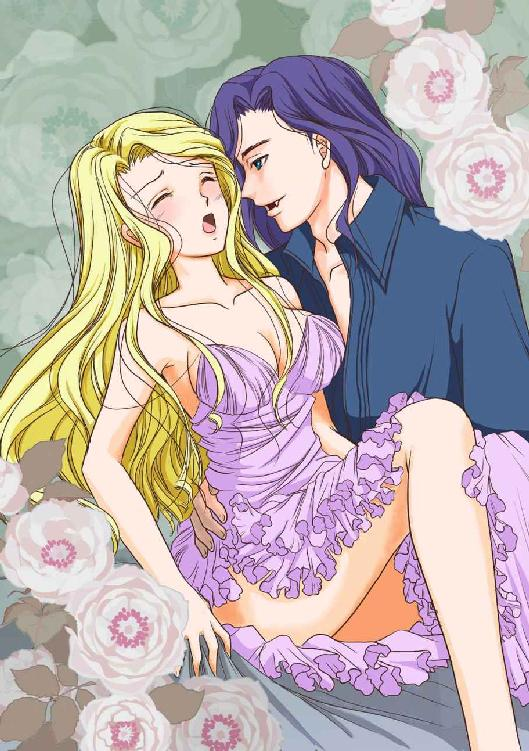
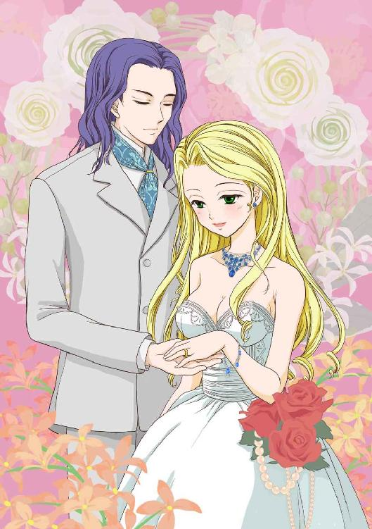

| ヴァンパイア伯爵とリラの乙女 (ディープラブ文庫) | |
| 迫・恵美 & 浦乃まみ | |
| (2015) | |
ヴァンパイア伯爵とリラの乙女
迫・恵美
浦乃まみ
本作品の全部または一部を無断で複製、転載、配信、送信したり、ホームページ上に転載することを禁止します。また、本作品の内容を無断で改変、改ざん等を行うことも禁止します。
本作品購入時にご承諾いただいた規約により、有償・無償にかかわらず本作品を第三者に譲渡することはできません。
本作品を示すサムネイルなどのイメージ画像は、再ダウンロード時に予告なく変更される場合があります。
本作品は縦書きでレイアウトされています。
また、ご覧になるリーディングシステムにより、表示の差が認められることがあります。
◆◆プロローグ◆◆
月明かりにリリィの柔らかな金髪がきらめき、翠緑の瞳は色欲に濡れる。瑞々しい白い肌は上気して桜色に染まった。
伯爵は彼女のゆたかな乳房を揉みしだき、硬く立ち上る赤い実を舌でころがしては果実に熱い口づけをくりかえす。
ふっくらと濡れるリリィの唇から、甘い声がほとばしる。
「あ、あっ......エド、ガー......様あぁ......」
伯爵は端正な顔に満面の笑みをうかべ、柔らかな乳房の赤い実を指の腹にはさんでは、したたかにひねりつぶした。
「あっ、やぁ......！」
胸の頂に走る快感にリリィの細い躰がわななき、白い首をのけ反らせる。
すると彼女の躰から甘いリラの花香が立ちのぼり彼の鼻をくすぐった。その香りは人口的に作られたきつい匂いでなく、庭に咲き乱れる花から香る、自然で心地良い香りであった。
甘く艶のある香りを吸い込むと、伯爵の碧眼の瞳がルビーのように赤く輝き、形の良い
薄い唇から白磁の牙がのぞく。
伯爵はリリィの柔らかな髪をはらい、白い喉もとにぷつりと音をたてて牙を食い込ませる。痛みはなく牙の食い込む部分がドクドクと脈打ち、リリィの躰を熱くした。
じゅっ、と強く首筋を吸い上げられて、リリィは思わず声を上げる。
「ふあっ、あ、あっ......あ、つい......」
血を吸い上げられる度にジリジリと痺れる快感がはい上がり、リリィの下腹部が焼けつくようにうずき始める。触れられていないのに蜜壷からは愛液があふれ出し、彼女の白い太ももを濡らした。
伯爵は双眸を細めてドレスのすそをたくし上げる。そして深く彼女の首筋に牙を埋めたまま、濡れそぼる淫裂にそそり立つ雄芯を突き入れた。
ぐちゅ、と音をたてて蜜壷は伯爵のたくましい雄芯をすんなり呑みこむ。
「あ、ああっ！ あ、ああっ......」
欲していた熱い塊を打ち込まれ、リリィの肉壁は蠕動をくり返し雄芯に絡みついては圧迫する。
リリィの締めつけに伯爵は眉根をよせて、彼女を支える腕に力を込め、蜜壷を深くえぐるように腰を引き下ろしては突き立てた。
「い、やあっ！ あ、ああああっ......！」
肉壁を激しく伯爵にすり上げられ、欲情が下肢からわき上がり、リリィの毛穴から汗が噴きだす。しびれるような快感にリリィは全身をわななかせた。するとより一層リラの香りが彼女から立ちのぼり、恍惚とさせる芳香が室内を満たす。
甘美な香りに包まれて、伯爵はごくり、ごくりと喉を鳴らしながら満足そうに甘露な血を飲み下す。とろりとしたビロードの舌触りと、鼻に抜ける素晴らしい花香の余韻を楽しんだ。
伯爵に首筋を深く吸い上げられ、絶頂の余韻が残る躰に新たな快楽が生みだされ、リリィは悲鳴に近い嬌声を上げて躰を震わせた。
「ひゃぁ、あ......あっ、ああ、あ......」
焼けつくような快感に目の前に火花が散り、リリィの意識はもうろうと揺らぎだす。
（──エドガー様にとって私が好餌だとしても構わない。私のことを欲して必要としてくれるのであれば、この身の全てを彼に捧げよう......）
リリィが手を伸ばして伯爵の漆黒の髪をすけば、絹のような黒髪が指からさらりとこぼれた。
すると不意に首筋から牙を抜かれ、満足そうな伯爵の吐息が耳に入る。
たくましい彼の腕に抱かれながら、リリィはゆっくりとまぶたを閉じた。
◆一章◆（リラの乙女）
片田舎の領主マシュー・ルイーズ子爵には、生まれながらに体から花が香る自慢の妻と二人の娘がいた。
香水をつけていないのに、その身からふわりと甘い花の香りが立ちのぼり人々を魅了する。特に姉のリリィは母と妹より強くリラの花香を放つが、母親のコーラ・ルイーズ子爵夫人はこれを快く思わなかった。
＊＊＊ ＊＊＊
「──ドラクル伯爵との縁談ですって？ 本当ですの？」
「ああ本当だとも！ あんな名家と親族になれるとは、我が家にも運が向いてきたぞ」
「素敵、アンは伯爵夫人になれるのね」
興奮気味に話す夫のルイーズ子爵に、子爵夫人は目を輝かせて喜んだ。
「いや、今回の縁談はアンのではなくリリィにだ。年の順番からいっても妥当だろう」
「なにを言ってるのあなた！ リリィは社交界デビューもしてないじゃない。そんな娘を嫁がせたら我が家の恥よ」
「それはお前があれやこれや理由をつけてリリィを陛下に初謁見させないからだろう。それにアンは甥のロバートと結婚させてこの家を継がせると決めたではないか」
「あなたはアンが可愛くないの！ この家を継ぐより資産家の伯爵夫人になったほうが幸せに決まってるでしょう！」
顔を真っ赤にしてがなりたてる子爵夫人のあまりの剣幕に、ルイーズ子爵は長嘆して提案をする。
「では、伯爵が我が家に来訪される時にリリィとアンの二人を紹介しよう。伯爵に気に入っていただいたほうを嫁がせればいいだろう」
「ええ、いいですわ。さっそくアンにドレスを新調してあげないと」
子爵夫人は満足そうにうなずき、朗報を伝えるために、いそいそと娘のアンの下へ向かった。
それから一ヵ月後にルイーズ子爵の邸宅をドラクル伯爵が訪れた。
まだ珍しいデイムラー車が到着し、子爵夫妻と使用人たちが正面玄関に整列して伯爵を出迎える。すぐさま下僕がドアを開けると、伯爵がゆっくり車から降り立つ。
スラリとした長身の細身で凛とした姿は若いながらも威厳があった。トップハットを脱ぐと漆黒の髪がサラリと風になびき、澄んだ碧眼に通った鼻梁で、その整った容姿は彫刻のように美しい。
伯爵の優雅な身のこなしに、子爵夫人は思わずため息をもらした。
下僕が伯爵の帽子とステッキを受け取るとルイーズ子爵はすかさず手を差し伸べて挨拶を交わす。
「ようこそお出でくださいましたドラクル卿。このような田舎に足を運んでいただき感謝しています」
「ルイーズ子爵、自然が豊かで素晴らしい領地に、ご招待いただきありがとうございます」
「気に入っていただいて、なによりです。さあ、どうぞ中へ」
子爵夫人は満面の笑みで伯爵を邸内へうながす。
客間には新調したドレスに身を包み、美しく装ったアンが伯爵を待ち構えていた。伯爵の姿を目にしたアンはその美しさに挨拶を忘れてぼうぜんと見入る。
「こちらが娘のアンです。アン、ドラクル卿にご挨拶を」
「は、はじめまして。アン・ルイーズと申します。お目にかかれて光栄です」
母親の子爵夫人にうながされ、アンは慌てて新調したドレスのすそをつかんでカーテンシーのおじぎをした。
「アン？ 確かご令嬢はリリィ嬢とお聞きしていましたが」
伯爵は不思議そうにアンをしげしげとながめながら問いかける。すると子爵夫人はにこやかな笑みを浮かべながら答えた。
「リリィは上の娘です。本日はあいにく体調が優れず遠慮させていただいています」
子爵夫人の言葉に、ルイーズ子爵は怪訝そうに眉根をよせる。
「そうですか、それは残念です。では、今日は失礼してまた後日お伺いします」
「いえいえ、とんでもない。せっかくいらしたのですから、ゆっくりしていってください。リリィの代わりにアンがお相手をいたしますので」
残念そうにつぶやく伯爵に子爵夫人は慌てて取り成した。
「では、お言葉にあまえてそうさせていただきます」
「よかったですわ。さあ、アン。ドラクル卿にピアノをお聞かせして」
子爵夫人はいそいそと娘をピアノに座らせる。アンは緊張しながら震える手でモーツアルトを奏でた。
「──アンがピアノを弾いてるのね」
リリィは邸内から聞こえるピアノの音色に耳をかたむける。
ルイーズ子爵は香水を販売する会社を経営していた。邸宅の裏手には香水に使われる花が栽培され、広大な土地に薔薇やすずらん、フリージア等が咲き乱れる。
ルイーズ子爵の上の娘リリィは、この花の世話をするのが好きで、今日も使用人たちと一緒に花摘みの作業をしていた。
美しい金髪を三つ編みにたばね、綿で出来た質素なドレスに大きめなエプロンをつけて作業をする。
普段から土いじりをする手は荒れていて、化粧気のないその姿は使用人のようで、彼女が子爵令嬢とは誰も思わないであろう。
「リリィお嬢様は伯爵様にご挨拶をなさらなくてよいのですか？」
「ええ、いいの。お母様が今日はアンにとって大切なお客様だから、私は顔を出さないようにって」
「でも、ご挨拶ぐらいはなさったほうが......姉上なのですから」
「社交界デビューもしていない私が、のこのこ顔を出すのは失礼ですもの」
不満そうな使用人にリリィはほほ笑みながら答える。すると花を摘む手がすべり、剪定はさみがリリィの手を傷つけた。柔らかな手のひらがザックリ切れて、赤い血があふれだす。
作業をしていた使用人たちは慌ててリリィの下へ集まった。
「大変！ 大丈夫ですかお嬢様！」
「こりゃ、けっこう深く切ったな」
「そんなに痛くないから大丈夫よ......」
リリィはあふれる血を止めようとエプロンで押さえながら、使用人たちに心配させまいとほほ笑んだ。
「傷口を洗わないと。お嬢様、手当てをしにもどりましょう」
「そうね、これじゃ作業の邪魔よね」
使用人にうながされて、リリィは手当てをするために邸内へ足を向けた。
伯爵がたいくつな演奏に耳をかたむけていると、不意にリラの花香が邸内に漂う。深く息を吸い込むと甘く官能的な芳香が鼻腔をくすぐり、伯爵はたまらず席を立ち上った。
「申し訳ない。ラバトリー（洗面所）をお借りできますかな？」
「もちろんです。トーマスご案内しなさい」
子爵の指示で下僕は伯爵を洗面所へ案内をする。すると伯爵は下僕の案内を無視して廊下の左手にある小さな裏階段を地下に降りた。
「伯爵様、そちらではありません」
下僕は使用人が使う階段を下りていく伯爵を慌てて制止する。しかし伯爵は人差し指かざし、香りに誘われるように使用人の控え室に足を踏み入れた。
先ほど伯爵を出迎えた家政婦長とメイド達は突然、姿を現した伯爵に驚いて立ち上って一礼する。
「伯爵様、このようなところになんの御用でしょうか」
家政婦長の言葉に、リリィは部屋に入ってきた美しい青年が伯爵だと知り驚く。
伯爵はメイドから手当てを受けるリリィに近寄り、無言でその手を取った。
「あ、あの......ド、ドラクル卿？ ......つぅ......！」
伯爵は戸惑うリリィの手に唇を寄せて味わうように傷口を舐める。切り裂かれた傷口をなぞるように舌がはい回り、リリィの心臓は高鳴り鼓動が早まった。
触れる舌先から熱いしびれが生まれ、リリィは躰をぶるりと震わせる。すると甘い花の芳香が彼女から立ち上り室内を満たした。
「あ、お止め......くだ......い」
困惑するリリィに、伯爵はサファイアのような双眸を細めて彼女を見すえて訊ねる。
「あなたがリリィ嬢ですか？」
「は、はい。お初にお目にかかります。リリィ・ルイーズと申します」
リリィは頬を紅潮させながらおずおずと答え、震える手を引いた。
すると下僕から知らせを聞いた子爵が、慌てて使用人の控え室に駆け込んできた。
「ドラクル卿、どうかなさいましたか？」
そこに体調が悪いはずの娘のリリィの姿を目にして子爵は驚いた。
「リリィ、お前はここでなにをしている？ 体調がすぐれないから伯爵をお出迎え出来なかったのではないのか」
「あの、それは......」
ルイーズ子爵の問いかけに口ごもるリリィに、メイドがすかさず口をはさむ。
「リリィ様はお客様のお出迎えはなさらないように、奥様からお申しけつがありました」
「なんだと......？」
メイドの言葉に子爵は驚き眉根を寄せながらリリィに問いかける。
「それで、その血はどうしたのだ」
「あの、花摘みの手伝いしていて手を傷つけてしまったの......でも大丈夫、もう血は止まったから」
そっと傷口を見ると、先ほどまであふれていた血はいつのまに止まりかたまっていた。
「ならば着替えて食事に出なさい」
「でも、お母様が......」
「私のいいつけだぞ、着替えなさい」
「はい、お父様」
父である子爵の命令にリリィは素直にうなずいて自室に向かった。
子爵は伯爵に謝罪をするために、夫人たちが待つ音楽室には戻らず、静かな書斎に足を向ける。
「お見苦しいところをお見せして申しわけありませんでした。どうも娘は勘違いをしていたようで......」
リリィが出迎えをせず、危うく顔合わせをすっぽかしそうになったことで、伯爵が不愉快に思っていないか子爵は不安になる。流れる冷や汗をハンカチでぬぐいながら、娘の不手際を侘びた。
「お気になさらず。私のほうこそ招かれざる場所へ足を踏み入れた非礼をお詫びします。つい、リリィ嬢の甘い香りに誘われてしまいました」
子爵の心配をよそに伯爵はにこやかに答える。その様子に子爵は胸をなで下ろした。
「不調法な娘でお恥ずかしい限りです」
「いえ、お嬢さんはとても美しい。それに評判どおり素晴らしい芳香ですね。あれが香水でないとは驚きです」
「私も最初は驚きましたが、芳香異体と言うらしいです。妻の家系の女性は生まれながらにして体から良い匂いがします」
「なるほど......ですが夫人は香水をつけられてるようですが？」
「芳香異体には香りの種類も強さも個人差があるのです。妻はピオニー、娘のアンはシトロンの香がしますが、かすかにしか匂いません。だがリリィはご覧のとおり、なにもせずとも自身から強い芳香を発します」
「ええ、本当に、部屋中を満たすリラの気品あふれる優しい香りでした。まさにリラの乙女に相応しい」
伯爵は子爵の言葉にうなずきながら、恍惚とした表情を浮かべる。
「リリィのことをお気に召していただけましたか？ 妻は下の娘のアンを嫁がせたがっていますが、伯爵のお気持ちはどうですか？」
「申し訳ないのですが当初のお話通り、リリィ譲との縁談を進めていただきたい」
「もちろん私に異論はありません。妻のことはお気になさらないでください。もともとアンは甥と結婚させてこの家を継がせる予定でしたので」
「そうですか。では、具体的な日取りと持参金ですが......」
そののち、縁談の話し合いはスムーズ進められ、下僕が昼食を呼びに来るころには、伯爵とリリィの縁談はすっかり固まっていた。
ユリの花が活けられたダイニングに、淡いラベンダー色のドレスを着たリリィが姿を現し、子爵夫人は驚く。
あれほど妹の縁談話を邪魔しないように言い聞かせたのに、ずうずうしくも着飾り当たり前のように昼食会の席に座るリリィを、子爵夫人はギリギリとにらむ。怒りで手が震え、誰の許可を得てここにいるのか厳しく叱責しようとしたが、夫の子爵が渋い顔で首を横に振るのが目に入り、はっと我に返った。
子爵夫人はばつが悪そうに夫から視線をそらし、気を取り直してにこやかな笑みを作ると、隣に着座する伯爵にアンの素晴らしさをしゃべり立てる。
伯爵は子爵夫人の話を、相づちを打ちながら聞き流し、リリィを見つめた。
ゆるやかにウエーブした金色の髪にエメラルドの瞳、ふっくらしたピンク色の唇は花の蕾のように美しく。そしてリリィから香る芳香は生けられたユリの花よりも甘く魅惑的であった。
情熱的な伯爵の視線に、リリィの胸は高鳴り、ふさがったはずの傷口がチリチリとうずく。彫像のように美しい伯爵を直視出来ずに、下を向いたまま黙々と食事を口に運んだ。緊張のあまり大好きなデザートのトライフルの味もよく分からなかった。
程なくして食事が済むと、帰宅する伯爵を見送るために、使用人たちが玄関ホールへ整列する。
子爵と子爵夫人もにこやかに伯爵を見送り、満足そうに握手を交した。
すると伯爵は緊張してたたずむリリィとアンに歩み寄りひざまずく。そしてリリィの手を取ると口づけを落とした。
「リリィ嬢、あなたの美しさと気品ある芳香に心を奪われました。どうか私の花嫁になってください」
「えっ、わ、私ですか？ アンでは......」
自分ではなく、アンの縁談だと思っていたリリィは、伯爵の唐突な求婚に驚く。
戸惑うリリィに、子爵は優しい笑みを浮かべながら口ぞえをした。
「リリィ、もとはお前への縁談話だ。嫌でなければお受けしなさい」
「私の......？」
リリィは母親の子爵夫人に、妹のアンと伯爵との縁談話を邪魔しないように言われていた。父の言葉を不思議に思い母を見る。
すると手を強く握りしめて、リリィをギリギリとにらむ母親の姿が目に入り、その鬼のような形相に驚いてリリィは思わず身をすくめた。
子爵はおびえて尻込みするリリィの肩を強く抱いて言い聞かせる。
「迷っているならゆっくり考えなさい。だが、この縁談を断ったらお前は従兄妹のロバートと結婚してこの家を継ぐことになる。言ってる意味が分かるな？」
子爵の言葉にはっと気づかされ、リリィは息をのむ。
子爵家を継ぐことになれば死ぬまで母のそばに居なければならない。それはリリィにとって耐え難い苦痛と恐怖であった。
なぜか生まれた時から母は自分を忌み嫌い、憎んでいた。幼いころからささいなことが理由でムチで打たれ、リリィの体には青あざが絶えなかった。骨を折る大怪我も何度もあった。
最初は自分が悪いのかと思っていたが、妹のアンが生まれると違うと分かった。アンと同じことをしても自分だけが叱られ、アンの失態をリリィが責められる。
そしてリリィを責める代わりに母はアンを溺愛した。
アンが社交界デビューした時、父からアンが従兄妹のロバートと結婚してこの家を継ぐと聞かされる。
いずれ自分はこの家を離れ、母から解放される。リリィは希望に胸を膨らませていた。
だが、伯爵との縁談を断ればアンが伯爵家へ嫁ぎ、自分は母親の呪縛から逃れられなくなる。
リリィはぎゅっと手を握りしめ、意を決して頭を下げると、力強い声で伯爵に申し出る。
「ドラクル卿、求婚をお受けいたします。ふつつかものですがよろしくお願いいたします」
「ありがとうリリィ嬢。承諾していただき嬉しいです」
伯爵はほほ笑みながら再びリリィの手に口づけをおとす。
すると使用人たちから拍手がわきおこり、口々に祝福の言葉が贈られた。
「おめでとうリリィ」
ルイーズ子爵はうれしそうにリリィを抱きしめて結婚を喜ぶ。
子爵夫人は眉根をよせ、喜び合う二人を冷ややかに見つめた。
──それから伯爵は名残惜しそうに、リリィの手に口づけをくり返し、玄関ホールを後にした。
伯爵は車まで見送りに出たルイーズ子爵と別れの握手を交わすと車に乗り込む。
下僕が車のドアを閉めようとすると、邸宅の玄関ホールからものが割れる音とメイド達の悲鳴が聞えた。
メイドの一人が玄関から飛び出すように駆けより、執事に耳打ちをする。すると今度は慌てた様子で執事が子爵に耳打ちをした。
「──なんだと？」
執事の報告に驚き、子爵は慌てて邸内に戻る。執事と従者、下僕も子爵の後に続き、屋敷に駆け込んだ。
玄関ホールに足を踏み入れれば、入り口に飾られていた大鏡が割れて、その前でリリィの髪をつかむ子爵夫人の姿があった。
「この淫乱が！ アンの結婚を横取りして、また私の幸せを奪う気！」
止めに入る家政婦長とメイドをふり払い、夫人は鬼の形相でリリィを殴る。手には飾りテーブルに置かれていたクリスタルの花瓶が握られていた。
「やめなさいコーラ！ なにをしている！」
「あなたは黙っていて！ この娘がアンの幸せをぶち壊したのよ！」
夫人は制止する子爵に食ってかかるが、駆けつけた下僕と従者に取り押さえられる。リリィへの罵詈雑言を叫びながら夫人は二階の自室へ連れて行かれた。
騒ぎを心配した伯爵は玄関ホールに戻り、割れた鏡の前でうずくまるリリィに駆けよる。
「リリィ嬢、大丈夫ですか!?」
「──ドラクル......卿......つぅ！」
リリィは顔をゆがめながら、青く腫れ上がる右手首を押さえる。
「これは下手をすれば折れているな」
「今、医者を呼びましたので、リリィお嬢様をこちらへお願いします」
執事にうながされ、伯爵は震えるリリィを抱き上げて、客間の長椅子に寝かせる。
すぐに村の医者が駆けつけて、リリィの手当てを始めた。
執事は心配する伯爵を隣接する応接間に案内し、スコッチを手渡しながら謝罪をした。
「お手をわずらわせて申し訳ありませんでした」
「いや、気にするな」
そこへ疲れきった様子の子爵が二階から降りてきて、伯爵に謝罪をする。
「お帰りの間際に、見苦しいところをお見せして申し訳ない」
「いえ、夫人は落ち着かれましたか？」
「はい、なんとか。本当にお恥ずかしい。縁談が自分の思い通りにならないからと言って、リリィにあんな八つ当たりをするとは......」
執事からスコッチを受け取る子爵に、伯爵は尋ねかけた。
「不躾なことをお聞きしますが、その、リリィ嬢は子爵夫人の実子で？」
「はい、リリィもアンも妻が産んだ子です。ですが妻はリリィの強い香りを嫌い、生んだ時から疎んじてきました」
「なぜです？」
「妻にはリリィと同じように、花の香りを強く放つ妹がいるのですが......昔、彼女に婚約者を奪われたのです」
子爵はグラスのスコッチを一気に飲み干し、話を続ける。
「妹が香りで婚約者を誘惑したと思っている妻は、妹への恨みをリリィにぶつけてしまうのだと思います。何度も止めるように言い聞かせてきたのですが......」
沈痛な面持ちで子爵が長嘆すると、扉がノックされ、リリィの手当てを終えた医師が顔を見せる。
「先生、娘の容態は？」
「右の前腕骨が骨折していて、完治するのには五週間ぐらいかかります」
「そうですか......」
「今年に入って二回目です。お嬢様をどこかで療養させたほうがいいと思いますが？」
事情を知る医師は気づかいながら、苦々しい表情で提案をした。すると伯爵が子爵に申し出でる。
「差しでがましいようですが、リリィ嬢を我が家で療養させてはどうでしょうか？ 優秀な在宅医がいますし、婚姻の契約を交わせば世間体にも問題はないでしょう」
「そうしていただけるとありがたいですが、まだ社交界デビューもしていないのにご迷惑では？」
「いいえ、初謁見と結婚の準備を彼女と一緒にできるのは楽しみです」
「ではお言葉に甘えてお願いいたします」
思わぬ伯爵の申し出に、子爵は二つ返事をして握手を交わす。
醜聞ともいえる子爵夫人の、リリィへの仕打ちを聞いても嫌な顔もせずに受け入れ、娘との縁談を進める伯爵に、子爵は心から感謝をした。
＊＊＊ ＊＊＊
予定よりずいぶん遅い時間にドラクル伯爵が帰宅し、執事が慌しく出迎える。
「おかえりなさいませ旦那様。お食事はいかがなさいますか？」
「ワインと軽いものでいい。それと花嫁を迎えることにした。二～三日中に部屋の用意をしてくれ」
「は、はい。承知しました」
執事は花嫁を迎えるという伯爵の指示に驚いて目を丸くするが、すぐに平常を取り戻し返答した。
「──今日は顔合わせだけのはずでしょう。もう結婚してきたの？」
燃えるような赤毛の美女が寝室に顔をのぞかせ伯爵に問いかけた。
女の無作法な物言いを気にすることなく、伯爵はそっけない態度で答える。
「求婚はしてきた。ケガをしているので家で療養させる。シャルロット、お前が診てやってくれ」
「別にいいけど、エドガーにしてはせっかちねぇ。そんなにいい女だったの？」
「ああ、極上品だ」
運ばれてきたワインを口にして、迷うことなく言い切る伯爵に、シャルロットは面白くなさそうに琥珀色の瞳を細める。
「ふ～ん、あなたにそこまで言わせるなんてどんな娘か楽しみだわ」
シャルロットは羽織っていたガウンを脱ぐと、薄い部屋着姿になる。大きく胸のあいたシルクのナイティは、彼女のグラマラスな躰を際立たせた。
「でも今はまだ、あなたの女は私でしょう？」
赤毛の女は妖艶にほほ笑み、伯爵の首に手を回して口づけをする。
伯爵は強引なシャルロットの口づけを拒むことなく応え、舌を絡ませる。彼女を抱きよせ、豊満な胸を揉みしだいた。薄い布越しに立ち上る乳首を指で摘まんでしごきあげる。
「あ、あっ、ああん。いい、吸って。お願いエドガー......」
シャルロットの甘い声に誘われ、伯爵は差し出された首筋に舌をはわせて強く吸いつく。すると彼女の躰は快感にわなないた。
焼けつくような快楽が走り、シャルロットはヒイヒイと喘ぎながら、手足を弛緩させる。
ちゅぷっと音をさせて、伯爵がシャルロットの首筋から唇を離すと、ポッカリあいた二つの穴から鮮血が滴り落ちる。
──伯爵の瞳は澄んだ青色でなく、燃えるような紅眼に変わっていた。
◆二章◆（贄の花嫁）
──数日後、ドラクル伯爵とリリィの婚姻の契約が交わされ、リリィは晴れて伯爵の婚約者となった。
ルイーズ子爵邸から馬車で五時間の所に、ドラクル伯爵のカントリー・ハウスがあった。
領地で一番大きな村から続く並木道を進むと、錬鉄の門とその両側に古典様式の門番の家が見えてくる。
さらに道を進み広々とした牧草地を抜けて曲がると、台地の端に到着し突然視界が開けた。
眼下に伯爵の所領の全貌が広がり、その中心に壮麗な館が君臨する。美しい庭園を抜けて、車がヴィクトリア様式の豪華な邸宅に到着した。
正面玄関には子爵家の二倍の使用人が整列して出迎える。下僕が車の扉を開けると、右腕を包帯で吊った痛々しい姿のリリィが、緊張の面持ちで降り立つ。
するとすぐさまドラクル伯爵が駆けより、リリィの手を取った。
「お待ちしていました。ケガの具合はいかがですか？」
「あ、はい。だいぶ痛みはなくなりました。この度はお招きいただきありがとうございます」
「今日からはあなたの家ですよ。さあ、中を案内しましょう」
柔らかな笑みを浮かべて、伯爵はリリィを邸宅の中へとうながす。
邸内は荘厳なバロック様式の天井と壁には一面の刺繍がほどこされ、まるで王宮のようなきらびやかさだった。
あまりの豪華さにリリィがあっけに取られていると、執事が一歩前に進み出てうやうやしく挨拶を述べてから、使用人たちの紹介を始めた。
家政婦長、従者と続き、リリィの世話をする侍女のデイジーがにっこりとほほ笑んで一礼する。ふっくらとして優しげな侍女に、リリィはほっと胸をなで下ろし、ほほ笑み返した。
執事によって一通り邸内の案内が終わり、最後にリリィの寝室へ向かう。淡いコーラルピンクで統一された室内は贅をこらした調度品で飾られ、支柱が二本の天蓋ベッドに思わずため息がもれる。
「すてき......ここが私の部屋なの？」
「旦那様がリリィ様を迎えるために改装されたのです。お気に召しましたか」
「えっ、七日で？」
「はい、壁紙に調度品全てです。ドレスや宝石も一通りご用意しております」
にこにこと笑いながら侍女がクローゼットを開く。
すると中には刺繍やレースがほどこされた美しいドレスが何着も並び、リリィは目を丸くする。ほとんど会話を交わしたこともない自分に、伯爵がなぜそこまでしてくれるのか不思議に思い戸惑った。
「こんな高価なものを、いただけないわ」
「リリィ様は旦那様と結婚されるのですから、一言お礼を申し上げればよいのです」
「でも、私には不相応だわ......」
「そんなことありません。とてもよくお似合いになると思います。それに伯爵夫人になられるのですから、品格ある装いは貴婦人の義務です」
「義務......」
きっぱりと言い切る侍女に、リリィは考え深くため息をつく。
レディとしての一般教養は受けていたが、母親に虐げられてきたリリィは、贅沢なドレスなど持っていない。いつも豪華なドレスをまとう妹のアンに比べて、簡素なものばかりであった。
「では、お夕食はどのドレスにいたしましょうか？」
慣れない状況に戸惑うリリィを横目に、侍女はうきうきと楽しそうに、イブニングドレスを並べてリリィの身支度を整え始めた。
豪華な赤い絨毯が敷きつめられたダイニングホールには、クリスタルで出来たシャンデリアがきらめく。食前酒がグラスに注がれると、リリィが口を切った。
「あの、ドラクル卿。沢山のドレスや宝石をありがとうございます。それとお部屋もとても素敵です」
「気に入っていただけて良かったです。貴女にはやはり淡い色が似合いますね」
柔らかな笑みを浮かべる伯爵に、リリィは頬を赤らめた。
「リリィ嬢に一つお願いがあります」
「はい、なんでしょうドラクル卿」
「そのドラクル卿はやめて名前で呼んではもらえないでしょうか？ 私達は結婚するのですから」
「あ、はい。エ、エドガー様......」
「ありがとうリリィ」
顔を真っ赤にするリリィを目にして、伯爵は満足そうにほほ笑み、ワインを口にした。
リリィは初めて伯爵の名前を口にして恥ずかしさで胸が高鳴る。彫像のような美貌の持ち主で、優しい貴公子が自分の夫になることが、リリィは信じられなかった。
伯爵ならば自分よりも家柄が良く、資産家で美人の令嬢との縁談がいくらでもあったはずだ。リリィは自分の幸運を噛みしめながら前菜を口に運んだ。ディナーは片手しか使えないリリィのために、食べやすいように工夫されて、とても美味しかった。
食事を終えると執事が伯爵に歩みより、耳打ちをする。伯爵はうなずき、リリィに医師が来たことを伝えた。
伯爵に手を引かれ、リリィが寝室へ戻ると、伯爵は去り際に彼女を抱きよせて唇をかさねた。
初めての口づけにリリィの胸はトクンと高鳴る。優しく触れ合う唇が心地良く、彼女の躰からふわりと甘い花香が立ち上った。
室内がリラの花に満たされ、伯爵はリリィを抱く腕に力をこめる。すると優しい口づけは激しく熱いものへと変り、彼女の口内を愛撫した。くちゅくちゅと艶かしい水音を立てて、舌がすり合わされ、別の生き物のように口内をうごめく。
熱くぬめる舌が絡められ、強く吸い上げられるたびに、リリィの躰は熱く火照る。その激しさに、頭の芯がかすんでクラクラした。
リリィの足が震えて力が抜けると、伯爵はそっとベッドへ座らせる。
伯爵はサファイアの双眸を細め、名残惜しそうにリリィの艶やかなピンク色の唇を指でなぞった。
「はやくケガを治してください」
「は、はい......」
リリィは高鳴る胸を押さえ、震える声で伯爵に答えた。
「──失礼します。ヘルシング先生をお連れしました」
不意に入り口から執事の声がして、赤毛の貴婦人が大きなバックを持って佇んでいた。
「初めまして、治療を担当する医師のヘルシングです」
「え、女性のお医者様？」
情熱的な赤い髪に琥珀色の瞳の美女が、医者と聞いてリリィは驚く。
「英国では珍しいが、米国には女性医師がいるのです。ヘルシング先生、彼女をたのみます」
伯爵は優しくリリィの頬を撫でると、そっけなく女医に言づけて寝室を後にした。
女医は早速ギプスを外して、リリィの腕の診察を始める。腕の腫れはひいていたが、青黒い内出血はそのままだった。
「ふ～ん。ひびは入ってるようだけど折れてはいないようね。来週にはギプスを取っても大丈夫よ」
「ありがとうございます。ヘルシング先生」
「その先生はやめて、おじいさんみたいで嫌いなの。シャルロットでいいわ」
シャルロットは口をとがらせて不愉快そうに言いながら、リリィの首筋に顔を寄せて匂いを嗅ぐ。
「──本当に花の香りがするのね。確かに極上品だわ......」
興味深げにリリィをながめてシャルロットはつぶやく。
撫でまわされるように見られ、リリィは恥ずかしそうに身をすくめた。
「それにとても可愛いし、これじゃ私が伯爵に捨てられても仕方ないわね」
「えっ、捨てられる？」
「聞いてない？ 私は伯爵の女なの」
「あなたがエドガー様の恋人......？」
妖艶に笑うシャルロットに、リリィは目を丸くして聞き返す。
「恋人というよりは欲望のはけ口かしら？ だから妻になるあなたが心配することはないのよ」
あっけらかんとしたシャルロットの言葉に納得が出来ず、リリィは不安になる。中流階級とはいえ、美しく教養がある恋人を捨てて、なぜ取り得のない下級貴族の娘と結婚するのか理解が出来なかった。
「そんな顔をしなくても大丈夫よ。伯爵はあなたに夢中なんだから」
「私に？ そんなことがあるわけないです......」
リリィはいずれ自分も捨てられるのだろうという思いが頭をよぎり、涙がぐっとこみ上げ声を詰まらせる。
すると先ほどとは違う、わすれな草を思わせるフローラルグリーンの香りがリリィから立ちのぼった。
「さっきと違う香りがするわ。 面白い、感情によって香りや強さが変るのね？ 私にあなたの芳香体質を調べさせてくれない」
「芳香体質？」
「いい匂いの体臭を持つ人のことよ。医者として興味があるの、痛いことはしないから。ね、お願い」
興味深々に琥珀色の瞳をキラキラ輝かせるシャルロットに、リリィはおずおずと尋ねる。
「あの、私のこの匂い......治せますか？」
「治す？ あなた本当に自分の価値が分かってないのねぇ」
「でも、母は私の匂いがきつ過ぎて臭いって......」
「人によって感じ方が違うだろうけど、少なくとも伯爵はあなたの香りを気に入ってるんだからいいじゃない」
「私の香りを......？」
「そうよ、だから伯爵と結婚できるんじゃない。自信持ちなさい」
「でも......」
いつまでも不安そうなリリィの様子にいらだち、シャルロットは思わぬことを口にする。
「わかった。伯爵の秘密を教えてあげるから今夜、零時に彼の寝室へ来なさい」
「えっ、秘密？」
「そうよ。隣の浴室が主寝室に続いてるでしょう？ その先に伯爵の私室、寝室と続いてて内扉で行けるから、分かった？」
無言でうなずくリリィの手から、シャルロットは素早くハンカチを奪い取る。
「じゃあ、これは手付金にもらうわね」
リリィの匂いが染みこんだハンカチをひらひらさせながら、シャルロットはうれしそうに部屋を後にした。
──部屋の時計が零時を示し、邸内は水を打ったように静まり返る。リリィはベッドからそっと抜け出してガウンを羽織った。
シャルロットに言われた通りに浴室を抜けて主寝室へ足を踏み入れる。女性らしいリリィの寝室と違い、シンプルで気品がある、落ち着いた雰囲気の造りになっていた。
リリィはいずれ伯爵と共にするであろう豪華な天蓋付のベッド前を通り、寝室の反対側にある内扉に手をかける。
許しもなく伯爵の私室へ足を踏み入れる罪悪感に、リリィの足は震えた。緊張しながら暗がりの部屋を進み、伯爵の寝室の前にたどり着く。内扉はきちんと閉められていなくて、少しのすき間から人の声が漏れていた。
リリィは扉のすき間をそっとのぞく。
すると月明かりの部屋に伯爵とシャルロットの姿があった。
伯爵がシャルロットの首に顔をうずめて、抱き合う姿は愛し合う恋人同士そのもので、リリィは思わず息をのんだ。
薄いナイティの胸もとがはだけ、シャルロットの豊満な乳房を伯爵の大きな手が揉みしだく。
「あ、ああん、もっと、もっとちょうだい！ 強く吸ってエドガー......」
のどを絞り上げるような、よがり声をあげてねだる。
すると伯爵はシャルロットを深く抱きしめて、首筋を吸い上げた。
「ひっ、ひいっ、あっ、うううっ！」
狂い泣くような甲高いよがり声を響かせて、シャルロットが上体をのけ反らせる。
恋人だと聞いてはいたが、実際に愛し合う姿を目の当たりにして、リリィの胸はズキンと痛み目に涙がにじむ。
すると感情が高ぶり、リリィの体から芳香が立ち上りフローラルグリーンの香りが伯爵の鼻をくすぐった。
伯爵は眉根を寄せて顔を上げると、澄んだ青い瞳は赤く光り、形の良い薄い唇からは白い牙がのぞく。昼間の優しい面影は微塵もなく、伯爵のその風貌の変りようにリリィは背筋を凍らせる。
「許しを得ずにここでなにをしている？」
伯爵は殺気をふくんだ炯眼で、扉口に隠れるリリィをにらむ。
「あ、あの......」
リリィは驚きと恐怖のあまり立ちすくみ、ガクガクと震えた。
「私が呼んだのよ、怒らないで」
「どう言うつもりだ？」
何事もないようにガウンを羽織るシャルロットを、伯爵はじろりとにらむ。
「あなたがいつまでも好青年を演じてるから、説明する手間をはぶいてあげたんじゃない」
「ちっ、余計なことを」
伯爵は前髪をかき上げて、不愉快そうに舌打ちをする。
「あら？ じゃあ、あなたが自分で吸血鬼だと説明する？」
人差指を唇にあてておどけるシャルロットから視線をそらし、伯爵は戸口で震えるリリィを見据え言い放つ。
「好きにしろ」
そして血が滴るシャルロットの首筋に手を伸ばすが、彼女は伯爵の手を払いのけた。
「いいわ。すぐに止まるし、あの娘に見せたいから」
シャルロットは内扉に向かい、立ち尽くすリリィの手をつかむと、部屋の奥へと姿を消した。
「──よろしいのですか？ 逃げられてしまうのでは？」
いつの間にかそばにいた従者が伯爵の横にたたずみ、グラスにワインを注ぐ。
「かまわん、逃げたら人形にして飼うだけだ」
伯爵は一気にグラスをあおり、ワインを飲み干し長嘆した。
私室に戻るとシャルロットは震えるリリィを座らせて水を差し出す。
「あ、あの......エドガー様はいったい......」
「さっき言ったでしょう？ エドガーは吸血鬼よ」
シャルロットは煙草に火をつけて紫煙を吐き出し答える。
「きゅ、吸血鬼？」
「そうよ、血をすするあれが彼の本当の姿」
「で、でも。エドガー様は日に当たっても平気です」
「ああ、それね。巷で言われていることは結構でたらめでね。ニンニクも十字架も彼には効かないわよ。棺おけで寝てもいいないしね」
シャルロットはクスリと笑いながら煙草をもみ消す。
「じゃあ、私は食料として望まれたのですね......」
「まあ、そうね。嗜好品みたいなものかしら。さしずめ花が香るあなたの血は最上級ワインと言ったところね」
「ワイン......」
「そんなに怖がらなくても大丈夫よ。血を糧にしてる訳ではないから、死ぬほど吸われることはないの」
「あ、あなたも吸血鬼なの？」
「いいえ、人間よ。吸血されても吸血鬼にはならないわ」
伯爵が吸血鬼だという思いがけないシャルロットの告白にリリィは困惑し、昼間とはあまりにも違う様相の伯爵に、どちらが本当の彼なのか戸惑う。
「おとなしく彼に従いなさい。少しの血を差し出せば得るものは大きいわよ。伯爵夫人に贅沢な暮らし。それと最高の快楽を味わえるわ」
「シャルロット、あなたは私が伯爵と結婚してもいいの？」
「ええ、もちろん。私は伯爵に恋愛感情はないの。研究対象として彼に抱かれていたんだから。吸血鬼についてはだいたい調べつくしたから、今度はあなたを研究したいの」
好奇心に目を輝かせてシャルロットはリリィを見つめて迫る。
「さあ、約束よ。サンプルを採取させて」
シャルロットはリリィから強引にナイティと下着を脱がし、満足そうに自分の部屋に戻っていった。
裸にされたリリィは、手早く動きやすいドレスに着替える。窓をそっと開けて、夜の冷たい空気を吸い込んだ。
「そうか......私は花嫁でなく家畜なのね......」
リリィはポツリとつぶやいて夜空を照らす満月をながめた。
＊＊＊ ＊＊＊
翌朝、不機嫌そうに伯爵が食堂へ出向くと、逃げたと思っていたリリィの姿があった。
「エドガー様、おはようございます」
いつもと変らぬ様子で笑顔を向けるリリィに、伯爵は怪訝な顔でたずねる。
「なぜ逃げなかったのです？ 私が怖くないのですか」
「エドガー様から、逃げる理由がありません」
おずおずと答えるリリィに、伯爵は不愉快そうに片眉を上げる。
「シャルロットから聞いたのでしょう？ あなたを食い殺すかもしれませんよ」
「私に逃げる所などありません。家に戻っても母を不愉快にさせるだけですから......」
「ふん、ここに残る腹を決めたわけか。いいだろう、それに見合う贅沢な暮らしは約束しよう。それと快楽を......血の口づけを与えてやる」
「血の口づけ？」
「お前の血を味わうことだ」
急に伯爵の様相が変り、昨夜と同じかさ高な物言いになる。にやりと笑い、リリィのあごを指で軽く持ち上げて唇を寄せた。
以前の優しい口づけではなく、かみつかれるような激しい口づけにリリィは驚く。舌が抜けると思われるほど伯爵に吸われ、口内をぐちゃぐちゃにかき回された。
「んっ、ふう......」
上あごを舌でなぞられ、くすぐったい感覚にリリィの背中がザワリと粟立つ。激しい口づけにめまいを覚えると、伯爵にブラウスの襟元のボタンが外され胸元があらわになる。
すかさず伯爵の手がリリィの胸元に差し込まれ、彼女の豊かな乳房を揉みしだいた。
「やぁ、まってください......式がまだなのに......」
「心配するな。純潔までは奪わない。快感を得たほうが血が甘くなる」
「だ、だけど......こんなところで......」
リリィの制止を聞くことなく、伯爵は彼女の白く柔らかな胸を、緩急をつけて丁寧に揉みほぐす。
誰にも触れられたことがない乳房を弄ばれて、リリィは初めて味わう感覚に身震いした。乳房に実る果実を指腹で弾いてはグリグリとしごけば、果実はたちまちに赤く色づいて、硬く立ち上った。
「あ、んっ......」
痺れるような甘いうずきに、リリィは顔を赤らめて、声がでないように指をかむ。より大きくブラウスが肌蹴ると、ぷるんと形によい乳房がまろびでた。
「きゃっ......」
「見た目より大きいな。手にすいつく感じもいい」
伯爵は赤く熟れた果実を口にふくみ、くちゅくちゅと吸い上げる。

「ひゃ、ああ、やあっ......ああ......」
リリィは乳首をねっとりと舌で嬲られ、伯爵に強く噛まれる。すると痺れるような甘いうずきが胸の先から下肢に走った。
「やっ......あっ、あ、やめ......」
伯爵はいきり立つ赤く熟れた乳首を舌で弾いては吸い上げて、甘噛みをする。
甘い痺れに耐えきれず、リリィは躰をよじって切ない声を発した。
「ああ......ふあっ......あっ、あぁぁ」
伯爵の歯が赤く熟れた乳首に柔らかく食いこむと、ビリっと電気に打たれたような愉悦がリリィの躰に走る。
「甘くて旨い果実だな」
伯爵の丹念な愛撫にリリィの躰は火照り、腰の辺りがうずき始める。じくじくと甘い疼きがそこから生まれ、蜜壷がかっと熱くなった。ジュクリと甘く淫らな蜜が花淫からにじみ出す。
徐々に甘い濃密な花の香りがリリィから漂い始め、伯爵は満足そうに花香を吸い込んだ。
「素晴らしい芳香だ......甘く誘う」
ため息混じりにつぶやいて、リリィの頬から首筋を優しく撫でる。白く細い彼女の首に唇をよせてキスを落とし、狂おしいほど胸を揉みしだいた。
「ふぁっ......」
伯爵の唇が触れたた瞬間、リリィは小さく声をもらし、華奢な躰をぴくりとふるわせる。首筋を熱い舌が這いまわり、強く吸い上げられるとジンジンと痺れて、火がついたように熱くなった。
「んっ、あつ......い......あっん......」
我慢しきれずにリリィは甘い声をもらす。すると伯爵の青い瞳が赤く変り、薄い唇からは二本の牙がのぞいた。
リリィの細い喉に鋭い牙が押し当てられ、柔肉にゆっくり食い込む。しかし痛みはなく、それどころか牙の食い込むところがジワジワと熱を帯び、首から脳髄へ痺れるような快感が這い上がってくる。
「ふぁ、あぁっ、あぁぁ......！」
深く、強く吸い上げられ、激しい疼きに思わずリリィの腰がぴくんとはねた。
花が香る極上の血潮が口内にあふれ、上品で繊細なとろける様な舌触りに、伯爵はゴクリと喉を鳴らしながら飲み込む。鼻に抜ける花香が心地よく染み渡るリリィの紅血は、媚薬のように伯爵の躰を熱くした。想像以上の甘くとろけるような甘露に、頭の芯がくらくらする。
「つぅ......」
わき上がる射精感に伯爵は眉根をよせて牙をリリィの首から引き抜くと、チュプッと小さく生々しい音が響いた。
リリィはぴくんぴくんと腰を震わせて身悶える。今まで感じたことがない躰中のあらゆる処が、ひりつくように疼く。
（これが血の口づけ......？）
痺れるような快楽にリリィの意識がぼんやりし、伯爵の腕の中でまどろんだ。
するとスカートの裾がたくし上げられて、白く張りのあるリリィの太ももを、伯爵の手が撫でまわす。蜜があふれだす花園にスラリと長い指が触れた。
「い、いや、そこは！」
初めて媚肉に触れられて、リリィは驚いて伯爵の手を押さえるが、痛めた腕に力が入り、激痛に顔をゆがめた。
「いっ、つう......！」
すかさず伯爵はリリィの細い腕をつかんで引き寄せる。躰ごと体重をかけて彼女を絨毯が敷かれた床に押し倒した。
伯爵の澄んだ宝石のような蒼く美しい瞳は、燃えたつ紅玉に変っていた。理性が切れたのか全てを食い尽くそうとする、野獣のようなギラギラした瞳でリリィを見据える。
鋭い獣のような瞳に、リリィは思わず身がすくんだ。
再びしなやかな伯爵の指が、リリィの花淫の茂みに潜り込み、つつましく閉じていた花びらを上下になぞる。
「ひっ、いや！ 触らないで......約束が......違う......」
リリィの懇願に伯爵は答えず、息を荒くしながら、すでにしとどに濡れそぼる花唇に指をぬぷっと差し込んだ。
「いやぁ、止めて......そんな......淫らなこと......」
誰も触れたことがない秘処に伯爵の指が進入し、リリィは柔らかな金髪を振り乱して悶えた。
くちゅくちゅと淫らな音を響かせて、伯爵のしなやかな指が肉路の奥に進む。
「ひゃぁ、やめっ......」
背中がざわつき、リリィは思わずのけ反った。伯爵の細くて長い指が自分の胎内に潜り込む感覚に、ぶるっと躰を震わせる。甘い疼きが下肢からどんどんせり上がり、とろりと熱い蜜が花淫からあふれて濡らした。
「あぁ、ふあっ......あんっ......あ、あぁっ」
耐え難い疼きにリリィは白い喉を反らせ、まろやかな乳房を淫らにぷるぷると震わせながら悶える。
ふいに、伯爵の指先が、花びらに埋もれる肉芽をすり上げた。とたんビリビリと脳髄まで貫くような快感が走る。
「ひいっ、やあぁぁっ......！」
リリィはぴくぴくと全身をおののかせて悲鳴に近い嬌声をあげた。充血した肉芽を指の腹で押しつぶすようにこねまわされ、伯爵の淫らな指先で嬲られる。
「やめ......て、そこを......いじら......ないでぇ......」
官能的な炎は業火となってリリィを焼き尽くす。狂おしいほどの快感に気がどうにかなりそうだった。甘く濃厚なリラの花香が、むせ返るようにリリィから放たれる。
その芳香を吸い込むと、伯爵の躰はどうしようもなく疼いて、欲望にたぎった。
快感で打ち震えるリリィの花淫を、伯爵は大きく左右に開く。蜜があふれる淫溝を舌で舐めあげて、媚肉に隠れる肉芽に吸いついた。
「あっ、いやぁ、あっ......」
伯爵のねっとりと温かい舌が、ピンク色の硬い肉芽をねぶる。肉芽はたちまちぷっくりとふくらんで赤く色づいた。
「やめ......てぇ......なめ......ないで。あ、あんっ......あぁぁ......」
甘いしびれに悶えながら、リリィはあえぎ声を上げ続ける。すると彼女の背中がビクンとはねて、今までに一度も感じたことのない感覚が背骨をはい上がった。
伯爵はなおも、リリィの赤く充血した肉芽を舌先が捕らえて執拗に転がし、弾きまわすように舐めながら嬲り続けた。
「やあっ......ダメぇ......あああっ......ああっ......んっ！」
リリィの子宮の奥底から沸き起こる、じんじんとした感覚が躰を走り、肉芽は熱い快感に弾けとぶ。
初めて味わう快感にリリィから汗と共に花の香りが強く噴き出す。漂う女の香りと花香が混然となり、濃厚かつ妖艶な空気が部屋を満たした。
足先がジンジンとしびれ、リリィが絶頂の余韻に浸っていると、ひくひくと痙攣する花園に、伯爵の指が再び入り込む。
「やっ、もう......いやぁ......」
愛蜜があふれる蜜壷に、伯爵の長い指が妖しくうごめき、膣内を刺激した。
痛みはないものの、慣れないその感覚にリリィは目をつぶり手足をぎゅっと硬直させる。
指をぎゅうぎゅうと締めつける肉壁に、伯爵はいったん指を引き抜いた。そして柔らかなリリィの乳房を鷲づかみにして、白い肌に牙を食い込ませる。弾力のある柔肉を牙でえぐると、ブツリという鈍い音と一緒に赤い美酒が伯爵の口腔にあふれ出てきた。
「ひっ！ ひゃあっ......ああぁっ......」
心臓がドクリと脈打ち、躰中の血が沸騰するような快感にリリィの頭が熱くとろける。めまいがするほどの激しい快感に、リリィは声を上げることも出来ずに息をつめた。
──心臓を噛み砕かれ、吸われるような快楽。
背徳的で気が狂いそうな愉悦に、つま先がくっと引きつり、悦楽の火花がリリィの目の前でパチパチと激しく散る。
「ああっん、ああっ......エド......ガー......ああっ......」
リリィの甘い声が耳に入ると、伯爵は欲望に染まる双眸を細めて、彼女の腰を引き寄せる。そしてまだ悦楽の余韻が残る蜜口に、いきり立つ雄芯をあてがった。
「あっ、ダメ......入れないでぇ......」
約束を違えて、純潔を奪おうとする伯爵に、リリィは慌てて抵抗をする。彼の躰を押し返そうとしたが、びくともしない。
快感で震えるリリィの躰は力が入らず、伯爵にきつく抱きすくめられて身動きがとれなかった。
芳香が香るリリィの血を口にし、欲望に呑まれた伯爵の耳にリリィの哀願は届かない。貪るようにリリィを食らいつそうと、しとどに濡れた花淫に熱い塊を押しあてて広げていく。
「いっ、痛っ......！」
愛蜜があふれるリリィの膣内に、雄雄しい伯爵の肉棒がゆっくりと入り込んでいく。
「いや、いや......やめて......」
──ぶつりと裂けた音を膣内で感じ、これまで味わったことがない感覚に、リリィは躰をわななかせた。
「いやぁ......！」
初めて雄芯を受け入れた媚腔は、めりめり割っていく痛みと、圧倒的な質量感にリリィは悲鳴を上げる。
「ひっ......いつぅ......ああぁ......」
破瓜の痛みにリリィは顔をゆがめるが、伯爵に乳房をジュッと吸い上げられて、雄芯をうがたれた蜜壷が甘く疼く。 胸元から走る悦楽によって、膣内はすぐに燃えるような媚悦に変った。
再び強烈な快楽がリリィの躰を走り、腰がビクンと弾ける。
「やあっ......ああぁ......んん......」
リリィの中で伯爵が暴れまわるたびに、ぐちゅぐちゅと水音が響き、ひくつく媚腔の奥から熱い蜜液があふれ出す。焼けつくような灼熱の楔が媚肉をこすり上げ、容赦なく奥を深くえぐる。
「あぁっ、あぁっ......んっ、ふぁっ......あんん......！」
次から次へ吐息が止まるかと思うほどの激しい悦楽に襲われて、リリィは甘い声を上げながらわなないた。
伯爵はリリィの躰を抱え込み、激しく腰を打ちつけながら、貪るように彼女の血をすする。脳髄が痺れるような快楽に襲われ、伯爵はリリィを突きあげ、血をすする行為に没頭した。
伯爵の激しい攻めに、リリィは躰を小刻みに痙攣させながら、幾度も絶頂に至った。躰の芯を貫く快感と、吸血のもたらす二つの快感に身を焼く。
初めて味わう強烈な快楽に耐え切れず、リリィの意識は官能の深みへと沈み落ちていった。
気を失ったリリィを見届けてもなお、伯爵はぬちゅぬちゅと彼女を押し開き、熱い肉茎を突き上げては引き抜く。愛蜜があふれ熱くうねる蜜壷の、もっとも深いところに肉茎をねじ込んでは激しく抽出を繰り返した。
リリィの肉壁は蠕動をくり返し、雄芯を呑み込もうと圧迫しながらうごめく。するとたぎる雄芯がドクンと大きく脈打ち、熱いほとばしりをドクドクとリリィの胎内に放った。
──少し遅れて朝食をとろうと食堂に向かったシャルロットは、入り口で佇む使用人たちの姿に眉をひそめる。
執事と下僕は分かるが、従者と侍女までが雁首をそろえている。しかも心配そうな侍女の姿は明らかに普通ではなかった。
「どうかしたの？」
シャルロットが訝しげな顔で尋ねると執事がにこやかに答える。
「おはようございますシャルロット様。なんでもございません。朝食は応接間かお部屋のほうへお持ちします」
「なぜ？ 食堂に用意してるんでしょう」
「いいえ、手違いがありまして、ただ今こちらは使用ができません」
執事の言葉にシャルロットは眉根を寄せる。食堂からは濃厚なリラの花香が漂い、リリィがいることが分かった。
あくまでも立ち入らせないとする執事を、シャルロットはにらみつける。
「そこをどきなさい！ あの娘がいるんでしょう？」
侍女は無言でうなずき、すがる目でシャルロットを見つめた。
「今はお取り込み中です。中にはお通しできません」
「そこをおどき！」
痺れを切らしたシャルロットは、立ちはだかる執事を押しのけて、食堂内へ足を踏み入れる。むせ返るような花の香りに目を細めると、床にリリィを組み敷く伯爵の姿が目に入った。
リリィを激しく犯しながら胸元に食らいついて血をすする。意識を失い人形のように揺さぶられるリリィの顔は死人のように蒼白だった。
「なにをしているのエドガー！」
シャルロットは慌てて伯爵を止めようと、リリィから引きはがそうとする。
しかし伯爵は欲望に呑まれて、リリィを抱え喰らいつく。彼女を突きあげて、血をすする。なにもかも忘れ、行為に没頭していた。
このままでは間違いなくリリィは死んでしまう。シャルロットはテーブルの水差しを手に取ると、伯爵の頭の上から水を浴びせた。
するとぎらりと獰猛な野獣のような赤い瞳がシャルロットを射抜く。
その殺気にシャルロットは一瞬ひるむが、キッとにらみ返し伯爵の頬を力強く叩いた。
「しっかりしなさいエドガー！ リリィを殺す気!?」
平手打ちをくらい、伯爵の律動が止まる。
「──つぅ......」
やがて満足げな吐息を零し、彼は顔を上げた。至福の声が洩れて、牙をリリィから引き抜けば、チュプリと小さく生々しい音が響く。
伯爵は我に返り、自分の腕の中のリリィの姿を見た。血の気がなく青ざめ、ぐったりとするリリィの頬にかかる髪を指先で払い、白くまろやかな乳房に再び唇をよせる。今しがた自分が噛みついていた部分に優しく触れ、ポッカリ開いた穴に舌をはわせると、傷口は跡形もなく消えた。
伯爵は大きく何度も息をつき、疲れたように腕を下げると、抱えていたリリィの躰がゆっくりと床に横たわる。
シャルロットは慌ててリリィを引き寄せ、下僕を呼びつけて部屋に運ばせた。
「──エドガー、あなた気は確か？ 処女を相手にどんだけ無茶をするのよ。あの娘を殺す気？」
シャルロットは眉をつり上げて、正気に戻ったドラクル伯爵に詰め寄る。
伯爵は彼女の剣幕に反省する様子もなく、ワインを口にふくんでそっけなく尋ねた。
「──リリィの様子はどうだ？」
「重度の貧血に、極度の筋肉疲労よ！ 二週間はセックスは禁止！ 吸血は当分禁止よ！」
「わかっている......」
鼻息を荒くまくし立てるシャルロットに、伯爵はため息混じりに答える。
「まったく。加減が出来ないほど、そんなにあの娘は良かったの？」
「あれの血はなにもかもとろかしてしまう......麻薬のようだ」
甘く花の香りがするリリィの血を口にすると、躰が沸騰するように熱くなり、伯爵の脳髄は痺れるような快感に呑み込まれた。鋭い牙を深く食い込ませ、噴き出した甘露な血をすすれば、細胞の一つ一つまで染み渡り侵され狂ってしまう。
「一度口にしたら生きていけなくなる......まるで猛毒だ」
「ふ～ん。そこまでとは凄いわね。じゃあ、余計に大切にしなさい。せっかく貴重な花嫁を衰弱死させたら台無しでしょう」
シャルロットはにやにやと笑いながら忠告をし、伯爵の部屋を後にした。
伯爵はグラスのワインを一気に飲み干すと、内扉をくぐり、リリィの寝室へ足を向ける。
静まり返った室内は、かすかに甘い花の香りが漂う。天鵞絨に刺繍が施された、コーラルピンクの天蓋ベッドを伯爵はそっとのぞく。
ベッドには青白い顔のリリィが死んだように眠っていた。
血の気がない頬を、伯爵がそっと撫でる。するとリリィの長いまつ毛がふるりと震え、エメラルドの瞳が彼をとらえた。
「あ、エドガー様......」
心配そうにのぞき込む伯爵の姿が目に入り、リリィは慌てて体を起こそうとする。しかし体に力が入らず鉛のように重かった。
「起きなくていい、そのまま寝ていろ」
伯爵はリリィに横になるようにうながし、ひたいを撫でた。
「寝込んでしまって、申し訳ありません」
「私が無理をさせた。気にするな......それより処女を散らした私が憎いか？」
「いいえ、私はエドガー様の妻になるのですから......」
リリィは首を横に振って、弱々しい笑顔を伯爵に向ける。
伯爵はばつが悪そうに前髪をかき上げた。
「明日から仕事でしばらく留守にする」
「どちらへ......行かれるのですか？」
リリィは不安そうに瞳を揺らす。
「ロンドンのタウン・ハウスだ。二～三週間は戻らない。その間に初謁見の支度を済ませておくといい」
「はい、承知しました」
素直なリリィに伯爵は双眸を細め小さくため息を吐くと、柔らかい彼女の金髪にそっと唇を落として寝室を後にした。
──翌朝、伯爵は従者を伴い、慌しくロンドンへ出立していった。
＊＊＊ ＊＊＊
ドラクル伯爵邸の裏庭には、ガラスのドームを冠したヴィクトリア調の美しい温室があった。
温室内はシャルロットの研究室になっていて、薬草のほかに珍しい植物が育てられていた。
「ヘルシング先生これは花ですか？」
リリィは見たことがない筒状のコップのような葉を指差して尋ねる。
網目状の模様があり、ピンクから紫とカラフルで不思議な色と形をしていた。
「食虫植物よ。コップみたいなところに虫をおびき寄せて食べるの」
「た、食べる？」
「大丈夫、かみつきはしないわよ」
驚いて植物から後ずさるリリィをみて、シャルロットはクスリと笑う。
温室内は熱帯植物が過密なくらい繁茂して、多種多様な不思議な植物であふれていた。
リリィは辺りをぐるりと見回して、目を輝かせる。
「家の花畑では見たことがない花ばかりです」
「そりゃそうよ。アメリカ、アフリカ、アマゾンと伯爵のお金を使って集めさせたの」
「凄い......世界中の花が植えられているのですね」
「入り口の脇に植えてあるのも面白いわよ。夜しか咲かない花を集めてるの」
「夜にしか咲かないのですか？」
「そうよ。今夜あたり月下美人が咲きそうだから見にきたら？ 年に一、二度しか咲かないから貴重よ」
シャルロットは自慢げに誘いながら、リリィの腕のギプスを割った。
「──ん、もうギプスを外して大丈夫ね。顔色はいいし体調も良さそうね」
「はい、腕は痛くないですし、もうめまいもしません」
「なら良かった。それにしても伯爵が理性を失くすほど欲情させるって、あなた凄いわ」
にやにやと笑うシャルロットにリリィは恥ずかしそうに頬を赤らめる。
「でも気をつけなさい。同じように吸血され続けたら、あなた確実に死ぬわよ」
「私は......そのために望まれたのですから仕方ありません」
「まったく、無駄に長く生きてるんだから、もう少し自制心を保てないかしらねぇ」
「長く......？ エドガー様はお若いです」
リリィはシャルロットの言葉に首をかしげた。
「見た目はね。実際は二百才を越してるわよ」
「に、二百才？ エドガー様は年をとらないのですか？」
「私達よりはるかに長生きだけど、不老不死ではないようね」
シャルロットは目を丸くして驚くリリィに、一冊のノートを差し出す。
「今まで私が調べたことが書いてあるわ。吸血鬼は人間離れした五感、腕力に加え、傷を一瞬にして治す治癒力があるの。それと相手の目を見つめることで服従させることが可能。あと前にも言ったけど言い伝えとは違い、日の光、ニンニク、十字架、聖水も平気で鏡にも映るわね」
「凄い......神様みたい」
「それを言うなら悪魔でしょ？」
的外れな感心をするリリィに、シャルロットは苦笑いをした。
「エドガー様の他にも吸血鬼はいるのですか？」
「いるわよ。どのくらい居るかは把握してないけど、伯爵はヴァンパイア一族の王らしいから、あなたとの結婚式には沢山集まるんじゃない」
「お、王様？」
「らしいわ。えっと、なんだっけ......神祖とか言うんだったかしら？」
「じゃあ、このお屋敷の使用人たちも吸血鬼？」
「人外も混じっているけど違うわ。ほぼ人間。そもそもヴァンパイア一族はあれだけの力があるんだから特権階級の種族なの。労働者階級にはまずいないわね」
リリィが真剣な面持ちでシャルロットの説明を聞いていると、侍女が慌てた様子で温室に駆け込んできた。
「リリィ様、旦那様がお戻りです」
「えっ、明日のお帰りのはずでは？」
「予定を変更されたようです。急いでお夕食のお支度を」
侍女にうながされて、リリィは急ぎ足で部屋に戻り、イブニングドレスに着替える。
ロンドンのタウン・ハウスに三週間ほど滞在していた伯爵は明日、戻る予定であった。
急な帰宅に使用人たちはめまぐるしく動きまわり、夕食の支度を整える。
厨房では季節の食材を使った料理が作られ、執事はワインを吟味した。
食堂には花が飾られ、テーブルに銀食器とクリスタルのグラスが並べられる。
急いで身支度を整えたリリィが応接間に向かうと、伯爵はソファに座り、食前酒をたしなんでいた。
久しぶりに見る伯爵のりりしい姿に、リリィの胸はトクンと高鳴る。
「お帰りなさいませ、エドガー様」
頭を垂れるリリィの姿を目にして、伯爵は青い双眸を細め口を切った。
「ギブスは外れたのか？」
「はい、お気づかいありがとうございます」
リリィは伯爵の向かいのソファに腰をかけて、下僕からカクテルを受け取った。
「新しいドレスや宝石を買ってないと聞いた。初謁見の用意をしろと言ったはずだがなぜだ？」
伯爵はマティーニを一気に飲み干し、厳しい口調でリリィに尋ねる。
「えっ、あの......新調しなくても最初にいただいたもので十分です」
「貧相な姿で私に恥をかかす気か？」
「い、いえ......そんな。私には充分すぎるものばかりですから」
「デビュタントは裳裾が長い白いドレスと決まっている。妹がしたのだから知っているだろう」
「はい。ですがいただいたドレスで十分に事足ります......」
「あれは普通の晩餐会用だ。お前はドラクル伯爵の婚約者として陛下に謁見するのだ。誰よりも豪華で美しく、伯爵家の品位を示す義務がある」
「は、はい、申し訳ありません......」
伯爵に不手際をとがめられ、リリィはしょんぼりとうなだれる。
侍女に何度も仕立て屋と宝石商を呼ぶように言われていた。しかし裳裾が三十センチある、白いレースのドレスがあるので十分だとリリィは思っていた。
「一人で準備が出来ないのなら、ルイーズ子爵夫人に頼むか？」
「えっ、いいえ。大丈夫です」
母を呼ぶと言う伯爵の言葉に、リリィは飛び上がって驚き断りを入れる。
豪華な衣装選びを見せつけたら母から不興を買って、どんな嫌がらせを受けるか解らない。一瞬でリリィの顔が青ざめる。
小動物のように震えるリリィを目の当たりにして、伯爵は意地の悪い笑みを浮かべた。
「贅沢な暮らしを約束すると言ったが、お前はドレスや宝石に興味はないようだな。なにが欲しいのだ？」
「あの......私は......」
リリィが口ごもると、執事が食事の用意が整ったことを告げて食堂へうながす。
二人が席に着くと、次々に美味しそうな料理がテーブルに運ばれた。
しかし席に着いてから伯爵は一言も言葉を発せず、気まずい雰囲気の中で食事を済ませる。
食事を終えて部屋に戻ると、侍女とメイドが待ち構えて、リリィを浴室でみがき上げた。隅々まで体を洗い、肌にローションを念入りに塗りこむ。
リリィは白いシルクのナイティに着替え、伯爵と一夜を過ごす主寝室へ向かった。
緊張しながら主寝室のベッドに腰をかけて伯爵が来るのを待つが、二時間たっても姿を現さなかった。
先ほど伯爵の機嫌を損ねてしまったので、今夜はもう来ないのだろうとリリィは自分の寝室へ戻ろうとした。すると窓から月明かりに浮かぶ温室が目に留まる。
シャルロットが言っていた月下美人のことを思い出し、リリィはそっと屋敷を抜け出して裏庭に足を向ける。
温室にはいると思っていたシャルロットの姿はなく、代わりに濃厚な甘い香りが漂っていた。
入り口のすぐ横に昼間は咲いてなかった花が咲き乱れていた。待宵草に月見草、クジャクサボテン、サガリバナ、ムーンライトフレグランスと、どれも強い香りを放ちながら咲き乱れる。
その中でも大きく白い花を咲かせる月下美人は、幻想的で圧巻の美しさだった。
「凄い......なんてきれいな花なの」
リリィは月下美人の華やかな姿と香りに魅了され、そっと手を伸ばす。
ユリでもない、薔薇でもない、もちろんキンモクセイのキツイ香りでもない、心地よい優雅な甘い香りが温室内に広がる。
月明かりに咲き乱れる幻想的な花々を、リリィはうっとりと見つめた。するといきなり背後から、たくましい腕に抱き寄せられ驚く。
「きゃっ!?」
「ここでなにをしている！」
おそるおそる後ろを振り向くと、そこには強面の伯爵が立っていた。黒髪が乱れ、荒く息を上げ憤怒にわななく。
寝室から黙って抜け出したのを怒っているのだろうと思い、リリィはおずおずと答える。
「あ、あの......花を見てます」
「花？ こんな夜更けにか」
「夜にしか咲かない花なので......」
「ならばなぜ侍女を伴わないで一人でいる？ 逃げようとしたのではないのか」
抱きしめる腕に一段と力が込められて、リリィの華奢な体がミシリっときしむ。
苦しげに眉をよせて、身じろぎをしながらリリィは訴えた。
「ち、違います......私に......逃げるところなんて......ありません」
「血をすすられて餌あつかいされるよりは、あんな親元でも少しはましだろう」
「いいえ、両親の下でうとまれて存在を否定されるより、糧としてでもエドガー様に必要とされるほうが私は幸せです」
リリィの言葉に伯は腕の力をゆるめる。
するとリリィはほっ吐息を吐いて、伯爵の顔を見上げた。
「だから逃げたりなんかしません。望まれる限りおそばにいます」
まっすぐな視線を向けるリリィに、伯爵は片眉を上げて短くため息をつく。
「ならば疑われるようなまねをするな。ここは花の匂いが邪魔をしてお前の香りを消す」
伯爵ははき捨てるように言うと、薄いナイティの上からリリィの胸の頂を摘まむ。
「きゃっ......！」
いきなり乳首をきゅっとつままれ、甘いうずきが広がる。
「あ、やぁっ......んっ」
「それに逃げようとしても門のまわりに犬を放ってある。お前をかみ殺すことなど造作もない」
伯爵は乱暴にリリィの胸元に手を差し込むと、ぷるんと豊かな乳房がこぼれ、外気にさらされた。
「あんっ、おね......がい......ここでは......いや......」
「いいだろう。ここはお前の匂いがかき消されて、楽しめないからな」
伯爵は軽々とリリィを抱きかかえ、温室を後にする。
中庭を抜けて主寝室の窓の下にたどり着くと、開いている窓へふわりと飛び移った。
「きゃっ？」
いきなりの浮遊感にリリィは驚いて伯爵にしがみついた。室内に入るとすぐさまベッドに放り出され、伯爵に圧しかかられる。
「と、飛べるのですか？」
「飛んだのではない。跳躍だ」
目を丸くして驚くリリィに、伯爵はクスリと笑い唇をよせた。優しく唇を食んでは、歯肉を舌でくすぐり、小さく開いたリリィの口に舌を滑り込ませ深く絡ませた。
ぬるりとした暖かな感触に、口内を侵される。お互いの柔らかな部分を触れ合っているのだと思うと、リリィの躰はさらに熱が上がった。
「つふぅ、ふあっ......」
うごめく舌に上あごの柔らかい粘膜を伯爵にくすぐられて、甘い声が鼻から抜ける。何度もその部分を刺激され、くすぐったさにリリィの躰が震えた。
「ふっ......あっ......んぅっ」
伯爵に何度もぬめる熱い舌を絡められ、強く吸い上げられるたびに、リリィの理性がとろける。
「はあっ......あふっ......」
激しい口づけにリリィがめまいを覚えると、伯爵の手でナイティのリボンがほどかれた。ぷるんと形のよい乳房がまろび出て、薄紅の乳輪に紅の乳首を飾る。
伯爵は口内を犯しながら、リリィの胸の果実を指でつまんだ。
「ふっ......んっ......ふぁっ」
柔らかな乳房を揉みしだき、伯爵は指先で円を描くようにピンク色の頂をこねくり回しては、ぴしぴしとはじく。
「あっ、あん......ああっん......」
するとピンク色の小さなツブは硬くしこり、熟れた果実のように赤く色づいた。
「お前は乳房を嬲られるのが好きだな」
「いやっ......そんな......ああっ......」
すでに赤く色づき、固く勃起した乳首を摘まれてリリィの躰がピクンと跳ねる。じくじくとした疼きが乳首から下肢へ広がり、全身をとろけさす。
「......ああっ、あ、ああんっ」
背後から伯爵のたくましい腕に抱きしめられ、リリィは躰を震わせて苦しげにあえぐ。
「この間、処女を散らしたとは思えない乱れっぷりだな」
伯爵の熱い吐息が耳元をくすぐり、大きな手が柔らかな乳房をぐにぐにと、形が崩れるほど荒々しく揉む。
「ひゃっ、あああっん......」
赤く熟す果実を人差し指と親指の腹でこすり合わせられ、わき上がる快感にリリィの肩が震え、腰が揺れた。
「ふあっ......ああっ......んんっ」
その様子に伯爵は満足そうな笑みをもらし、赤い果実をちゅっと口にふくみ、歯でコリコリと甘噛みをする。
「ひゃっ、ああ、ああっ......！」
赤い果実はますます色を濃くし、朝露に濡れそぼる木苺のようにテラテラと光った。唇と舌で乳首をいじられ、温いぬめる感触にリリィの全身が総毛立つ。
「んっ......く......ふうんっ......」
伯爵の大きな手で、もう片方のたわわに膨らんだ乳房は緩急をつけて揉まれながら、赤い実がつままれた。
「あっ、あっ、やっあん......ふ、う、んやぁ......」
同時に乳房を愛撫され、リリィの華奢な肢体が艶かしくのけ反り、肌がしっとりと汗ばむ。すると甘く官能的な匂いがリリィから立ち上り、伯爵の鼻腔をくすぐった。
「相変わらず良く香る......」
伯爵はリリィの白い首筋を舌で舐めまわし、艶めく花香を大きく吸い込んで堪能する。
「ふあっ......あっ、あつい......」
リリィはうなじをねっとり嬲られ、背筋がぞくぞくっと粟立つ。
伯爵の手でナイティが剥ぎ取られ、リリィの艶やかな肢体が露になる。熱に浮かされたリリィの肌は紅潮し、汗をにじませ女の色香を放った。
「むせ返るほどの甘い香りだ......」
伯爵は満足そうに双眸を細め、艶めく肌を堪能するように撫でまわす。たわわに実った果実をもぎ取るように、乳房を揉みあげた。
「あっ......エド......ガー......様ぁ......」
何度も受ける刺激にリリィの下腹部を熱いうずきが襲う。腰をもぞもぞと動かし、太ももをすり合わせるように下半身を揺らした。
そこへ伯爵の手が伸ばされ、白く柔らかなリリィの内ももを撫でる。細く長い指が肉壁を押し広げ、愛液があふれる淫溝に侵入する。
しかし異物が潜り込んで来る感覚にまだ慣れず、リリィは思わず躰を強張らせた。
「やっ......んんっ！」
「まだきついな......」
伯爵はぽつりと呟くと、淫花の花びらをめくり、まだ硬いピンク色の肉芽を舌でつついた。
「やぁ、ああん！ ああっ、あぁ......」
伯爵の熱い吐息がリリィの柔ひだにかかり、ぬめった舌が肉芽を嬲る。
「はぁっ......あぁっ、やあっ......」
ぞくぞくと背中を駆け上がっていく快感に、リリィは躰を震わせた。
伯爵の舌先が包皮をはぎ、ぷっくりと膨らんだ肉芽を、ちゅっと音を立てて吸いつく。
「ひっ、......はうぅん............あ、あぁぁぁ......！」
めまいがするほどの激しい愉悦に、リリィの蜜壷は震え、愛蜜をあふれさせた。
「愛液まで花の香りがするのだな......ごく上品の味わいだ」
伯爵はリリィの蜜で濡れた口元をぬぐいながら、満足そうにほほ笑む。しなやかな伯爵の指が、ひくつく淫花をそろりと撫で上げる。
「んっ、ふあっ......ああっ」
伯爵の指がくちゅりと卑猥な音を立てて、リリィの蜜壺にもぐり込んだ。淫花は愛蜜でしとどに濡れそぼり、しなやかな伯爵の指をすんなり受け入れた。
「いい具合にほぐれたな」
伯爵は指をゆっくりと締めつける壁をすりながら、奥へと進める。肉芽を舌先で弾いては舐めまわし、指の抽出を繰り返す。すると段々と膣洞が蠕動を始め、肉壁が圧迫を繰り返した。
ぐちゅぐちゅと、あふれた蜜を伯爵に内部で掻き回されて、リリィは喉をのけ反らせる。
「ふあっ......ああっ......んんっ......」
赤くぷっくりと立ち上がり、しこる肉芽をチュクチュクと吸い上げて甘噛みをされ、リリィは美しい金色の髪を振り乱して悶えた。
「ああっ、あっ、あっ、あん、あっ......！」
リリィは全身を震わせ、襲い来る激しい快感に手を握りしめ爪先を立たせる。腹部の奥が熱くうずき、とろとろのハチミツのような愛液を、淫花からあふれさせた。腰を浮かせて、抽出を繰り返す伯爵の指に合わせて、腰を艶めかしく揺らす。
「あっ、ああっ......あああ──！」
オーガニズムの波が迫り、リリィはびくん、びくんと躰を躍らせ、濃密な花香を立ち上らせては果てた。
伯爵は嫣然とほほ笑み、快楽に身悶えるリリィの艶めかしい姿を愛おしげに見つめた。
「中がとろとろにとろけて、もの欲しそうにうねってるぞ」
しなやかな指が抜かれ、快楽の余韻にヒクヒクと震える蜜口に、熱の塊があてがわれ、リリィの躰がぶるっと震える。
「ふあっ、エド......ガー様ぁ、ああ......」
しとどに濡れた膣道に、いきり立つ伯爵の雄芯が侵入する。たっぷりと蜜をふくみ、赤く熟れたリリィの中が男根の形に押し広げられた。
「はぁぅ......んっ......ああっ......」
リリィは痛みを感じることなく、伯爵を受け入れ甘い声を上げて鳴く。熱をはらんだ蜜壷が雄芯にすられるたびに、ジンジンとうずいた。
「あっ、ああっ、ああん、あぁあああああっ......！」
あられもない声をあげるリリィの白い喉が差し出すように晒され、伯爵は双眸を細める。柔らかなのど元にねっとりと舌を這わせるが、牙を立てることはなく、ただ強く吸いついた。
伯爵はリリィの躰を掻き抱くと、ぐちゅと粘着の音をさせて、彼女の最奥まで一気に貫く。
「ひやぁん！ やっ......奥が......ああ......」
激しく腰を打ちつけて膣内を陵辱する伯爵の律動に合わせて、リリィの躰は揺さぶられ、背中が脊髄反射で跳ねる。最奥に達した雄芯をうねる肉壁が締めつけてわなないた。
「つうっ......香りがいつもより濃厚で甘いな」
リリィの強い締めつけを強引に振りほどくように、伯爵は悦楽に染まる彼女の表情を見下ろしながら攻め立て続ける。
「処女を失ったばかりなのに、ずいぶんと淫らな顔をする......」
「あんっ、あっ、あっ、やぁぁぁ──！」
ぐちゅぐちゅと淫音を響かせ、脈打つ肉棒がリリィの膣内を陵辱する。伯爵の律動が激しさを増し、リリィの深い場所をえぐるようにぐいぐいと叩きつけた。
「やっ......だめ......こわれ......ちゃう......ああっ......あああ──！」
蜜壷は激しい痙攣に襲われ、熱い快楽が弾け飛び、リリィは再び絶頂へと達した。膣内が蠕動してわななき、胎内の雄芯をぎゅっと食いしめる。
「──つぅ」
伯爵は眉根をよせて、リリィのもっとも深い場所へ肉棒をねじ込む。どろどろにとろけた膣内で肉棒がドクンと大きく脈打ち、熱いほとばしりが子宮内へと吐き出された。
熱い雄芯が何度も脈動し、蜜壷は白濁に満たされる。リリィの淫花は再び喜びでぶるっと震え、甘く淫靡な芳香が室内を満たした。
伯爵の腕の中でリリィが乱れた呼吸を整えていると、彼の手が優しく黄金色の髪を梳く。
「快楽の飲み込みが早いな。血の口づけをしてないのにずいぶんな感じ方だ」
伯爵の言葉にリリィは吸血されてないことを思い出し、はっと我にかえる。慌てて身を起こし髪の毛をはらい、首すじを差し出した。
「急にどうした？」
「あの、血がまだ......」
「今夜はいい。体がまだ辛いだろう」
「いいえ、大丈夫です。どうぞ」
「毎回、血の口づけを与えていたらお前の体がもたない」
「大丈夫です。こう見えても畑仕事をして体を鍛えてますから」
「そうは見えない細さだ。胸はまあ十分だが、腰まわりにもっと肉をつけるんだな」
リリィの細い腰を抱き寄せ、華奢な体のわりに質量のあるたわわな胸を撫でる。
「そういえば食事の前になにか言いかけていたな。お前はなにが欲しいのだ？」
「あ、あの......それは......子供が欲しいです」
伯爵の問いに、リリィは頬を赤らめて小さな声で答える。
すると伯爵はつまらなそうな顔でため息をついた。
「ふん、貴婦人の義務というやつか？ 望みは伯爵夫人の盤石の地位か、つまらんな......」
昔から変らず後継者を生むことが貴族の妻の、最初にして最大のつとめであった。
出来れば予備として二人以上の男子を生むことが望ましく、それが女主人の立場を揺るぎないものにした。
「えっ、ちが......あん！ ああっ......」
リリィは慌てて否定しようとするが、伯爵の手が柔らかなリリィの乳房を揉みしだき、言葉が詰まる。
生まれた時から母親に疎まれていたリリィは、人の温もりに飢えていた。
愛する人との子供を腕に抱きしめたい。それが純粋にリリィの夢であった。
「子種ならいくらでも与えてやる。頑張って孕むのだな」
伯爵は冷たい視線を向け、リリィの耳たぶを甘噛みをしてささめく。
「やっ、ちが......うの......」
リリィは彼の熱い吐息に背中をぞくりと震わせる。
伯爵は乳首をこねるように弄びながら、もう一方の手は休むことなく媚肉を愛撫した。
「あんっ、エドガ......様ぁ......」
「まだ十分、濡れているな」
伯爵は赤く熟す野いちごのような乳首のふくらみを吸い上げながら、とろけ始めた蜜壷の肉芽を指で摘まむ。
「ひぃん！ やあぁ......またぁ......」
「子種が欲しいとねだったのはお前だろう？ 受けとるがいい」
伯爵はそう言い放つと、リリィの背後から一気に雄芯を埋め込む。
「あっ......や......やっ......あ、あ......くっ......んんっ......」
背を弓なりに反らせてあえぐリリィの細い腰を伯爵は両脇からつかんで奥まで貫く。
伯爵が激しく突き入れるたびに、たわわなリリィの胸が円を描くようにゆれる。彼女の柔らかな胸を後ろからつかんで、ぐにぐにと揉みしだきながら、首筋に口づけを落とし、伯爵が彼女の名を熱くつぶやく。
「リリィ......」
艶のある伯爵の声音に、リリィの躰は激しくうずいて快楽がせり上がり、蜜壷がきゅっと収縮した。
「ああっ......また......」
「好きなだけ私を感じろ......」
「んっ、あっ、あああ──！」
熱く脈打つ雄芯がわななく肉壁を押し開き、伯爵が容赦なく腰を打ちつけるたびに、ぐちゅぐちゅと卑猥な水音が響く。
「ふあっ、あっ、あつ、ああん......ああ」
リリィの腰が揺さぶられ、伯爵のたぎる肉棒が熱く濡れる蜜壷を大きくかき回しては、ねじ込むように突き上げる。
「ひゃあ、ああっ、あああっ......！」
リリィは熱く太い伯爵の男根を淫花にくわえ込み、ピクンと大きく躰を痙攣させる。背中をのけ反らせながら喜悦の声を上げ、快楽の熱を弾かせた。
伯爵は快感に打ち震えるリリィの蜜壷を激しく肉棒で抽出し続けると、膣道が蠕動してわななき、雄芯を食いしめる。
「つぅ......」
小さく呻いてリリィの細い躰をぎゅっと抱きしめたまま、伯爵は激しく射精をくり返す。そして子宮内に熱い白濁液を注ぎ込んだ。肉棒は何度もビクビクと脈動し、熱くうねる蜜壷へ子種を注ぐ。
「あつ......い......」
やがて膣内へ収まりきれない濃厚な白い液体がとろりとあふれ出し、リリィの尻をつたいシーツへしたたり落ちた。
大きく息をつくリリィの頬に優しく伯爵の唇がふれる。伯爵は愛おしむようにリリィの髪を指で梳き、まぶたに口づけを落とす。
その心地よさにリリィはうっとりと目を閉じて、たくましい腕に躰をあずけた。
リリィがゆっくりと目を閉じた途端、それまでの意地の悪い表情は消え失せ、伯爵は優しい眼差しを彼女に向けた。
＊＊＊ ＊＊＊
──数日後、一流のドレス仕立て屋と宮廷用の小物店がドラクル伯爵邸に呼ばれ、リリィの初謁見の支度が整えられた。
シルク製のチュールに飾りレースをあしらったペティコート、肩から垂れる裳裾には、絹糸と細いプラチナ糸で織った高価なサテン生地が使われていた。
見たこともない美しい素材にリリィは目を丸くしてため息をもらす。
「なんてきれい......」
「こちらの生地はとても貴重で、王室さえ手が出せなかった高価なものなんです」
口いっぱいにピンをくわえ、巻尺を首にかけた仕立て屋の店主が自慢げに説明をする。店主の言葉に侍女は目を輝かせ喜ぶ。
「王室が買えない品って凄い。きっと社交界でリリィ様は話題の的ですわ」
侍女の言葉に仕立て屋の店主はうなずいた。
「ええ、お嬢様は本当にお幸せです。ウエディングドレスはこの生地に刺繍と真珠をほどこしましょう」
「これ以上豪華に？ そんな贅沢......これで十分だわ」
「失礼ながら、これはただの贅沢ではありません。お嬢様が美しく装い、社交界で話題になれば、ひいてはドラクル伯爵様が経営される会社の宣伝になります」
「エドガー様の？」
「はい、こちらの生地はドラクル伯爵様が経営されるインドの会社で作られた織物ですし、宝石も同様です。お嬢様が美しいドレスを身につければ素晴らしい宣伝になります」
商売上手とは言え、店主の説得力がある勧めに、リリィはだまってうなずくしかなかった。
ドレスの仮縫いのピンが留め終わり、それに似合うよう小物選びが始まる。髪飾りにはダチョウの白い羽が二本とレースのヴェールが組み合わせられ、さらにダイヤが髪を飾る。
その他に純白の靴、扇、手袋がそろえられ、最礼装が仕上がった。
鏡に映る飾り立てられた自分の姿に馴染めず、リリィが眉根をよせて見つめていると、不意に耳慣れた声が聞える。
「おおっ、これはなんと美しい貴婦人だ」
「お父様！ 来てくださったのですか？」
数週間ぶりに会う父親のルイーズ子爵の来訪に、リリィは驚き喜んだ。
「仕事のついでがあって寄らせてもらった。腕のケガはもう大丈夫なのか？」
「はい、もうすっかり治りました」
「そうか......良かった。本当はもっと早くに様子を見に来ようと思ったのだが......すまんな」
「心配なさらずとも、エドガー様には十分過ぎる扱いをしていただいてます」
幸せそうな娘の姿を目にして、ルイーズ子爵は胸をなで下ろし、愛娘をぎゅっと抱きしめた。
──程なくして外出先から伯爵が戻り、ルイーズ子爵は夕食に招かれ、喜んで二つ返事で答えた。
アイボリーとペパーミントグリーンを基調とした食堂は、天井から壁に彫刻がほどこされ贅を凝らした造りであった。
壁一面に名画が飾られ、マホガニーのテーブルには花と果物、銀の燭台や食器、クリスタルのグラスが並ぶ。完璧なテーブルセッティングと豪華な銀食器に子爵はため息をもらす。
リリィがいずれこの豪華なカントリー・ハウスの女主人になる。そのことを思うだけで子爵はうれしさで心が躍った。自分が経済的な大きな後ろ盾を得ることもあるが、いつも妻に虐げられ、おびえていた娘が幸せそうな笑顔を向け輝いている。
仲むつまじいリリィと伯爵の様子を目にして、ルイーズ子爵はリリィを守ってやることが出来なかった罪悪感から開放され、ほっと安堵の胸をなで下ろす。振舞われた豪華な料理と素晴らしいワインに舌鼓を打ち、上機嫌で帰路に着いた。
ルイーズ子爵は長時間、車に揺られて自邸に着いても興奮が冷めやらぬうれしさのあまり、リリィの幸せな様子をうっかり妻の子爵夫人と末娘のアンに話して聞かせてしまう。
まさかそのことで、子爵夫人の心に怒りに近い嫉妬心を生み出したとは子爵は露ほども思わなかった。
◆三章◆（デビュタント）
デビュタントとは、年頃の令嬢が王宮での初謁見を行うことであった。
すなわち宮殿で王や女王、またはそれに準ずる王族へ紹介される。令嬢たちはこの華やかで格式ばった儀礼を済ませることで、一人前の淑女として認められることになった。
晴れてデビュタントを迎えることになったリリィは、伯爵と共に車に乗り込み王宮殿へ向かった。
宮殿前の道はデビュタントへ参加する人たちの儀礼用車で大混雑となっていた。
その混雑振りにリリィは驚き、車窓から街並みをのぞきこむ。
「すごい数の車......全部デビュタントへ行くの？」
「そうです。謁見は先着順なので早く王宮入りしたくて皆必死なんでしょう。なにしろ女王陛下は一時間程度しか会場にいらっしゃいませんから」
侍女の言葉にリリィの顔がさっと青ざめる、向かいに座る伯爵に謝りを入れた。
「どうしましょう。出るのが遅かったでしょうか？ 私の支度に手間取ってしまい申し訳ありません」
「大丈夫だ。心配するな」
なぜか混雑を気にする風もなく伯爵が答えると、車は混雑する宮殿の正面、宮殿前広場を避けて左側に回りこんだ。正門より質素な作りの裏門には数台の車の姿があるものの、すぐに宮殿内に入れた。
リリィは緊張の面持ちで伯爵に手を引かれ、ドレスの裳裾を左手で抱えながら宮殿の大ホールを横切る。金メッキの手すりが壮麗な大階段をのぼり、待ち構える小姓に名前が記された二枚のカードの一方を手渡した。他のデビュタントがいる広間に案内され、自分の名前が呼ばれるのを待つ。
外の混雑ぶりに比べると広間で待つ人はまばらで、落ち着いた雰囲気であった。
それでも自分より高貴であろう令嬢が名前を呼ばれ、二人の係官にドレスの長い裳裾を広げられて、よろめきながら歩く姿は否応なしにリリィの緊張感が高まる。転ばぬように何度も練習はしたが、長い裾と戦いながら失敗がないよう拝謁を賜らなければならない。
リリィの手が緊張で震え始めると伯爵は優しく彼女の手を握りしめた。
「今回は特別に私も一緒に拝謁を許された。転ばせたりなどしないから心配するな」
「は、はい」
伯爵の言葉にリリィはうなずき、少しだけほっ吐息をついた。
他の方は一人で謁見に向かうのに、自分は伯爵がつき添ってくれる。恵まれている状況に感謝をこめて、リリィは伯爵にほほ笑み返す。
すると順番がまわって来て、伯爵とリリィの名前が呼ばれた。
五メートルはあるリリィのドレスの裳裾が係官の手で広げられ、プラチナと絹糸で花の文様が織られた美しいドレスに、他のデビュタントからため息がもれる。
リリィは背すじを伸ばして深呼吸をし、薔薇のブーケをぎゅっと握り締めると、謁見の間につながる長広間に一歩足を踏み出す。
壁にずらりと名絵画が並ぶ長広間を、よろけながらも伯爵の腕に助けられ、しずしずと進む。
なんとか謁見の間にたどり着き、入り口で残りのカードを手渡し、王室長官が伯爵とリリィの名前を恭しく読み上げた。
緊張でリリィの心臓が早鐘のように鳴り響き、再び手足が震えだす。
「大丈夫だ。私がそばにいる......」
伯爵の優しい声が耳に響き、リリィは大きく息をはいて、うなずきながらほほ笑んだ。
室内に入ると中央の玉座に女王陛下が座り、周りを王太子、王太子妃をはじめとした王室の人々がずらりと並んでいた。
リリィは伯爵から手を離し、女王の前に進み出て、頭が地面につきそうなぐらい深々と下げる。片足をうしろに引いて体をかがめ、手でドレスを引っぱりあげ、正式なお辞儀をした。
すると女王は玉座から立ち上がり、リリィの頬にキスをする。
リリィは女王陛下への挨拶が済むと、今度はその場にいる王室の人々へ正式なお辞儀をしていった。最後の挨拶が終わり、女王に背中を見せぬように、引き下がり伯爵の下へ戻る。
リリィが戻ったことを確認してから、伯爵は頭を垂れて右足を引く。右手を体にそえて左手を横方向へ水平に差し出し、女王にあいさつを述べる。
「この度は婚約者と共に陛下の御尊顔を拝謁する栄誉に浴しましたること、身に余る光栄に存じます」
「婚約おめでとうドラクル伯爵。あなたがどのような方と結婚するのか皆と噂をしていたのですよ。とても可愛らしい方ね」
「本当に花のような方で、今夜の舞踏会ではご婦人たちの嘆き声が聞えますわ」
女王の言葉に王太子妃がほほ笑み、うなずきながら答えた。
「結婚式を楽しみにしていますよ」
「恐悦至極に存じます」
伯爵は深々と頭を垂れて女王に感謝を述べる。リリィの手を取ると後ろ歩きで扉まで戻り、謁見の間を後にした。
部屋を出ると先ほどの閑寂さと違い、長広間には謁見を待つデビュタントの令嬢が列を成してひしめき合っていた。
待合室の広間も謁見を待つデビュタントたちでごった返す。室内は白く渦巻くドレスと白い羽飾りを身に着ける令嬢たちであふれ、異様な熱気に満ちていた。
伯爵に手を引かれ、異例な初謁見を済ませたリリィに羨望の眼差しが注がれる。
デビュタントの令嬢たちを横目に、伯爵とリリィは大階段を降りた。
「良くやった上出来だ。あと数人に挨拶をしたら終わる」
「はい、わかりました」
リリィがにっこりとほほ笑んで伯爵に返事をすると、階段下でルィーズ子爵夫妻が伯爵とリリィを待ち構えていた。
不機嫌な様相の母、ルィーズ子爵夫人が目に入り、リリィは思わず息をのむ。
しかしルィーズ子爵は不機嫌な妻を気にすることなく、晴れやかな娘の姿に歓喜して抱きしめ、頬にキスをする。
「おめでとうリリィ！ なんと美しい貴婦人だ」
「ありがとうございます、お父様」
どの令嬢よりも豪華で素晴らしいドレスに身を包むリリィの姿を前にして、子爵の目に涙がにじむ。伯爵の手を力強く握りしめ、感謝の意を述べた。
「ドラクル卿、ありがとうございます。このような立派な初謁見の身支度をしていただき、感謝の言葉もありません」
「いえ、私のほうこそ彼女を陛下に紹介して、祝辞を受け賜ったことを誇らしく思っています」
「陛下から直接に祝辞をいただくとは、なんと光栄な。ドラクル卿がアントレーをお持ちのお陰ですな」
「今まで無駄なものだと思っていましたが、おかげでこの混雑に並ばずに済みました」
長い列をなして並ぶデビュタント達を横目に、伯爵は薄く笑った。
「あの、アントレーとはなんですか？」
リリィは不思議に思い伯爵に問いかける。
宮殿の外も中も初謁見に臨む多くのデビュタント達であふれ混雑している。それなのに伯爵とリリィは並ぶことも長い時間待たされることもなく、スムーズに初謁見が行えた。
「初謁見の際に王室縁者や外国使節、閣僚などは優先して謁見の間に入室できる特権があるのです。それをアントレーと言います」
伯爵は外面の良い笑顔をリリィに向けて答える。
「それ以外は貴族であろうと先着順になるのだ。陛下は一時間ほどしか謁見の間には居られないから、拝謁できるのはとても名誉なことなのだよ」
子爵は誇らしげに口ひげを撫でながら、リリィに教えた。
「アンの初拝見の時は長時間待たされ、拝謁が出来たのは妃殿下だ。しかも人混みにもまれてブーケは半分しおれ、ドレスの裾は踏まれて悲惨だったぞ」
「あなた！ そんなことを言いふらさなくともいいでしょう！」
笑いながらアンの惨憺たる初拝謁の状況を話す子爵を、夫人は声を荒らげたしなめた。
「お前も妹を笑いものにするなんて、なんて嫌な娘なの」
子爵夫人はリリィをじろりとにらみつけ、その場を足早に立ち去る。妻の非礼を詫びながら、子爵はあわてて夫人の後を追った。
投げつけられた母の言葉が悲しくて、やるせない思いがリリィの心にのしかかってくる。
「晴れの日になんて顔をしている」
唇を噛みしめ、今にも泣き出しそうなリリィの頬を伯爵が優しく撫でる。
「母親がお前に辛らつなのは生まれた時からだろう。今さら気に病んでなんになる」
「はい......申し訳ありません」
リリィは大きく息を吸いこむと、笑顔を作って伯爵に向けた。
「それでいい」
伯爵は満足そうにうなずき、子爵夫妻が向かった大舞踏室に足を向ける。
深紅の絨毯に天井からは豪華なシャンデリアがまばゆい舞踏室には、まだ舞踏会が始まる時間でないので人影がない。
代わりに隣接する応接間で軽食やアルコールが振る舞わられ、多くの人々でにぎわっていた。
謁見の間に居なかった王族公爵たちの周りには、拝謁を済ませたデビュタントたちが父親に手を引かれ祝辞を受けていた。
伯爵とリリィが応接間に入ると、人々の視線が一斉に二人に集まる。
眉目秀麗で美丈夫な伯爵と可憐なリリィの、一枚絵のように美しい姿に室内からため息がもれた。
すぐさま女王の従兄妹であるグローリー公爵が、自らドラクル伯爵に歩みより婚約の祝辞を述べる。
するとそれを機に、次々と伯爵とリリィの周りには、王族公爵や貴族が集まり祝辞と賛辞を送った。
特にリリィが纏う光り輝くプラチナの織りのドレスに注目が集まり、公爵夫人をはじめ財産家の貴婦人たちが目を輝かせる。
リリィは高貴な貴婦人の注目の的になって戸惑うが、伯爵の会社のためになればと思い、必死に笑顔を作って生地の素晴らしさを説明した。
しかし幸せそうにほほ笑むリリィの姿を目にして、ルイーズ子爵夫人はギリギリと歯ぎしりをする。自分達ではおいそれと言葉を交わすことすら許されないような、身分の高い方々にちやほやされ、自慢げにドレスを見せびらかすリリィの様子が我慢ならない。
しかもいつの間にかに夫であるルイーズ子爵が、伯爵と共にリリィの横に立ち、楽しげに会談していた。

子爵夫人のいらだちが怒りに変り、憤りが体を震わす。しかし社交の場で取り乱す訳にはいかず、気を落ち着かせようと飲み物を下僕から受け取った。
すると背後から不機嫌そうな男の声が子爵夫人の耳に届く。振り向くと長椅子に体を投げ出した女王の孫、ジェイムズ王子の姿があった。
まだ日の暮れだというのに、王子はかなり酒に酔っている様子で、周りには王室の恩恵にあやかりたい貴婦人たちをはべらせていた。
王子は酒と女にだらしなく、王室の権力を笠に着ては横柄に振る舞う素行が悪い人物で、王室も手を焼いていた。
「なんだなんだ、急に騒がしくなったな。おばあ様のご登場か？」
「違いますわジェイムズ王子。ドラクル伯爵が婚約者のお披露目をしてるようですわ」
「ふん、あの成金伯爵か。どれ、どんな女を金で買ったんだ」
ジェイムズ王子は上半身を起こして、興味津々に賑やかな一群をのぞき込む。人々に囲まれたドラクル伯爵のかたわらでほほ笑むリリィの姿を目にし、王子は双眸を細めて下衆な笑いを浮かべる。
「ほう？ 初謁見とは初々しい......悪くないな」
「ドラクル卿の婚約者はどちらのご令嬢かしら？ とても素敵なドレスでうらやましい。ここからでもあんなに輝いて、まるで宝石のようですわ」
「本当に素敵！ ドラクル伯爵と結婚できるなんてうらやましいわ」
色めきたつ貴婦人たちにジェイムズ王子は不愉快そうに言い捨てる。
「ここぞとばかりに金があることを見せつけて、無粋な奴だ」
「本当に品がありませんこと。王室が買えないほど高価なドレスだと言いふらしているようですわ」
ルイーズ子爵夫人は、そっとジェイムズ王子に近づき耳元でささやいた。
「そうなのか？ それはけしからんな！ 不敬罪に問うてやらねば！」
「そうですわ、王室を侮辱するなんて許しがたいことです。あの小娘に王室の権威を教えて差し上げたらいかがです？」
鼻息を荒くするジェイムズ王子に、子爵夫人はけしかけるような言葉を耳打ちをする。
瞳をぎらつかせ邪な考えを抱く王子を横目に、子爵夫人はほくそ笑んだ。
あらかた目当ての人物との挨拶をすませた伯爵は帰宅しようとするが、ヨーク公に呼び止められ仕事の話を始める。
疲れが見えたリリィは伯爵の邪魔にならないように、そっとトワレットに行くことを彼に告げた。
「一人で大丈夫か？」
「はい、すぐに戻ります」
伯爵が呼びつけた下僕の案内で、リリィは応接間を出て廊下を進む。案内されたトワレット部屋は多くの貴婦人でごった返し、とても鏡の前に座ることなど出来ない状態であった。
トワレット部屋の入り口で空くのを待つリリィに、先ほどとは違う下僕が声をかけ、別の部屋へと案内をした。
室内に入ると誰もいなく、個人に用意された控え室だと分かる。
「ここはどなたかの控え室では？ 私は使えません」
怪訝そうに下僕に問いかける。すると部屋の奥から男の声がした。
「かまわん、私のだ。好きに使うといい」
急に姿を現した男性に、リリィは驚く。身なりからして明らかに身分が高い紳士だとわかり、慌てて一礼をした。
「申し訳ありません、すぐに失礼します」
リリィが部屋を出ようとすると、いきなり下僕がリリィの目の前で扉を閉め鍵をかけた。
「な、なにをするの？ あけて！」
扉を叩いて叫ぶリリィに、紳士は背後から近よる。
「遠慮をするな。好きなだけ身支度を整えるといい」
「いいえ、すぐに失礼します。ドアを開けてください」
「私の好意を無下にするのか？ 私が誰だか知っているか？」
「いいえ、存じ上げません」
「女王陛下の孫、この国の王子だ。お前に聞きたいことがある」
ジェイムズ王子は扉に両手をついてリリィを追いつめると、下衆な笑いを浮かべた。
見知らぬ紳士が王子だと知り、リリィは目を見開いて驚く。言葉を交わしたことすらない王子がなぜ自分に構うのか分からず、震える声で尋ねた。
「初めてお目にかかります殿下。私になにかご用でしょうか？」
「お前が王室を侮辱してると小耳にはさんだ。どう言う了見か聞きたくてな」
「そ、そんな。身に覚えがありません」
「ウソを言うな！ 王室が買えないほど高価なドレスだと自慢してるのだろう？」
ジェイムズ王子はリリィのドレスの裳裾をぐいと引っ張る。
「いいえ、その様なことを申してません」
「サロンで見せびらかしているのを目にしたぞ！」
リリィは王子の剣幕に驚いて後ずさるが、王子は手をかけていたドレスの裳裾を力いっぱい引っぱった。ドレスの背中のスナップが外れ、コルセットがむき出しになる。
「お、おやめください！」
王子の暴挙にリリィの顔が青ざめた。腕が伸ばされ、ドレスの上からリリィの胸が鷲づかみにされる。
王子が自分を慰みものにしようとする意図がうかがえ、リリィは慌てて逃げようとした。
「私はドラクル伯爵の婚約者です！ 無慈悲なことはおやめください！」
「奴の婚約者だからなんだ？ 王子の手つきになるのだから光栄に思え」
馬鹿にしたように鼻で笑い言い捨てると、ジェイムズ王子はリリィのドレスとコルセットを胸元から一気に引き下げた。
「きゃあっ！ やめてー！」
ぷるんと白く豊かな乳房があらわになり、王子はツバをのみ込む。
「ほう、なかなか良い躰をしてるな。これは楽しめそうだ」
あざ笑うようにニヤついた笑みを浮かべ、リリィの柔らかな乳房をぐにぐにと揉みしだく。
「い、いやー！」
恐怖と悪寒が躰を走り、リリィは力の限り手足をばたつかせて抗きもがいた。
「おとなしくしろ！ 王族に暴力を振るえばお前も伯爵も死刑になるぞ！」
死刑になると王子に恫喝され、リリィは恐怖で手足がこわばり震える。陵辱される絶望感に打ちひしがれ、唇を噛みしめて涙を零した。
リリィがなす術もなくしていると、ジェイムズ王子は勝ち誇ったように下卑た嗤い声を発する。
「そうだ、それでいい。死ぬほどの快楽を味あわせてやろう」
大人しくなったリリィの乳房を王子は味わうようにこねくりまわす。
力まかせに乳首を指で摘まんではしごき上げられるが、痛みしか感じられず、リリィは顔をゆがめた。
伯爵に触れられる時の熱く甘い感じと違い、躰をはい回る不快な王子の手の感触に、悪寒と吐き気をもよおす。
陵辱する喜びに興奮する王子は、ドレスの上からの下腹部をまさぐり、首筋に舌をはわせて舐めまわした。
「やっ、いやー！」
このままでは本当に王子に汚されてしまう。あまりの不快感に耐え切れず、リリィは王子を両手で突き放しながらもがく。
「助けて！誰か......！」
急に暴れ抵抗しだしたリリィに、王子はカッと頭に血が上り、すかさず手を振り上げた。
耳のそばで空気を切る音が聞こえ、王子の手が容赦なくリリィのほほを打つ。痛みと衝撃に口が切れ、口腔内にじわりと血の味がにじむ。
「助けて......エドガー様！ エドガー！」
もう一度振り上げられた王子の手は、今度はしっかりと拳が握られていた。
──と次の瞬間、突然閉ざされていた扉が勢い良く開き、ジェイムズ王子になにかが投げつけられた。
丸い物体は王子の胸に当たり、ゴロンと床に転がる。それは外にいるはずの下僕の生首だった。
「うわっー！ なんだコレは！」
王子は慌てふためいて、リリィの上からどいて後ずさる。
扉に目をやると、首のない下僕の体を手にして、仁王立ちするドラクル伯爵の姿があった。
「エ、エドガー様......」
両手は血で濡れ、首がない死体を持つそのおぞましくも妖艶な伯爵の姿を目にして、リリィはほっと安堵感に包まれる。
だが伯爵は逆に、着衣が乱れて美しい顔が腫れあがり、一目で王子から暴行を受けと分かるリリィの姿に、全身に激しい怒りがたぎる。
「──ここでなにをしている？」
伯爵は怒りで燃え立つ瞳をジェイムズ王子に向け、殺気のふくんだ声で問いかけた。
「ひっー、人殺し！ 衛兵！ 誰か！」
壮絶な伯爵の姿に腰が抜けたのか、王子は尻餅をついてギャアギャア騒ぎながら後ずさりをする。
伯爵は冷たい憎しみが燃える眼差しで王子を見据え、下僕の体をわめき散らす王子に目がけて投げつけた。
ズシャッとにぶい音を立てて、血しぶきが飛び散り、王子の顔面を塗らす。
「ひっ、ひいぃぃっ─！」
王子は蛇ににらまれた蛙のように動けず、恐怖でその場で失禁をした。
「醜いな......触れることすらはばかる。その下劣な手で私の花嫁を汚したのか？」
忌々しそうに言い捨て、伯爵が手を振りかざすと、室内にひゅっと旋風が吹き荒れる。
すると王子の両肩から血しぶきが上がり、両腕がゴロリと床に落ちた。
「ぎゃあっー！」
両腕が切り落とされた痛みで、王子は苦しみもがいて転げ、床をのたうちまわる。
その姿を見て伯爵は鼻の先でせせら笑い、血で染まる手袋をはずして王子に投げ捨てた。
あたり一面を血の海にし、もがき苦しむ王子を目にしてリリィは驚き呆然とする。
伯爵は何事もなかったかのように、涼しい顔でリリィの顔を覗き込み、腫れる頬をそっと撫でた。
「痛むか？」
リリィは無言で首を横に振り、伯爵に抱きついた。そして彼の肩に顔を埋めて嗚咽をもらす。
「もう大丈夫だ。少し眠るといい......」
伯爵は優しくリリィの耳元でささやき、まぶたにキスをする。
するとリリィの意識はすうっと薄れ、伯爵の温かい腕の中で意識を落とした。
金色のまつ毛がふるりと震え、エメラルドの双眸がゆっくりと開く。
見覚えのある天蓋の模様が目に入り、タウン・ハウスの寝室にいるのだと分かるとリリィは再び目を閉じようと柔らかい枕に顔をうずめる。
──瞬間、ジェイムズ王子に襲われた恐怖と、血まみれの王子の姿が脳裏によみがえり、我に返り飛び起きた。
呼吸は乱れ、部屋中に響く心臓の鼓動を押さえつけるように胸元をつかむ。
「急にどうした？ どこか痛むのか？」
不意に隣から伯爵の声がして、たくましい腕が腰をぐいと抱き寄せた。
「あ、エドガー様。ご無事で......」
「なにを言ってる？ 襲われたのはお前だろう」
漆黒の前髪をかき上げながら、伯爵はあきれた顔でぼやく。
「お咎めは？ 大事にならなくて済んだのですか？」
「ふん、あんなクズの両腕を切り落としたぐらいでなにを騒ぐ」
「ですが、王子にあのようなことをして、ただで済むわけが......」
「心配するな。事なきを得ずに、なぜお前とこうしてベッドを共にはできる？」
「で、ですが......」
「お前を婚約者として披露する晩餐会に、陛下が出席されるそうだ。その際に、今回の愚行についてお前に謝罪をしたいとおっしゃっている」
「しゃ、謝罪？ 陛下が私にですか？」
不敬罪に問われることなく、ましてや女王陛下から謝罪を受けるとは夢にも思わず、リリィは目を丸くして驚いた。
伯爵は少しも気にする様子もなく薄く笑うと、心配するリリィを抱き寄せて耳元で熱くささめく。
「そうだ、だからもう心配はするな。それより、あのクズから救った褒美をもらえるか？」
伯爵の大きな手が、ナイティの上からリリィの躰を撫でまわす。リリィの華奢な腰をなぞり、柔らかな乳房をすくうように持ち上げては、乳首を摘んだ。
「あ、あっん......ああっ......んっ......」
とたんにリリィの躰は熱を帯び、ねだる様に伯爵の首に手を回した。薄く形の良い伯爵の唇に、そっと自分の唇を合わせる。すると濡れた彼の舌先がリリィの歯列をくすぐり、口内へと入り込んできた。
「んっ......」
伯爵の熱い舌先で口内を愛撫され、リリィは思わず伯爵の舌に自分の舌を絡ませる。
「......っんふ、あふぅ......」
角度を変えて唾液を強く吸い上げられて、ゾクゾクとした快感がリリィの躰の奥底をとろけさせた。ふわりと甘い香りが立ち上り、リリィは花の香りを纏う。
痺れるような芳香に、伯爵の背筋がざわりと粟立つ。大きく深呼吸をして、リリィの白い首すじに舌をはわせて吸い上げた。
「......あっ......ふっ......あんっ」
チリリと焼けつくような痛みが走り、赤く跡がつく。
「今日はいいか？」
拒否することなど出来ない艶を帯びた声に、リリィは小さくうなずいた。
「──もちろんです......」
リリィの返事と同時に、細い首筋に伯爵の牙がプツリと食い込む。
ビリビリとした痺れが躰の奥底まで走り、みるみるリリィの全身が熱く火照った
「ふあっ......あんんっ......んふぅっ......」
リリィが思わず身をくねらせると、伯爵の大きな手が乳房をそっと包み、硬く立ち上がる乳首を摘まんだ。
「ひゃぁっ......ああっ......んんっ」
くりくりとしこる乳首を嬲られ、じんとリリィの腰が甘く疼く。ちりちりと灼けつくような疼きが子宮の奥底に走り、とろりと熱い蜜があふれた。
「ふうっ......」
伯爵がため息を漏らしながら、ちゅぷっと音を立てて牙を引き抜き顔を上げると、リリィの白い首すじには、ぽっかりと牙の跡が残る。
「あぁ......あつ......い......エドガー様......もっと......」
すぐに牙が引き抜かれ、リリィは物足りなさに身をくねらせて、伯爵の胸にすり寄りねだる。
「私ももっと味わい尽くしたいが、お前の甘血は理性を失わせるからダメだ」
「はぁ......大丈夫......です......から......」
やわらかな胸の膨らみを伯爵に押しつけながら、リリィは甘えた声色で懇願する。
「そう煽るな。お前を死なすにはまだ惜しい。十分に満足させてやるから我慢しろ」
そういうと伯爵はリリィの細い喉元に残る牙の跡に舌を這わせて舐めあげ、ちゅっと音を立てて吸い上げれば跡形もなく穴が消えた。
「ああんんっ......」
感じ入って躰をピンク色に染めるリリィの妖艶なさまを、伯爵は双眸を細めて見つめた。
「もう、欲しいのか？ 腰が動いているぞ」
伯爵はリリィの赤く色づきしこった乳首をきゅっと指で摘まみ、しぼりあげるように揉みしだく。
リリィの子宮の奥底が痛いほど疼き、蜜壺にとろりと愛蜜があふれてくる。
「あっ、んんっ......ああっ......」
伯爵は切なげにあえぐリリィの腰に手を回し、くるりと反転させると、背中からぐいっと引き寄せる。桃のような白い尻が突き出すように彼の目の前に晒された。
まろやかなリリィの臀部を撫でまわし、伯爵はいきり立つ肉棒を淫花にこすりつけた。
「あ、んんっ......やん......」
伯爵は亀頭から熱い滴をにじませて、花弁にすりつけながらゆっくり腰を上下に動かす。
「はぁっ......ああっ......んんっ！」
どちらのものともつかない体液がぐちゅぐちゅと混ざり合い、雄芯の滑りをよくする。熱く潤む媚肉をたかぶる肉棒がぐちゅぐちゅととかき回した。
「ふあ......あっ、......ああん......」
伯爵は花弁に隠れる肉芽を探り、ぐりぐりとすりつける。柔ひだの間で立ち上がり始めた肉芽を雄芯がぐちゅぐちゅと嬲った。
「ひゃあ......ああぁっ......」
とたんに、ビリビリと脳天まで貫くような快感が走り、リリィはぴくぴくと全身をおののかせて嬌声を上げた。充血し、ぷっくりと膨らんだ肉芽を、たぎる伯爵の肉棒が腹の部分でずりゅずりゅと、こそぐようにすりあげる。
「ひっ......はうんっ......あつ......い」
すり合わされた箇所からグチュ、ぬちゅっと淫猥な水音が立つ。じんじんと疼く肉芽を亀頭から裏筋が犯し、激しい愉悦がリリィの下腹部から全身を駆け巡る。
頭が真っ白になる法悦に躰の奥がきゅっと疼き、思わずリリィの腰がぴくんと跳ねた。
「はあ......や、もう......ああんっ......！」
リリィは身悶え、豊かな金髪を振り乱しながら喘ぎ続ける。膣路の奥は満たされたくて、きゅうきゅうと淫らに動いた。
伯爵は嫣然とほほ笑み、快楽に身悶えるリリィの艶やかな艶態を愛おしげに見入る。腰の動きを止めず、どちらのものともつかない体液が雄芯をぬらぬらと濡らし、花弁をぐちゃぐちゃに嬲る。
すると情欲に燃え満たされたくて蠢くリリィの媚肉に、みっしりとした熱い雄芯があてがわれた。
伯爵は背を弓なりに反らせて喘ぐリリィの細い腰をつかんでゆっくりと穿つ。太い亀頭がとろとろにとろけた蜜壺の中に侵入し、ぐちゅりと淫靡な水音がたった。
「あっ、ああん、エド......ガー様......」
熟れた媚肉を味わうように淫花の奥深くに肉棒が進み、リリィは官能の波に呑み込まれる。
たくましい伯爵の雄芯が蜜口を穿ち、ずんと脳芯が響く快感に、リリィは白い喉をのけ反らせて喘いだ。
「やっ、お......きい......あぁん......ああっ......！」
濡れた花弁を広げながら、ぐりぐりと熱い切っ先が最奥まで突き立てられる。子宮口を突き上げる勢いで伯爵が肉棒を激しく抽出させ、リリィの細腰を抱えた。ぐちゅぐちゅと卑猥な音を立てて、硬い亀頭が蜜壺を掻き回す。
「ひあっ......あっ......あんんっ」
わななくリリィの膣壁に伯爵の灼熱の肉棒が激しく抜き差しされ、柔らかな媚肉は歓喜して楔に絡みつく。
苦しいほどの快楽に責め立てられ、リリィの全身に焼けつくような悦楽が走る。
「ふあっ......あっ、はげ......しい......壊れ......ちゃう......」
背中をよじらせて悶えるリリィを、伯爵のたくましい腕が羽交い絞めにして、彼女の豊満な乳房をすくうようにつかみ上げる。赤く色づく乳首を指の腹でぎゅっと摘まんではすりあげて、柔らかな乳房をぐにぐにと揉みしだいた。
「くふっ......！ あっん、ふあっ......ああっ......」
蜜壷をズンズンとえぐられながら、胸の鋭敏な果実を摘まんですられる。
感覚の異なる悦楽を同時に味わわされて、神経が焼ききれそうなほどの快楽が走り、リリィはびくびくと腰を揺らした。
リリィの腰のうねりに合わせて伯爵は絡みつく膣壁をこすり、かき回し、思いのままに突き上げる。
「んんっ......いやぁ......あああっ......！」
リリィの躰の芯にどろどろに溜まった熱が弾け、穿たれている膣壁から熱い愛蜜があふれだす。
──瞬間、濃厚な花香がリリィから放たれ、甘い香りが室内を満たした。
頭の芯が痺れるような香気に、伯爵の躰の奥がより一層うずく。
伯爵は甘い匂いのするリリィの首筋に顔を寄せて、思いっきりその芳香を嗅いだ。リリィの切なげに鳴く声と、舌先で味わう艶肌の甘さ、頭の芯が痺れるような香気に伯爵の理性が揺らいだ。
すると伯爵の碧い瞳は赤く染まり、薄く形のよい唇からは、磁器のような牙がのぞく。弾力のあるリリィの柔肉を牙でえぐると、ブツリという鈍い音と一緒に赤い美酒があふれ出てきた。
「ひゃっ......！ あっ、あっ、あぁぁん......あぁぁ......」
いきなり首筋に牙を立てられ、全身を蝕む悦楽に、リリィは悲鳴に近い嬌声を上げた。赤く熟れた乳首をぎゅうぎゅうに摘まれ、灼熱の肉茎がずちゅずちゅと音を立てながら激しく抽送する。
伯爵の極太の雄芯で子宮口まで突き上げられ、じゅっと血を吸い上げられれば、リリィの脳裏で火花が散った。
「ああああ......熱い......あつ......い......あっ、あああぁぁっ......！」
あまりの快楽にリリィは真っ白になった。まぶたの裏に閃光がひらめき、リリィは息を止めて躰をがくがくと震わせる。
「──つぅ」
伯爵はたぎる雄芯をリリィの奥深くに打ち込み、淫らに濡れる彼女の花弁に白く熱いしぶきを注ぎこんだ。
濃い奔流がびゅくびゅくと子宮内に放たれる。
熱いため息とともに、伯爵はリリィの白い首すじから牙を離した。口元から血を滴らせ、満足そうに恍惚の表情を浮べる。
その姿を目にしてリリィの胸はトクンと高鳴った。
闇の中で伯爵の双目が赤く爛々と輝き、細身のわりに筋肉質な雄々しい姿と、匂い立つほどの色香にリリィの胸は熱くなり......。
そして意識を手放した──
＊＊＊ ＊＊＊
──昨夜の伯爵との激しい情交で、リリィは疲れきって昼過ぎまで起きられなかった。
それでも死んだように眠って目覚めれば、体にだるさが残るものの、前回のように寝こむことはなかった。
南庭に面した広間にアフタヌーンティーが用意される。丸いテーブルに刺繍が施された白のテーブルクロスが敷かれ、ロイヤルクラウンダービーの陶磁器の茶器が並ぶ。ティーカップには愛らしい花々と美しい金彩が描かれ、アフタヌーンティーをより優雅に演出した。
大小のお皿が三段に重ねられたティートレイには、一口サイズのサンドイッチ、スコーン、プチケーキ、果物等が盛られる。
リリイは白いレースで出来たティードレスに身を包み、窓越しに咲く大輪の薔薇の、その優雅な姿を楽しみながら紅茶を口にした。
すると隣に座るシャルロットがサンドイッチを口に放り込み、嫌味まじりに向かいに座る伯爵をいさめる。
「前よりはましだけど、もう少し手加減は出来ないの？ このままだとこの娘死ぬわよ」
すると伯爵はシャルロットの言葉を気にすることなく、さらりと言いのけた。
「私は自制をした。忠告はせがんだ本人に言え」
「えっ、せがんだって本当なの？」
目を丸くして驚くシャルロットに、リリィは顔を真っ赤にしてうなずく。
「驚いた。純真そうに見えて実は淫乱だったのねぇ」
「い、淫乱とか違います！ ねだったのは子供です......」
リリィは耳まで赤くなり、言葉尻が消え入りそうな声を発する。
「子供？ エドガーの？」
「あ、当たり前です！」
伯爵と子供を持つことが不思議なことのように聞き返すシャルロットに、リリィは思わず声を荒らげた。
「まあ、あなたが妊娠すれば、もう一人花嫁を迎えなくて済むからいいんじゃない。頑張りなさい」
「えっ？ もう一人花嫁って？」
リリィは驚いて伯爵の顔を見た。
「やだ、ちゃんと話してないの？」
「妻を二人も娶る気などない。説明など不必要だ」
伯爵はシャルロットの問いかけに、不愉快そうに眉根を寄せて言い捨てる。
「それは構わないけど、事情ぐらい説明しておかないと、警戒も出来ないじゃない。彼女、婚約のお披露目には来るんでしょ？」
「ちっ、今回は騒ぎを起こすのが目に見えているから、顔を出さないように申しつけてある」
伯爵はわずらわしそうに舌打ちをすると、シャルロットをにらみつけた。
「あら、そうなの？ でも事情説明は必要でしょう」
シャルロットはとぼけた顔をして、お茶をすすった。
「もう一人って、私は愛人なのですか？」
不安そうに瞳をゆらしてリリィはシャルロットに問いかける。
「愛人じゃないわ、表向きの花嫁ね」
シャルロットは身を乗り出して、リリィに説明を始めた。
「特殊な能力のせいか、ヴァンパイア一族は子供が出来にくいの。取分けて人間との間には子供が出来にくいのよ。だから妊娠の可能性が高いヴァンパイア一族の花嫁が必要なわけ」
伯爵との間に子供が出来にくいと言う事実に、リリィの顔は曇る。
「じゃあ、最初からその方と結婚すれば......それにこの国は一夫一妻制です」
ぐっと手を握り締めて、リリィは泣きそうなのをこらえた。
「そこがネックなの。彼らヴァンパイア一族は純血を重んじる傾向が強いから、近親婚が多いのよ」
「近親婚......？」
「そう、エドガーのもう一人の花嫁は彼の妹よ。この国では近親婚は禁忌だもの、大っぴらには婚姻できないでしょう。だから表向きの花嫁が必要なの」
「私は家畜兼、偽りの妻なのですね......」
リリィは悲しそうな顔でポツリと呟く。
「もう一人、妻を迎えるとしたらどうする？ 実家へ帰るか？」
冷ややかな視線を送りながら、尋ねる伯爵に、リリィは慌てて首を横に振って答える。
「いいえ、どんな理由にしろ私を必要としてくださるのなら、私はエドガー様のおそばにおります。」
おびえて両親の元へ戻ることを拒否するリリィを、シャルロットは不思議に思い問いかけた。
「ふ～ん、そんなに親元が嫌なの？」
「私はあの家では、汚らわしい要らない子なんです。母に抱かれたことも、優しくされた記憶もありません。覚えているのは、いつも怒鳴られて折檻を受けたことだけです」
リリィの言葉にシャルロットは、骨折したリリィを最初に診たことを思い出す。骨折以外にも彼女の体のあちこちに、青あざや細かい傷跡があった。
それは母親が日常的にリリィを虐待していた証拠に間違いなく、シャルロットは眉間にしわを寄せる。
「父親は止めなかったの？」
「母の機嫌を損ねると手がつけられなくなるので......でも、母の目のつかない所では父や使用人たちも優しくしてくれました。教育もちゃんと受けさせてもらえたので感謝はしています」
震える声で気丈に答えるリリィに、シャルロットはため息をついた。
「まあ、確かにここに貴女に危害を加える人はいないわね」
「はい、ここでの穏やかな生活は夢のようです。それに少しでも私を必要として、存在価値を認めていただけることがうれしいです。エドガー様が要らないとおっしゃらない限り、私はおそばにいます」
リリィはふわりと柔らかな笑顔を伯爵に向けて、再び決意を口にした。
「お前は極上品だ、手放す気はない」
伯爵は紅茶のカップに口をつけ、素っ気なく答える。
にべもないもの言いながらも、手放す気はないという言葉に、リリィはほっと安堵の胸をなでおろす。紅茶を一口すすり、前から知りたかったことを伯爵に尋ねた。
「あの......一つお聞きしたいことが」
「なんだ？」
「その......人間はどうしたら吸血鬼になれるのですか？」
「ヴァンパイアになりたいのか？」
リリィの問いかけに、伯爵は片眉を吊り上げ聞き返す。
「そのほうが子供が出来やすいのでしたら......」
「ヴァンパイアの──私の血を飲めばいいが、そう簡単ではない......」
伯爵の表情が一気に曇り言葉を閉ざした。
その様相に、リリィはシャルロットに向かい再び問いかける。
「なにが問題なのですか？」
「んー？ ヴァンパイアの血を摂取することで体が変化するんだけど、力が強すぎるために人の体が耐えられないのよ。大概は死ぬか醜悪な化け物、吸血鬼になるかね」
「化け物......」
「そう、たまに巷を騒がせる人を食い殺す吸血鬼は、ヴァンパイアのなりそこねよ」
化け物になると言うシャルロットの説明に、リリィは驚いて息をのむ。
「ヴァンパイアの血は人間にとっては猛毒に近いから、それに耐え切りヴァンパイアの力を得ることができる者は、百年に一人と言われてるわ。だからあきらめなさい」
ヴァンパイアになる難しさが分かり、期待が外れたリリィは肩をおとした。
しょげる彼女を目にして、伯爵は小さくため息をつく。
「子供が出来なくとも、お前の妻の座は揺るがないから安心しろ」
「ち、違います。妻の座とかでなくて、愛する人の子供が欲しいだけです」
あきれた様相の伯爵に、リリィは首を横に振って訴えた。
「愛する？ 私をか？」
「私の夫になる人を愛したら、おかしいですか？」
不思議なことのように聞き返す伯爵に、リリィは不服そうに口を尖らせる。
「いや、なら望みが叶うように抱いてやる。その代わりもっと食べて、体力をつけるんだな」
伯爵はティートレイの真ん中に盛られた苺を摘んで、リリィの口元に差し出す。
「あっ、はい......」
リリィは顔を赤らめて小さくうなずき、おずおずと口を開けた。大粒な苺が口内へ放り込まれ、柔らかい果肉を噛みしめると、甘みと酸味のバランスが良い果汁が口の中に広がる。
次いで伯爵は、ティートレイの一番上に置かれた少し無骨なスコーンを、リリィの皿にのせた。小さくちぎってクロテッドクリームと手作りのジャムをつけると、小鳥を餌付けするように再びリリィの口元に運ぶ。
恥ずかしさに顔が火照るのを感じながら、リリィは口を開けて、美味しそうにスコーンをほおばった。
伯爵は満足そうに双眸を細めて、指についたクリームをペロリと舌で舐め取る。色気のあるその仕草に、リリィの胸はトクンと高鳴り、むせる様な花の香が彼女から立ちのぼった。
伯爵は柔らかい眼差しでリリィを見つめ、何度もくり返しスコーンをちぎっては口元に差し出した──。
＊＊＊ ＊＊＊
──それから伯爵は約束を守るかのように、人目もはばからず、リリィと愛蜜な時間を過ごした。
花が香る躰を腕に抱き、甘露な血と共にリリィを味わいつくす。
「あっ、ああぁっ......んっ」
蜜口はしとどに濡れそぼり、伯爵を求めてヒクヒクと蠢く。リリィは切なげな声を上げて、腰を震わせた
「ふあっ......ああん......あぁ......」
伯爵の灼熱の雄芯がリリィの花弁の入り口を優しくなぞり、ぷっくりと膨らんで充血した肉芽を撫で上げれば、甘い悦楽に思わずリリィの腰が艶かしく揺れてしまう。
雄芯の切っ先が、じらすように柔ひだを嬲ると、じんじんと焼けつくような疼きにリリィは甘い吐息を漏らす。
「あんっ、エド......ガー......様ぁ......」
リリィは伯爵の首に手を回し、たくましい胸にすがりつく。
「欲しいなら自分で挿れてみろ」
艶やかな低い声に従い、リリィはそそり立つ肉棒に手を添えて、そっとまたがる。
「んっ......んんっ......」
灼熱の雄芯が少しづつリリィの胎内へ進入する。
伯爵の熱い切っ先が潤む花弁を押し広げていく感覚に、リリィは艶やかな嬌声を上げた。
「あっ、あああっ......ふあっ......」
膣道がずぶずぶとたぎる雄芯を呑み込むと、痺れるような快楽がリリィの背すじを駆け上がる。
「んっ......やあっ......大......きい......」
躰をのけ反らせて腰を深く沈めると、伯爵のたくましい肉棒で脳芯まで衝かれたような悦楽に、リリィは全身をわななかせた。
「はあっ......あああっ......」
雄芯が根元まで埋まると、リリィは満足げにため息を漏らす。
すると淫らなリリィの姿を満足そうに眺め、伯爵は薄く笑った。
「動かないのか？」
伯爵に煽られて、リリィはたくましい彼の胸に手をついて、腰を上下させる。
「あっ......あぁ......」
腰をゆっくり上げると、太い雄芯が疼く肉壁を逃さないように強く引き込む。
「ひゃっ......あああっ......」
子宮がとろけるような悦楽に、リリィは髪の毛を振り乱して身悶えた。
「私のどこを愛している？ 財力か？」
リリィの耳たぶに熱い吐息を吹きかけながら伯爵はささめく。
「やっ、んっ......ちがい......ます」
彼の艶のある声と熱い吐息に、リリィは背中をぞくりと震わせる。
「ならなんだ？ この快楽に溺れたか？」
伯爵のしなやかな両手が伸ばされて、たわわにゆれる白い乳房をつかんだ。
「あ、触られる......のは......すき...んっ」
まろやかな乳房が伯爵に揉みしだかれ、赤く立ち上る乳頭をくりくりと指で扱く。
「あんっ......優しく......抱きしめて......くださる......から.........ふあっ、あぁ......」
伯爵のたくましい腕に抱かれて、触れ合う喜びを知り、リリィは身も心もとろける。肌の温もりが心地よく、快楽に溺れたと言われればそうなのかもしれない。
「快楽に忠実な淫らな花嫁か......悪くない」
伯爵は薄く笑うと恍惚としたリリィを引き寄せ、柔らかな乳肌に口づけを落とした。きゅっと硬い乳蕾を口にふくみ、ぬめる舌先で弾いては舐めまわす。
「はあっ、ああんっ......くふぅ」
伯爵の熱い口内で乳首を舌で転がされ、リリィの下腹部がズキズキと疼いて、とろりと熱い蜜が花弁からあふれた。
「あんっ......ああっ......あっ、あぁぁ......」
甘いあえぎ声を上げるリリィを堪能するように、伯爵は執拗に乳首を甘噛みする。
「やっ......ふあっ......ううん」
切ないほどリリィの躰の芯が熱くなり、柔ひだが疼いてひくひくと蠢いて、伯爵の肉棒に絡みつく。
すると伯爵は乳蕾を嬲りながら、下から腰をずんと突き上げた。
「ひゃっ......やあぁっ......！」
子宮から脳芯にまで衝きぬける悦楽に、リリィは悲鳴のような嬌声をあげた。
「もっと私を感じろ......」
伯爵は双眸を細め、赤くてらてらに光る乳首を舌先で転がしながら、小刻みに腰を突き上げた。
「あん、んっ......んっ......んっ」
蜜壷が灼熱の雄芯でぐりぐりとかき回され、乳首から生み出される快感と、下肢からの悦楽が合わさり、リリィの躰がより濃厚に甘く香る。
「ふっ......ふあっ......あぁん......」
艶かしくうねるリリィの双尻を、伯爵の手がつかみ、激しく上下に揺さぶった。
「やあっ......だめ......こわれ......ちゃう......」
伯爵の腰の動きとともに、ぐちゅぐちゅとリリィの愛蜜の卑猥な音が響く。
たかぶる雄芯に最奥を突かれ、脳芯までとろける快楽に、リリィはたわわな胸をぷるんと震わせて悶えた。
「あっ、ああん......あっ、エドガー......様」
伯爵が腰をずんと強く突き上げると、膣内で雄芯が一段と膨れ上がり、リリィを絶頂に追い上げていく。
「ひゃぁ......あ、あぁぁん......あんっ......！」
リリィの脳裏で真っ白な閃光がきらめき、全身から花香が噴き出す。
「──つぅ」
雄芯を絡め取る媚肉の締めつけに、伯爵は思わず熱い吐息をもらし、腰をびくんと震わせる。ひくひくと収縮を繰り返すリリィの蜜壷の奥で、伯爵の灼熱の欲望がどくどくとしぶいた。
「んっ......んんっ......ふあっ......熱い......」
彼の精が媚肉の隅々まで染み渡るのを感じながら、リリィは全身を弛緩させる。
「はぁ......はあ......はあぁ......」
熱く鼓動する伯爵の胸に頬をすり寄せて、リリィはもうろうとした瞳で彼を見つめた。
手を伸ばして伯爵の首に抱きつくと、リリィは肩口に顔を埋めてささめく。
「血の口づけを......ください......」
伯爵は大きな溜め息を漏らし、柔らかなリリィの髪を指ではらい、うなじに唇を寄せる。
「......んふぅ......」
抱き締められた熱い腕の中、リリィは甘い吐息を漏らしながら、背に回した腕に力を込めた。
──窓から差しこむ月の光がやけに眩しい。
伯爵がまぶしそうに双眸を細めると、碧い瞳がゆらりと揺れて紫に変り、そして赤へと染まる。
腕に抱くリリィの華奢な躰が、呪われた己の牙を突き立てる白い肌が熱い。それ以上に熱いのは、彼女の白い首からあふれだす赤い甘露。
花が香る鮮血をじゅっと吸い上げれば伯爵の喉を熱く溶かし、体に流れ込んでくるリリィの血に、脳芯が甘くとろけていく。
「ふあっ......エドガー様......」
首筋に食い込む牙からじわりと悦楽が広がり、リリィは艶やか美貌を切なげに震わせ、伯爵の背に細い指でしがみついた。
伯爵が加減をしてくれているのか、最初の強烈な快楽に比べれば、穏やかな愉悦がリリィの躰を満たす。ドクドクと牙から伝わる伯爵の鼓動が心地よく、彼の大きな肩や、広い胸、合わせられた熱い肌、全てが愛おしい。
月の光を受けて艶やかに濡れ潤う伯爵の黒髪を指に絡めて、ほっとため息を漏らす。
「──んふぅ......」
リリィの細い指が乱れた髪に差し入れられて、耳元に落とされる熱い吐息に、伯爵の肌がざわりと粟立つ。恍惚とまぶたを閉じて、首筋からとめどなく流れる血を味わうと、喉がごくりと甘く鳴った。
花が香るリリィの血の味は鮮烈で、あまりにも熱く濃厚なその味の快楽に、伯爵の身も心も支配され、耐えていた理性など呆気なく溶かされる。
この甘露を知ってしまっては、リリィの鮮血なしではいられない。
伯爵はどこまでも優しいリリィの笑顔に促され、彼女の血を夜毎に味わう。
あふれるほどに熱く濃密な血の味に溺れる錯覚を覚えながら、伯爵の意識が完全に陶然ととろけた。
「ふあっ......エド......ガぁ......様......」
耳元で甘く名前を囁かれて、とろけた伯爵の意識に理性が戻る。
「──つふぅ......」
伯爵は震えるリリィの躰を抱き締めて、大きく息をはき出し、熱い肌から牙を引き抜いた。力を振り絞りリリィの躰を引き離せば、血に濡れる白い首筋に二つの牙の跡がくっきりと残る。赤く濡れた瞳で陶然とリリィを見つめ、彼女の首の傷跡に口づけを落とした。
ぬめる舌でリリィの首をなぞり、崩れ落ちそうになる躰をしっかりと伯爵が支える。
熱い腕で抱き締められ、薄く開いた形の良い唇からのぞく牙を、リリィは指先で撫でて、優しくほほ笑んだ。
リリィは柔らかな笑みを浮かべながら、伯爵の唇に触れるキスをして、薄く開いた口からのぞく牙に愛しげに舌で触れる。
「──つぅっ......」
牙を舌でなぞられて背筋に甘い痺れが走り、伯爵は眉根を寄せて堪らず喘ぎを漏らす。
ヴァンパイアの象徴である牙を舐められ愛撫されるのは、耐え難い屈辱であると同時に紙一重の快楽をもたらした。
伯爵は双眸を細めると、リリィの華奢な躰をぎゅっと抱きしめる。
「はあっ......」
リリィは引き寄せられた厚い胸に頬をすり寄せて深い溜息をつく。
抱かれる熱い腕の中で、リリィは目を閉じ、伯爵の温もりを感じながら眠りにつくと、心が幸せで満たされた。
◆四章◆（晩餐会）
女王陛下が出席される晩餐会が伯爵のタウン・ハウスで催された。
地方に有するカントリー・ハウスに比べ、こぢんまりとした造りのタウン・ハウスであったが、豪奢な大食堂や立派な階段を備えた、見事な造りの屋敷であった。
広々とした大食堂にはクリスタルのシャンデリアがきらめき、磨きぬかれた長いテーブルには、深紅のベルベットが張られた椅子が並ぶ。
テーブルの上にはクリスタルのフィンガーボウルに薔薇が添えられ、睡蓮の形に折りたたまれた染みひとつないナプキンが置かれていた。そして王族をもてなすための、紋章の入った純金のディナーセットがさん然と輝き、リリィがアレンジした生花が飾られた。
カントリー・ハウスから届けられた見事な薔薇を、リリィが手際よく飾りつけ華やかさを添える。
慌しく晩餐会の準備が進められるなか、リリィは絶えず先回りをしてものごとを考え、的確な指示を使用人たちに出した。
大抵の令嬢達はすぐに女主人の役目など果たすことが出来ずオロオロするか、無駄に威圧的な態度を使用人に示し、空回りをするかが落ちであった。しかしリリィの出しゃばらず威圧的でもない要点を的確につかんだ采配に、使用人たちは感嘆の吐息をもらした。
特にタウン・ハウスには家政婦長が居らず、全てを取り仕切るタウン・ハウスの執事にとって、リリィの働きは非常にありがたいものであった。
「リリィ様はお若いのに、見事に女主人としての勤めを果たされてご立派です」
「そんな大げさよ。家では母に使用人たちと一緒に手伝いをさせられていたから、裏方の仕事に慣れているだけなの」
賞賛する執事に、リリィは恥ずかしそうに答え、チェックした晩餐会のメニューを手渡した。
女王陛下が出席される晩餐会にミスは許されず、一人で取り仕切らなくてはならないと思っていた執事は、思わぬリリィの助力よって自分の仕事に専念が出来た。下僕が仕上げたテーブルセッティングを念入りにチェックし、料理の出来具合を把握して、予定の時間に間に合うように万事準備を整え終える。
あたりが暗くなると続々と招待客が到着し、玄関ホールで下僕が客人をひとまず応接間に誘導した。そうしていると呼び鈴が鳴らされ、車寄せに出迎えるため、使用人たちが一斉に正面玄関口にずらっと並んだ。
しばらくすると王室カラーの溜色と黒のツートンで塗り分けられ、屋根に紋章と王旗が備えつけられた御料車が到着する。
王室の紋章が印されたドアを、下僕が緊張の面持ちで開けた。紫色のドレスを身にまとい、威厳のある姿で女王が車から降り立つ。
すかさず執事が歩みより挨拶を述べた。
「女王陛下、本日はお忙しい中ご足労をいただき、誠にありがとうございます」
「ここへ来るのは久しぶりで楽しみだわ」
女王はにこやかな表情で軽くあごで会釈すると、邸内へと進んだ。
──先ほどからリリィは落ち着かず、そわそわと書斎の窓から、正面玄関をのぞき見していた。本来なら玄関ホールで招待客を出迎えなければいけないはずなのに、伯爵は食前酒を片手に椅子に座り、動こうとしなかった。
すると窓越しに使用人たちが一斉に正面玄関へ整列し、御料車が到着したのが目に入る。
「エ、エドガー様、陛下が到着されました！ お出迎えしないと」
リリィが慌てて椅子から立ち上がると、伯爵は不機嫌そうじろりとリリィをにらんだ。
「出迎えはしないと言っただろう。執事が呼びに来るまで落ち着いて待て」
「でも、お客様のお出迎えをしないなんて失礼です。しかも陛下をお出迎えしないなんて不敬罪に問われます！」
やきもきするリリィに、伯爵はうんざりした表情でため息をつく。
「今日は伯爵でなく、ヴァンパイア一族の長の花嫁として披露するのだ。出迎える必要などない」
「それって、もしかして今日のお客様は全員ヴァンパイアの方なのですか？」
女王を迎える晩餐会と思っていたリリィは、初めて聞かされた事実に驚く。
「全員ではないが、まあそうだ。今宵の晩餐会に呼んでいるのは、各地のヴァンパイアを統率する氏族とその伴侶達だ」
「わ、私はどうすればいいのですか？」
伯爵の言葉にリリィは動揺して、青ざめる。
「なにもしなくていい。お前は黙って座っていればいい」
伯爵がバーボンを飲み干すと、執事がドアをうやうやしく開けて告げた。
「晩餐の支度がととのいました」
「では、行こうか」
伯爵は薄く笑いながら右腕をリリィに差し出し、大食堂へ向かった。
伯爵とリリィが大食堂に入ると、着座していた二十七人の招待客が一斉に立ち上がり一礼をした。
「ユア・マジェスティ（陛下）御婚約おめでとうございます。改めてお祝い申し上げます」
上位席に座る老齢の紳士が口を切って祝辞を述べると、他の客人も次々と祝いの言葉を述べた。驚いたことに一番末席に女王の姿があり、その席次に誰も意を唱える者はいなかった。
「ありがとう。ここに今夕をともに過ごすことを、誠にうれしく思う。私の妻となるリリィだ」
伯爵は威厳ある態度で、豪奢なドレスに身を包んだリリィを紹介する。
白いレースに真珠が縫い取られたドレスからのぞく、初々しいリリィの美しさに客人たちはため息をもらして見とれた。
それと同時に彼女から香る甘い花香に甘露な紅血を想い、ヴァンパイアの紳士淑女はごくりと喉を鳴らす。
ぎらぎらした欲望の眼差しがリリィに注がれ、伯爵は薄く笑いながら彼女を主夫人席に座らせた。
次いで伯爵が主人席に座ると、客人一同は一斉に着座する。
しかし女王だけが立ったまま、伯爵に向けて再び深く頭を垂れた。
「我が君、先日は拙孫が起こしました愚行をお詫び申し上げます」
「謝罪は私でなくリリィにであろう？」
「は、はい。リリィ嬢におかれましては、度重なる非礼を、お詫びいたします」
自分に向けて深々と頭を垂れて謝罪する女王に、リリィは目を丸くして驚く。
「い、いいえ、私は大丈夫です......ですから顔をお上げください」
「ふーん、リリィ様はお優しいねぇ。エドガーに頼めばそんなクズ野郎、簡単に殺してくれるよ？」
リリィの横に座る若い貴公子が、へらへらした笑みを浮かべながら、面白そうにしゃべり立てる。
「お、王子を殺すなんてとんでもないです」
「大丈夫だよ。エドガーは我らヴァンパイア一族の王なんだ。人間の王子ふぜいが、王の花嫁を汚そうとか殺されて当然だよ」
「すでにエドガー様はジェイムズ王子に制裁をくだされています。それに私は助けていただいただけで十分です」
あおり立てる貴公子に、リリィははっきりと言い切った。
「へぇ～君は面白いねぇ。我々を恐れることもなければ、エドガーの権力を笠に着る気もないようだ。普通、人間の女はさ。ヴァンパイアを化け物だと怯えるか、エドガーの権勢を利用して威張り散らすかのどちらかなんだけどねぇ」
若い貴公子は琥珀色の瞳を細めて、にやけたまま興味深げにリリィを見つめる。
すると頃合いを見計らった執事がワインを注ぎ始め、下僕達が海亀のスープ、ビーフ・コンソメの冷製を給仕しに回った。
「ねえ、エドガー。彼女の血は味見させてもらえないの？」
注がれたワインを口にしながら貴公子が伯爵にねだると、伯爵は無言でじろりとにらんだ。
「いいかげんにしろヘンリー。行儀が悪いぞ」
上位席に座る老齢の紳士がじろりと若い貴公子をにらみつけ嗜める。
「だってグロスター卿。彼女、甘い香りがするし、とても美味しそうなんだよ」
若い貴公子ヘンリーはニヤニヤと笑いながらリリィの二の腕を指でつつく。
「きゃっ......」
リリィは思わず身をよじり彼を避けた。
「逃げないでよ。血の口づけが気持ちいいのは知ってるんだろう？」
ヘンリーは獲物を目の前にした野獣のように、べろりと舌舐めずりをして、逃げるリリィの腕をつかんだ。
「お、おやめください！」
強引に自分の下へ引き寄せるヘンリーに、リリィは慌てて彼の腕を押し戻して抵抗する。
ヘンリーにからまれて嫌がるリリィを横目に、無関心を装おっていた伯爵はわずらわしそうに舌打ちをし、パチンと指を鳴らした。
するとリリィの腕をつかむヘンリーの手首から血が噴き出し、ごとんとテーブへ転がった。
「ひっ......！」
真っ白なテーブルクロスと、リリィのドレスの胸元がヘンリーの鮮血に染まる。驚いたリリィは一瞬息をのんで立ち上る。
しかしその場にいる執事や下僕達は何事もないようにメイン料理を給仕し、他の客人たちも驚く様子もなく、子羊のカツレツを楽しんでいた。
ヘンリーは取れた手首を拾い傷口にあてると、それはすぐに接合し腕についた。
「ひどいなー、すぐにくっつくからって切れると痛いんだぜ。しかも紅血が流れたじゃないか。もったいない」
腕に着いた血をペロリと舐め取ると、ヘンリーの琥珀色の瞳がギラリと獰猛な赤い色に変る。野獣のような瞳が、恐怖で身がすくむリリィを射抜いた。
「──それ以上、無駄口をたたくなら次は首を落とすぞ」
伯爵の怒りと苛立ちをふくんだ声が食堂に響き、ヘンリーは思わず肩をすくめる。
「ちぇっ、わかった、わかったよ」
ヘンリーは不満そうに舌打ちをしながら席に座りなおし、子羊のカツレツをフォークでつついた。
大人しく食事を始めたヘンリーに、リリィはほっと胸をなで下ろす。
リリィが震える手を握り締めながら席に座ろうとすると、伯爵の指示が耳に届く。
「リリィ、その姿では不体裁だろう。着替えてきなさい」
「は、はい。失礼します」
伯爵の言葉に素直にうなずき、リリィは一礼をして足早に食堂を後にした。
寝室に戻り、侍女がリリィのドレスを脱がすと、メイドが入浴の準備が出来たことを告げにきた。
「えっ、体を拭くだけで大丈夫よ」
普段は朝に入浴をするので、夜に湯船の用意がされてリリィは驚く。
「お湯で汚れを落とすようにと旦那様のご指示です」
「でも、お客様をお待たせしてるし」
「お客様には体調が優れないと旦那様がお伝えしたので、本日はもう休むようにと」
侍女は伯爵の言伝を伝えながら、コルセットの紐を緩める。
「そんな......あんな騒ぎを起こしたから、ご気分を害されたのかしら。どうしましょう......」
晩餐会の途中で部屋に戻るよう指示をされ、リリィは不安になる。食事が終わっても客人たちは煙草や酒を酌み交わし、歓談をするためにしばらくの間は帰らない。着替えをして戻れば十分に来客者の相手ができるはずだった。
「大丈夫です。リリィ様がお疲れだから旦那様は気をつかってくださったのですよ」
侍女は気づかうように笑い、リリィを浴室へ促した。
バスソープをたっぷり使った泡の湯船に足をそっとひたして、ぬるめのお湯に浸かれば、ふーと深いため息がもれて、心身ともに緊張がゆるむ。
伯爵に不愉快な思いをさせたことは気がかりだが、あの場に戻らなくて良いことに正直リリィはほっと胸をなで下ろした。まだ女主人でないとはいえ、客人をもて成さなくてはいけない立場であることは分かっている。
しかしあのピリピリとした、異様な緊張感が立ち込める場は針のむしろのようで、恐怖でリリィの足が震えた。
今まで伯爵がヴァンパイアだと聞かされても、血の口づけを受けて死にそうになった時でも、リリィは恐怖を感じたことは一度もなかった。しかし今宵、晩餐会に集まったヴァンパイアの紳士淑女は、表面上は穏やかな笑みを浮かべているが、彼らの瞳には獲物を狙う肉食獣のような殺気が宿っていた。
品さだめと侮蔑の入り混じる眼差しを露骨に向けられて、あれが家畜を見る本当の目だと分かり、リリィは恐怖で体が震えた。
しかし、伯爵はときどき素っ気ない態度でリリィを家畜呼ばわりしてきたが、その瞳には優しさがあふれ、いつも気づかってくれていることが分かる。
リリィは今日、はっきりと伯爵の優しさと愛情を確認が出来て、うれしさで思わず顔がほころんだ。
──深夜を過ぎると晩餐会の招待客が次々と帰路についていった。
伯爵が寝室に戻ると夜着姿のリリィが待ち構え、頭を垂れて出迎える。
「お疲れ様です。今日は最後までお客様をおもてなし出来ずに申し訳ありませんでした」
「気にするな、お前のせいではない。それより先に休んでいろと言いつけたはずだが」
「お気づかいいただきありがとうございます。ですがエドガー様がお客様のお相手をしてるのに先に休んだりできません」
「無理をするな。あの連中を相手に疲れただろう。怖くはなかったか？」
伯爵は双眸を細め、石鹼の香りがするリリィの柔らかな金色の髪を指で梳く。
「──とても怖かったです。ですがエドガー様がおそばにいてくださるので大丈夫です」
ふわりと柔らかな笑みをこぼすリリィに、伯爵は目をしばたたいた。
「私は怖くないのか？」
「はい、エドガー様を一度も怖いと思ったことはありません。いつも優しく見守ってくださいます。今日も助けていただき感謝しております......」
潤んだ瞳で見上げてくるリリィの笑顔に、伯爵はため息をついて彼女の唇に触れた。
「んっ......」
優しくしっとりと包み込むような伯爵の柔らかな口づけに、リリィの躰の奥がじんわりと熱く痺れてしまう。
伯爵はいったん唇を離し、再び深く口づけをする。舌を差し込んでリリィの舌をきつく絡め吸い上げた。
「んふっ......んんっ......」
互いの舌を絡ませてれば、くちゅくちゅと音を立てて吸い合い、こすりつける。
「ふあっ......あふっ......」
リリィは思わず身をくねらせて、伯爵のたくましい胸にすり寄った。
薄いナイティの上から伯爵の大きな手のひらが、リリィの乳房を下から撫で上げる。
伯爵の温かい手の感触だけでリリィの躰が甘く疼き、乳蕾がたちまち硬く立ち上ってしまう。
「ああっ......んんっ......はあっ」
「もう乳首を尖らせてたのか......お前はここをなぶられるのが好きだな」
伯爵はにやりと笑い指先で硬くしこる乳首をくりくりとこじれば、焼けつくような疼きがリリィの腰の奥に走り、とろりと熱い蜜が花淫からあふれた。
「はあっ......あん、エドガー......様ぁ......」
乳首をいじられただけで媚肉が快楽に燃えて、満たされたくて蠢き、リリィは身悶える。
「奴の汚らわしい血をきちんと流したか？」
ナイティの紐をほどきリリィの躰から滑り落とす。
白くなだらかな肢体が月明かりに浮かび上がり、リリィは恥ずかしそうにうなずく。
「あっ......はい、洗いました......」
「──どれ、見せてみろ」
伯爵はリリィの耳元でささめき、細い首筋をぺろりと舐め上げる。甘いリラの花の香りが鼻に抜け、舌先に感じた。
「甘いな......お前はどこを舐めても花が香る......」
「あん......」
柔らかな乳丘を揉みしだきながら伯爵の舌が這い回り、口づけを繰り返す。
口づけする処から、燃えるような熱い火が点り、リリィの全身は甘く痺れた。
「んっ......ああっ......」
赤く熟した乳蕾を口にふくまれ、切ない悦楽が背すじを走り、リリィの躰がのけ反ってしまう。
「ふぁっ......ああ......あああん」
伯爵の熱い口内で胸の果実がころころと転がされなぶられる。あまりの気持ちよさにリリィの蜜壷がきゅんと疼いた。
「あっ......やっ......んっ......」
しこる乳首を伯爵に吸い上げられて、熱い舌で弾きまわされる。リリィの媚肉がひくひくと蠢き、甘い愛蜜がとろりとあふれた。
リリィはどうしようもなく疼く蜜壷に耐えかねて、思わず足を伯爵に擦りつける。
「──ん？ 欲しいのか？」
「はい......欲しい......です」
全身を桜色に染め上げ、甘い香りを放つリリィの艶やかな姿に伯爵は目を細める。しなやかな伯爵の指が内腿を撫で上げ、蜜があふれる淫花を搔き分ける。
「つっ......あっ......」
伯爵の指戯に慣らされたリリィの躰は、その刺激だけでめくるめく悦楽の予感に震えた。
熱を帯びた柔襞の中に埋もれる、リリィの秘玉の包皮をくるりと剝いて、伯爵はあふれる愛蜜を指でぬるぬると塗りつけた。
「あっ、うんっ......ふあっ......」
伯爵はぷっくりと赤く膨らむ肉芽を指で摘まんでくりくりとなぶる。
「はぁっ......ああっ......」
じくじくわき上がる悦楽にリリィの膣襞がうごめいて、伯爵を求めた。
白くすらりとしたリリィの足を持ち上げると、伯爵はあふれる愛蜜をぺろりと舐め取り、赤く熟す秘玉にちゅうっと吸いつく。
「ひゃん......やっ......ああっ......」
肉芽を熱い舌で舐め上げながら、伯爵は長い指をつぷりと蜜壷に衝き入れた。
「ひうっ......ああっ......やっ......あああっ......」
くちゅくちゅと水音を立てながら、伯爵の指は蜜であふれる膣襞をなぶり続ける。熱い悦楽がリリィの全身を駆け巡り、濡れそぼる柔襞が長い指に絡みつく。
「ああっ......奥が......じん......じん......する......」
ちゅっと肉芽を吸い上げれば、膣路が打ち震えて伯爵の指をぎゅうぎゅうに締めつける。
「あ、......だめ......ぇ......そんな......」
リリィの甘い喘ぎ声に、伯爵は柔襞をなぶる指を動かしたまま、充血する肉芽をきゅっと歯で甘嚙みをした。
「や、やあっ──ああっ......！」
濃密な花香がリリィから立ち上り、肉襞が快楽に打ち震え、腰が淫らにくねる。
碧い伯爵の瞳が細められ、肉食獣がするように蜜で濡れた口元を舌なめずりした。
伯爵は蜜壷から指を引き抜くと、快感で濡れそぼる蜜口に、硬くたぎる雄芯を押し当てる。
その熱い感触だけでリリィの躰はぶるっと震えてしまう。
「んっ......あつ......い」
伯爵の切っ先が蜜口の入り口をくちゅくちゅとかき回す。
「──私が欲しいか？」
「あんっ、ほ......しい......エド......ガー様が......ほしい......です」
リリィは白い喉をのけ反らして、もどかしそうに腰をくねらせる。
するとあふれるほどに蜜を垂れ流すリリィの媚肉に、伯爵の灼熱の昂ぶりが、ぐぐっと押し入った。
「はあっ......ふあっ......」
たくましい肉棒がずちゅと音立てながら、膣壁を押し広げて最奥へ突き進む。
「あん......ああっ......おお......きい......あああん」
脳芯が疲れるような愉悦に全身が粟立ち、リリィは甘い嗚咽をもらす。
「やぁ、奥に......あた......るぅ......」
極太の肉茎が力強く抽送をくり返し、激しく子宮口まで突き上げた。
「ひあっ......あああっ......だめぇっ......」
伯爵はたわわな乳房をつかみ、乳蕾を摘み上げては揉みしだく。
ずんずんと激しく下から伯爵に突き上げられ、しこる乳首をなぶられてリリィの頭は愉悦で真っ白になる。
「あ、ああっ......エド......ガー......様ぁ......ふか......い......」
リリィはぐらぐらと躰を揺さぶられ、金色の髪を振り乱しながら喘ぎ、艶かしい声で伯爵の名を呼んだ。
やがて、伯爵の呼吸が荒さを増して、彼の吐息がわずかに声となって漏れ始める。
腰の動きが増す伯爵から、にじんだ汗が雫となってリリィの肌に落ちる。
普段は物静かで威厳のある伯爵が、愛し合う時に見せる、狂おしいほど荒々しい動きが淫らに思えた。
与えられる快楽のなか時折リリィが目を開くと、微かな月明かりが、伯爵の悩ましげな表情を照らす。
眉根を寄せて本能の虜になってゆく艶やかな伯爵の顔に、リリィの胸の奥は熱く痺れて渦巻いた。
「はぁ......あ、エド......ガー......あぁ......」
いきり立つ伯爵の雄芯が濡れそぼるリリィの淫壁を激しくすりあげ、律動する。広い背中にまわしたリリィの細い腕の中で、均整の取れた伯爵のたくましい躰が、荒々しくもしなやかに動く。
組み敷かれた躰の重みと熱が、リリィを甘くとろけさせて、激しい愛欲の底に堕ちていった。
「もう......だめ......はげ......しい......あ、あああっっ！」
激しい律動に翻弄され、目眩のような悦楽にリリィは淫らに腰を震わせてよがり泣く。その快楽に合わせるように彼女から放たれる甘い花香が強くなり、室内を満たした。
「つぅ──」
不意に伯爵がため息を混じりの声をもらすと、たぎる肉棒がぴくぴくと痙攣する。どくんどくんと脈動しながら、熱い迸りをリリィの胎内にしぶく。
「ふあっ......あ、熱い......あっ......んんっ......」
伯爵の白濁液が蜜壷の隅々まで広がるのを感じながら、リリィはぐったりと躰を弛緩させた。
悦楽の波がようようと引くと、伯爵はゆっくりとリリィから身を離し、目尻に涙をたたえた彼女の頰に口づける。充分にリリィを堪能したはずなのに、伯爵の体を駆け巡る血液が、いつもよりざわめいていた。
ふと窓辺に目をやると、美しい月の輝きが目に入った。
（──ああ、そうか。今夜は満月か......）
伯爵は額に手を当てて前髪をかき上げ、長嘆する。
──柔らかなリリィの喉笛を嚙み千切りたい。
猟奇的な怪しい感情に支配されながら、伯爵は再び大きく息を吸い込んで、ベッドから立ち上る。
「──エドガー様どちらへ？ 血の口づけがまだです」
リリィは立ち去ろうとする伯爵を不安げに見つめ、声をかけた。
「今日は満月だ。血の口づけは抑えが効かなくなる」
伯爵はガウンを羽織り、苦々しく笑いながら答える。
「それならば余計に飲んでください。満月の夜は飢えるとうかがいました」
「そうやって煽るな。かみ殺されたくはないだろう？」
「いいえ、私はエドガー様のものです。あなたに食まれるのが役目です......」
リリィの細い腕がすっと伸び、伯爵の首に絡みつく。投げ出された柔らかな躰を、伯爵の硬い腕がしっかりと抱きとめた。
「──ふぅっ......」
ドクンと血液が沸騰し、逆流を始める。伯爵は今までにない激しい吸血の衝動にかられ、伸ばされた華奢な腕が首に絡みつくのを止めることができなかった。
「エドガー様......愛しています......」
甘い声で名前を呼ばれ、リリィから香る、艶やかで濃厚な花香が鼻をくすぐり、伯爵は眩暈を覚える。
リリィは柔らかな唇を伯爵の唇にそっと重ねて、ねだるようにすりついた。
絡みつくリリィに、伯爵も強く抱きしめて応える。すべての感覚を麻痺させるようなリリィの芳しい香り、しっとりと吸いつく艶肌、重ねられた熱い唇......。
リリィが全身で自分を求めているのがわかり、伯爵の理性がゆらいだ。
肌を滑り落ちるリリィの長い蜜色の髪が肩と胸元に零れ、白い首筋から鎖骨の輪郭を、伯爵の長い指がたどる。
うっすらと紅に染まる首筋に口づけ、伯爵がやわらかく歯を立てると、リリィの唇から甘い声と吐息が漏れる。
「んふっ......ふぁん......んっ」
伯爵の唇が触れた箇所に熱が集まり、ぞくぞくするような快感がリリィの首筋に広がる。
ぷつりと首筋に伯爵の牙が食い込み、肌を突き刺す衝動に、リリィはまぶたを閉じて甘い吐息をもらす。
「ああっん......はあっ......あああ......」
紅血を一滴も逃すまいと、伯爵は力強くリリィを抱きしめる。
伯爵の腕に応えるように、リリィは目の前で揺らめく黒髪に指を差し込んで、自分の胸元に抱きしめた。彼の腕の力が強まり、白い牙が深く首筋に食い込むと、リリィは甘い媚悦に躰を反らせる。
牙は容赦なくさらに奥へ食い込んでいき、その傷口からは暖かで甘い真紅が流れ出す。
「あっ......うっ......くっ......はあっ......」
ちゅっと音を立てて甘露を吸い上げられると、痺れる悦楽が全身に広がり、リリィは蜜色の髪を振り乱しながら身悶える。
不意に牙が抜かれ、伯爵が熱い吐息を漏らす。
「──はぁ......まだ、大丈夫か？」
「んっ......はい......もっと......吸って......」
伯爵の熱がこもった声に、リリィはとろんとした瞳で彼を見つめ甘くねだる。
再び首に牙が立てられ、リリィの白い肌に沈んでいく。
埋め込まれた牙が脈動し、伯爵の鼓動を感じて、リリィは切なさと愛おしさで胸がいっぱいになった。
「ふあっ......あ、愛......して......ます......エド......ガー......様ぁ」
いつもの激しい快楽ではなく、温かく包み込まれる悦楽に、手足の先がじんじんと痺れて、リリィは快楽の果てに飲み込まれた。
＊＊＊ ＊＊＊
──ルイーズ子爵夫人は自尊心を深く傷つけられ、怒りで体が震えていた。
それと言うのも、昨夜ドラクル伯爵のタウン・ハウスで開かれた、女王陛下が出席される晩餐会に招待されなかったからだ。
風の噂で、ドラクル伯爵が、女王を招いて晩餐会を催すことを小耳に挟んだ。
婚約者として娘のリリィが初めてお披露目されるのだから、両親である自分達も当然招待をされると子爵夫人は思っていた。しかしいつまでたってもドラクル伯爵から招待状が届かず、連絡さえもなかった。
女王陛下本人にお目通りができる名誉ある機会を逃し、やり場のない苛立ちに子爵夫人の頭の芯がチリチリと音を立てる。
「いい加減あきらめなさい。我々が晩餐会に招待されなかったのは、なにか事情があってのことだろう」
顔を朱に染めて怒る妻に、ルイーズ子爵は長嘆した。
「婚約者のお披露目に、その両親が呼ばれないなんて、一体どんな理由ですの！」
「カントリー・ハウスで催されるお披露目の晩餐会、夜会、銃猟パーティの招待状は届いただろう」
「あんなもの人数が多いだけで、陛下がいらっしゃる晩餐会とは格が違うでしょう！ 本当に親不孝な娘で頭にくるわ！」
子爵夫人は全身が怒りの塊で、耐え切れず爆発したように叫ぶ。
「リリィはまだ婚約者の立場だ。そうそう口出しも出来ないだろう」
「なにを言ってるの！ 実の親を招待するのを願うぐらい、娘なら当然の義務でしょう！ あの娘は私たちをバカにしてるのよ！」
怒りと屈辱で頭の芯がカッカと熱くなり、マグマのようなものが子爵夫人の全身を駆け巡る。内臓が震えるほどの激しい怒りに、興奮が抑えられず、手元にあったティーカップを壁に投げつけた。壁でティーカップが粉々にはじけ、壁や床に紅茶のしみを作る。
「ふざけるな！ 私をないがしろにするなんて許せない！」
子爵夫人は目じりを吊り上げて、なおも手当たり次第にテーブルの上のものを辺り構わず投げつける。
ティーポットが子爵の足元で砕け、ティーキャディーが宙を舞い窓ガラスを突き破った。
癇癪玉を破裂させ、前後の見境がなくなるほど怒りをぶちまける妻におののき、子爵は逃げるように部屋を後にした。
◆五章◆（狩猟パーティ）
春から初夏にかけての社交界の季節が終わりを告げると、上流階級の人々はロンドンのタウン・ハウスを離れ、本拠地であるカントリー・ハウスへと戻っていった。
伯爵とリリィもロンドンのタウン・ハウスを後にし美しい広大な所領に建つ壮麗なカントリー・ハウスへ戻った。
カントリー・ハウスでは婚約のお披露目をする晩餐会、狩猟パーティの準備が慌しく進められていた。
伯爵は猟場の仕上がりを確認しに、猟場番人と共に森を見回り、仕上がりの良さに上機嫌で屋敷に戻った。出迎えたリリィに、獲物の赤雷鳥と野うさぎを自慢気に差し出す。
「見事な雷鳥だろう」
「まあ、丸々と太って本当に見事ですわ。今夜ローストして召し上がりますか？」
「いや、新鮮な肉には味がない。熟成させる必要があるから今日は無理だな」
「そうなのですか......今日は食べられないのですね。残念ですわ」
「落胆せずとも料理長が、別の肉を用意しているだろう。これも数日たてば美味くなる」
「はい、とても楽しみですわ」
伯爵の言葉にリリィはにっこりとほほ笑んだ。
伯爵が仕留めた雷鳥は熟成庫に収められ、料理長は代わりに山ウズラのルージュを用意した。
夕食に出された山ウズラは、食欲がそそられる焦げ目がついた焼き加減に、大きな部位には扇のように切れ目が入れられ、栗のペーストが添えられる。満足そうに伯爵がナイフを肉へ差し込み、切った一片を口へ運んだ。野性味あふれる締まった食感と、独特な風味が舌を襲う。
執事がサーブする赤ワインが絶妙のマリアージュを生み出し、伯爵はこころゆくまでジビエの極みを堪能した。
夕食が終わり、リリィは部屋へ引き下がる際に小さな声で伯爵に耳打ちをした。
「本日は自室の寝室で休みます」
「ああ、月の障りか。濃厚な血の匂いがまだすると思ったら、お前の匂いか......」
「はい、ご気分を害して申し訳ありません」
「分かった......」
伯爵はすっと双眸を細め、リリィを抱き寄せると、あごを持ち上げて口づけをする。
「んっ......んんっ......」
伯爵の舌がするりとリリィの口内へ入り込み、彼女の舌を絡め取っては吸い上げた。
「ふぅっ......んんっ......あふっ」
熱いキスの感触にリリィの淫花は切ないほど疼き、じゅくんと蜜がにじんだ。
「はぁ......だ、駄目......です......」
このままでは熱い疼きが抑えられなくなると思い、リリィは躰をよじって抵抗した。
「──そうだったな。ゆっくり休むといい」
「は、はい、ありがとうございます。失礼します」
伯爵のたくましい腕から開放され、リリィはほっと胸をなで下ろす。一礼をして二階の自室へと足早に戻って行った。
自室に戻ったリリィは、ナイティに着替えてベッド潜り込むが、先ほどの熱い口づけのせいで躰の疼きが止まらない。そうでなくても月の障りのせいで、乳房が大きく張って疼く。乳首が敏感になり衣服に触れただけでチクチクした。そっと指先でふれると、乳蕾はすでに固くしこり、じんじんと痺れる。
「......んっ......ふうっ......」
腹部に熱が溜まるのを感じながらため息混じりの声を漏らす。
「──躰が疼くのか？」
不意に伯爵の声が耳に入り、リリィはあわてて身を起こした。
いつの間にか、寝室の内扉にたたずむ伯爵の姿が目に入り驚く。
「エ、エドガー様？ どうなさったのですか」
自分の体を両腕で抱きしめるようにして、身じろぎ伯爵に尋ねた。
「お前の血の匂いが鼻につく......」
「も、申し訳ありません。すぐに客間のほうへ移ります」
主寝室と自室は浴室を挟んでいるとはいえ、内扉でつながっているので、匂いが流れたのだろう。反対側に位置する客間であれば多少は匂いが防げるだろうと考え、リリィはガウンに手を伸ばす。
すると伯爵はリリィへ歩みより、ふくよかな胸を、ナイティの上からつかみ上げた。
「きゃっ......！」
「客間に行く必要はない」
「で......ですが......あっ......！」
布越しでも分かるほどいきり立つ乳首を、伯爵の指がきゅっと摘み上げる。
「お......おやめ......下......さい」
「なぜだ？ こんなに硬く尖らせて躰が疼くのだろう？ 鎮めてやる」
リリィの豊かな胸を揉みしだき、伯爵は乳首をぐにぐにとしごく。
「やぁっ......だ、だめ......です......」
いつも以上に敏感な乳首を嬲られて、下腹部にむずむずと甘い疼きが生じ、リリィは身悶える。
伯爵はつんと立ち上がる乳蕾を布越しに咥え、ちゅっと吸いつく。
「あっ、いやぁん......」
ビリビリした愉悦が、乳首から下腹部に走り、リリィは躰を弓なりにのけ反らせた。
しこる乳首をコリコリと甘噛みして、きつく吸い上げてはねぶる。
「はあっ......ああっ......やあっ......」
甘噛まれた乳蕾から、ずきんとした深い悦楽が走り、リリィは子宮をわななかせた。月の障りのせいか躰が火照り、蜜壷がきゅうと疼く。
リリィが思わず太ももをすり合わせると、伯爵はナイティの裾を捲り上げ、あっという間にニッカーズを降ろしてしまった。
「きゃ......！ や、やめてください！」
いきなり下着を降ろされ、リリィは悲鳴を上げて後退る。ひざを固く閉じようとしたが、伯爵は太ももを強引に割り開いた。
「な、なにを......やっ、やめてっ......！」
「お前を味わいたいんだ」
そういうと伯爵はサニタリーベルトで留められたナプキンを外し、血で濡れる花弁をむき出しにする。
「ひっ、いや、いやー！」
月の障りの汚れを見られ、リリィは力いっぱい抵抗するが、伯爵の力に敵うはずがなかった。
秘部に熱い息づかいを感じ、伯爵はなんのためらいもなく、血で濡れるリリィの媚肉を舐め上げた。
「きゃっ......なに......だ、めぇ！」
伯爵はリリィの制止を聞くことなく舌先を伸ばし、柔襞をめくり上げるように丁寧に舐る。蜜壷からあふれる愛液と血をちゅうっと音を立てて吸い上げた。
「ひっ......いやぁぁっ......！ あっ、だめ......もう、やめぇ......てぇ！」
あまりの羞恥に耐え切れず、リリィは伯爵のさらさらの髪に指を差し込んで、頭を押し戻そうとするが、ピクリともしない。
逆に伯爵は強く唇を押しつけて、充血する肉芽を舌で舐め上げ、ちゅうっと強く吸いついた。
「はぁっ......ひゃぁ......ああああっ......！」
びりびりと雷に打たれたような激しい快楽にリリィの腰がぴくんと跳ねて、膣路から熱い蜜液があふれてくるのが分かる。
伯爵は媚肉をべろべろと舐めまわし、血の混じる愛蜜を伯爵は美味しそうにすすった。
「だ、めぇ......ああっ......やめて......やめて......くだ......い」
「熟成されたコクと甘み、渋みが素晴らしい味わいだ」
顔を上げて舌なめずりをし、伯爵は満足そうな笑みを浮かべて口元をぬぐう。
「もう......おやめください......お願いです......」
「いつものように私を感じろ。そのほうがより甘くなる」
「む、無理......です」
「なぜだ？ お前は私のものだろう？ 私に全てを委ねろ」
「でも......き、きたない......です......」
「お前の血が汚いものか。濃厚で最高な甘露だ」
涙を浮かべるリリィに伯爵は耳元でささめき、目じりの涙を舐めとる。優しく頬に唇を落とし、柔らかい桃色の唇を食んだ。
「んっ......ふぅ......」
重なる唇の感触に、リリィは目を閉じて伯爵の温もりを感じる。
歯列を割って伯爵の舌が入り込み、リリィの口内をくすぐるように探ってきた。
「あっ......ふあっ......」
伯爵に舌を絡められ、むさぼるように強く吸い上げられる。上あごを舌先で撫でられ、柔らかな悦楽がじんわりと口内に広がった。
伯爵がリリィのナイティの胸元のリボンを解くと、ぷるんとたわわな乳房がまろび出る。柔らかな乳丘の頂には、充血した乳蕾がつんといきりたつ。
伯爵の大きな手のひらがすくうようにリリィの質量のある乳房を揉みしだき、赤く熟した果実にちゅうっと吸いついた。
「あっ......あああっ......」
ぬるつく伯爵の舌先がプルプルと乳首を弾きまわし、ねっとりと吸い上げてはねぶる。彼の舌戯に、快感が背すじをはい上がり、リリィの躰は熱くなり身悶えた。
「はぁっ......エド......ガー......様」
唾液で光る乳首をコリコリと甘噛みされて、切ないほどにリリィの下腹部が疼く。媚肉がひくんひくんと蠢き、花弁からとろりと熱い愛蜜があふれると、リリィの躰から甘い花香が立ち上った。
艶めく香りが鼻腔をくすぐり、伯爵の青い瞳がすっと眇む。
再び伯爵の熱い吐息が震える淫花にかかり、長い舌がぞろりと舐め上げた。
「やっ......あああっ......んっ」
すでにじくじくと疼いていた蜜壷は、伯爵の舌戯に余すとこなく快感に応じる。ぬめる熱い舌が充血する媚肉を丹念に舐め上げ、あふれる愛蜜と月経血をすすった。
「あんっ......エド......ガー......様......」
ひくつく柔肉を伯爵の舌が舐り、ぷっくりと膨らむ肉芽をくちゅくちゅと音を立てて嬲る。
「ひゃっ......やっあ......あああっ......！」
伯爵は充血しきった秘玉をちゅうと吸い上げて、コリコリと甘噛みをした。息が止まるほどの悦楽がリリィの脳芯を貫き、悲鳴交じりの嬌声をあげた。
「美味い──花が香るお前の蜜と血は最高の美酒だ」
伯爵の甘い言葉にリリィは感じてしまいぞくりと背すじを震わせる。蜜壷の奥が痛いほど疼いて愛蜜があふれ出し、熱い昂りを欲して無意識に腰がくねる。
艶かしく喘ぐリリィに、伯爵は舌を膣路に押入れて舐めまわしてはかき回す。舌をうごめかせるたびに、奥からトロトロと熱いものが絞り出されてきた。
「あぁん......はぁっ......ああああっ......んんっ！」
すると伯爵の舌は膣路をズルズルと伸び続け、蜜壷の奥深くまで侵入し、膣壁をぐちゅりと掻きまわした。
「い、いやあっ!? 入って......奥に......あっーああああ！」
長さ三十センチはあろう伯爵の舌が、グネグネと蠢き、肉壁を舐る。ぐちゅぐちゅと音を立てて長い舌が蜜壷の中で暴れ、美味な蜜と血を絞り取ろうと、舌先がさらに深くえぐり込んだ。
「ああっ......あっ、あああっ......やぁ......あああ！」
人の長さでない舌が、リリィの子宮口に届き、クチュクチュと愛おし気に子宮を舐めあげては蜜壷を嬲る。
「だ、だめ......そんなに......したら......おかしく......なる」
リリィは強すぎる快感に頭の中に熱い奔流が渦巻き、目の前にチカチカと光がしばたたいた。
尚も伯爵の舌はリリィの胎内を蹂躙し、上部にあるざらついた肉壁をぐりぐりと圧しながら肉腔を深くえぐる。
「ひゃっ、ああ、だめぇ......あ、あああっ......」
リリィはびくんびくんと背中をのけ反らせ、全身を強ばらせて高みへと昇りつめた。
「あっ......ああ、はあっ......ああ......」
ずるりと蜜壷から舌が抜かれ、リリィはこらえていた息を吐くと、ふっと躰が弛緩する。うつろな目つきで伯爵を見つめれば、満足そうに口元をぬぐっていた。
いつもと変わりない伯爵の丹精な美しい顔立ちに、リリィはほっと胸をなで下ろす。
（あれはなんだったの......？）
人のものとは思えぬ快楽に躰は疲れきり、リリィはすっうと意識を落とした。
＊＊＊ ＊＊＊
伯爵の領地に建つカントリー・ハウスで、初拝見を済ませたリリィをドラクル伯爵の婚約者としてお披露目をする会が催される。
王太子夫妻を迎え、狩猟パーティ、晩餐会、夜会と数日に渡り開かれて大変華やかなお披露目となった。
晩餐会の客人が次々と到着し、階段上に立つ執事が来客者の名前を高らかにアナウンスする。
前回と違い階段の踊り場では、伯爵とリリィが来客たちをにこやかに出迎えていた。白いレースに真珠が縫い取られた豪奢なドレスに身を包んだリリィの、初々しい美しさに客人たちはため息をもらして見とれた。
ルイーズ子爵夫妻が到着したことを執事が知らせ、リリィの笑顔が一瞬にして緊張でこわばる。
母が自分を祝福するはずがないと思っていると、リリィの予想通り満面の笑みのルイーズ子爵と不機嫌な様相の子爵夫人が姿を現した。
「ようこそ。本日は遠方からの来訪を感謝しております。どうぞごゆっくりご滞在ください」
「こちらこそお招きいただき、大変うれしいです」
伯爵の出迎えにルイーズ子爵はうれしそうに握手を交わす。すると子爵夫人は愛想がない態度でぶっきらぼうに問いかけた。
「お招きいただいてうれしいのですが、先日の陛下がいらした晩餐会にはなぜご招待いただけなかったのかしら？」
「これ、コーラ！」
たしなめる子爵に夫人はふて腐れた表情で、顔をぷいっと横に向ける。
「申し訳ありません。あれは晩餐会というよりは、議会の会合でしたのでお声をかけられなかったのです。本日、陛下はお見えになりませんが、王太子殿下と王太子妃殿下が来訪されますのでお楽しみください」
伯爵がにこやかに答え下僕を呼びつけると、下僕はルイーズ子爵夫妻を応接間に案内する。
母親と伯爵とのやり取りをハラハラしながら見守っていたリリィは、申し訳なさそうに謝罪をした。
「母が失礼なことを言い出して、申し訳ありません」
「気にするな。相変わらずな強欲ぶりに感心する」
伯爵は面白そうにほくそ笑むと、リリィに腕を差し出して応接室に足を向けた。
応接間では食前酒が振舞われ、晩餐会の用意が整うまで、しばし歓談が繰り広げられていた。招待客の中にはこの間の晩餐会に来訪したヴァンパイア氏族の姿が見られ、視線が合うとリリィは思わず身をすくめる。
「心配するな。今日は大人しく人間を演じているから大丈夫だ」
おびえるリリィの耳元で伯爵がささめいた。
晩餐会の予定の時刻になり、執事が応接間の扉を大きく開けると、よく通る声で宣言をした。
「晩餐の支度がととのいました」
すると伯爵はゲストの中でもっとも身分の高い王太子妃に右腕を差し出し、代わって王太子はリリィに腕を差し出した。伯爵を先頭に地位の高い順に列をなし、大広前へ向かう。
大広間の天井は重厚なジェイムズ王朝様式で装飾され、その壮麗な造りに初めて来訪した客人たちからはため息がもれる。
晩餐のテーブルは地位に従って男女交互に席を占める決まりであるが、ルイーズ子爵夫妻はリリィの両親ということで、特別に王太子と王太子妃の横に着座する。これにルイーズ子爵夫人は気をよくして、にこやかに王太子との会話を楽しんだ。
先ほどまで不機嫌であった母親がご機嫌な様子になり、リリィはほっと胸を撫でおろした。
晩餐がはじまると下僕達が前菜を手にしずしずと大広間に入場して、王太子妃にカナッペの盛り合わせを差し出す。執事は給仕の進行に目を配りつつ、ワインをグラスに注いでまわった。
晩餐の料理はスムーズに給仕され、スープはサーモンの煮込みオランデーズソースとコンソメ、魚料理はオマールテールのソテーと白身魚のケネル、口直しのシャーベット、肉料理は鴨胸肉のオレンジソースロイヤル風とどれも満足がいくものであった。
王太子夫妻の満足そうな様子に執事は肩の荷をおろし、下僕にテーブルをきれいに掃き清めるように命じて、食後のチーズとスイーツ、果物を出す。この後デザートを食べ終えると、女性客は応接間に移動し、男性たちはその場に残り、ポートワインと葉巻を楽しむ手はずになっていた。
リリィはじっと来客の様子を見計らって、応接間に移るように声をかける。すると女性客は全員が席を立上ち、おしゃべりを楽しむために移動をした。
応接間では女性客が王太子妃を囲んで、コーヒーと紅茶を飲みながらおしゃべりを楽しむ。しかしリリィは久しぶりに会う母親のルイーズ子爵夫人を刺激しないように気づかい、端で身をすくめていた。
母が相変わらず自分を嫌っていることは手に取るように分かる。子爵夫人は伯爵の屋敷に着いてから一度も、リリィと言葉を交わさないどころか視線すら合わそうとしない。罵詈雑言を浴びせられるよりはいくぶんかましだが、母の無言の攻撃にリリィは大きくため息をついた。
すると王太子妃が心配そうにリリィに話しかける。
「どうしたのリリィさん。疲れてしまったのかしら？」
「あ、いいえ申し訳ありません。つい考え事をしてしまいました」
「結婚式のことかしら？ 楽しみだけど準備は大変よね。もうウエディングドレスは出来たのかしら？ 初謁見の時も素晴らしいドレスだったけど、お式はもっと素晴らしいのでしょうね」
王太子妃がにっこりほほ笑むと、年配のヒューズ男爵夫人も興味津々にリリィに話しかけた。
「そうそう、プラチナが織り込まれた生地が宝石のようだとうわさになっているのよ。ぜひ拝見したいわ」
「あの、ウエディングドレスはまだ仕上がっておりませんが、初謁見の時ので良ければ......」
「ええ、ぜひ見せていただけるとてうれしいわ」
ヒューズ男爵夫人の希望で、侍女がドレスを手に応接間に入ってくると、女性客たちは目を輝かせた。
ドレスは肩から垂れる裳裾に絹糸と細いプラチナ糸で織った高価なサテン生地が使われていて、見たこともない美しい素材に貴婦人たちはため息をもらす。
「まあ、本当にすばらしいわ。花の模様にプラチナが織りこまれていて、キラキラ光って宝石みたいなのね」
ヒューズ男爵夫人は初めて目にする美しいドレスに、興奮気味にしゃべりたてた。
「リリィさんは本当に、そのドレスがとてもよく似合ってらしたのよ」
「色が白いからお似合いでしょうねぇ」
王太子妃にほめられ、貴婦人たちにちやほやされるリリィの姿を目にして、ルイーズ子爵夫はぎりぎりと歯を軋ませる。本来ならあの素晴らしいドレスを身にまとい、賛辞を受けるのは次女のアンのはずであった。そう思うと悔しさではらわたの煮え返るような怒りに、我慢していた嫌味が思わず子爵夫の口をついて出る。
「リリィ、浮かれるのもいい加減になさい。自慢げにひけらかすなんてみっともない。だいいち、そのドレスは妹のアンが着るはずだったのだから、あの娘にも新しいのを作ってあげるのが筋道でしょう」
急に母に声をかけられ、リリィはドキリとして心臓に氷水を注ぎ込まれたように驚く。息の止まるような心持ちに、震える声で答えた。
「は、はい。申し訳ありませんお母様」
「あら、レディ・ルイーズ。なぜ下のお嬢さんのドレスなのかしら？」
ヒューズ男爵夫人の問いかけに、子爵夫人はここぞとばかりに鼻息を荒くまくし立てる。
「ドラクル伯爵との縁談は、もともとはリリィにではなく下の娘アンとでしたの。それを自分が縁談を受けたいとリリィが横入りしてしまって......本当にわがままな娘でお恥ずかしいですわ」
「まあ、そうでしたの......」
驚く男爵夫人にルイーズ子爵夫人はしたり顔でうなずき、責めるような視線をリリィに送った。
一瞬にしてリリィを囲む空気が冷たく変り、好奇の目が注がれる。ひそひそと声をひそめて話し出す貴婦人たちに、リリィは気まずそうに肩をすくめた。
すると見かねた王太子妃が口を切る。
「いいえ、レディ・ルイーズそれは誤解ですよ。ドラクル伯爵との縁談は最初から子爵のご長女、リリィさんで間違いないですわ。私の目の前でドラクル伯爵がベイツ公爵に、見初めたご令嬢がいるので縁談を取り持って欲しいとお願いしたのですから」
身をすくめていたリリィは王太子妃の言葉に目を丸くしながら顔を上げた。伯爵が自分を見初めて縁談話を申し込んでくれたなど初耳で、驚きで手にしたお茶を落としそうになった。
「で、ですが妃殿下。リリィは長女ですから従兄妹と結婚して、ルイーズ家を継ぐはずでした」
思わぬ王太子妃の言葉に、子爵夫人は慌てて弁解をする。
しかしその場にい合わせた貴婦人の何人かは、次女のアンの婚約を耳にしていた。
「あら、それは変ね？ 子爵家を継ぐのは次女のお嬢さんで、すでに婚約されていると私は聞いたのだけども」
「ええ、確かそうですわ。去年、初謁見をされて婚約したと、レディ・ルイーズはおっしゃっていましたわ」
次女のアンが初謁見して婚約をした時に、ルイーズ子爵夫人うれしさのあまり、あちらこちらでしゃべり散らしていた。
ウソがばれ、顔を赤くして手を震わせる子爵夫人に、王太子妃はやさしい笑顔を向ける。
「まあ、経緯はどうであったにしろ、二人のお嬢さんが良縁に恵まれて良かったですわ。おめでとうレディ・ルイーズ」
「あ、ありがとうございます。妃殿下」
王太子妃の助け舟に、ルイーズ子爵はばつが悪そうにお礼を述べ、恥をかいた悔しさにほぞを噛む。これも幸せを見せびらかすリリィのせいだと思い、苛立ったいきどおりがジリジリと胸の奥に食い込んでいった。
すると大広前でポートワインと葉巻を楽しんでいた男性たちが、上機嫌で女性たちがいる応接間に合流した。男性たちがお茶を一杯飲み終えると、明日の狩猟パーティのために早めのお開きとなる。
招待客たちは燭台を手にした下僕たちに案内され、客室へと姿を消した。
リリィもナイティに着替えて主寝室へ向かうと、すでに伯爵の姿があった。バーボンを口にしながらスッと目を細め、リリィに問いかける。
「母親がまたお前に噛みついたらしいな......」
「妃殿下に取り成していただいたので大丈夫です」
リリィは伯爵が気にかけてくれたことがうれしくて、ほほ笑みながら彼の横の椅子に座った。
「あの......その時妃殿下から、エドガー様が私を見初めてくださったお聞きしたのですが、どこでお会いしたのでしょうか？」
思わぬリリィの問いかけに、伯爵は少し驚いたように片眉を吊り上げ、グラスの手を止める。
「私はコーブリッジ村から出たことがないので、以前にもエドガー様はコーブリッジにいらしたことがあるのですか？」
「──セントジェームズパークだ」
「えっ、ですが私はロンドンには初謁見の時が初めてで......」
「赤ん坊の時に来ている」
「えっ、赤ん坊？」
考えもしなかった伯爵の答えに、リリィは目を丸くして驚く。確かに家には、ロンドンのタウン・ハウスで、父のルイーズ子爵と生まれて間もないリリィが一緒に映ってる写真があった。
「赤ん坊のお前は公園で、乳母がうたた寝をしてる横で花の香りにつられたヒヨドリと遊んでいた」
「では、その時から私をご存知だったのですか？」
「そうだ。花の香りがする赤ん坊が美味そうに育つのをずっと見ていた......」
伯爵はリリィのあごを手でくいっと持ち上げて、自分のほうへ向けさせる。
「あの時はまだ乳香のような甘く爽やかな香だったが、今は濃厚で甘美な香りがするようになったな」
耳元でささやかれ、伯爵の低い声がリリィの背中を優しく撫で上げるように響き、躰の芯がぞくりと疼く。
一見、冷たいように思える伯爵の言葉だが、幼い時から自分のことを見守ってくれたことが分かり、リリィはうれしさで胸に熱いものがこみ上げてくる。
すると伯爵の指がリリィのやわらかな唇を指でなぞり、ゆっくりと唇を重ねる。彼女のしっとりと濡れる唇を舐めまわしては食んで、たっぷりと味わう。
「んっ......ふぁっ......」
くすぐったくて甘酸っぱい感覚に、リリィの全身は甘くとける。
「それに男を誘う、甘く官能的な花の香りがするようになった──」
伯爵はささめきながらリリィの耳たぶを噛んでは舐めまわし、細いうなじに口づけをする。
「あんっ......」
ぞくりと毛穴が逆立つほど感じてしまい、リリィは思わず身をすくませた。これから牙を立てられるであろう首筋に、伯爵の舌がねろりと伝い、ビリビリとした痺れが走りリリィの腰に熱が溜まる。
「あ、エドガー様......血の口づけを......」
そうねだるとチクリと首に牙が立てられ、リリィの躰がピクリと跳ね上がった。
戸惑うことなく伯爵の大きな手が、リリィの柔らかい乳房をすくい上げるように揉みしだき、牙にグッと力を込める。
「つっ......あぁ......！」
鋭い牙の先がぷつりと皮膚を破り、喉に埋まる感触に伯爵の吐息と鼓動が感じられた。ドクドクと脈打つ心地よさに固くまぶたを閉じれば、つうっと涙がリリィの頬をつたう。
そんなリリィの様子に伯爵はいったん牙を抜いて、頬を濡らす涙を舌でぬぐった。
「痛むのか？」
「いいえ、うれしくて......愛しています」
リリィは伯爵の首にすがりついて、頬にそっと口づける。
すると伯爵は碧い瞳を切なそうに眇めながら、リリィの乳房をねっとりと揉みこんだ。
「あんっ......」
繊細な伯爵の指が乳蕾をかすめるように擦るたびに、乳首は固くつんと立ち上がり、赤く色づく。
伯爵の美しい顔が乳房に寄せられ、淫らにとがる乳首を口腔にふくんだ。
「んふっ......はぁ......」
熱くぬめる伯爵の舌が乳蕾をくすぐり、リリィはぴくんと背すじを反らす。
「ふぁん......ああぁっ......」
伯爵はしこった乳首を舌先が弾きまわし、じくじくした悦楽が子宮に走れば、リリィから艶やかな吐息がもれる。
「はぁ......あん、愛してます......エドガー様......」
ちゅっと音を立てて伯爵に乳首を吸い上げられては甘噛みをされ、ズキンと痛いほどリリィの蜜壷が疼く。
「......っふ、あ、ああああっ......！」
リリィはもっと欲しいと言わんばかりにあられもない声を上げて、伯爵のたくましい背中にしがみついた。
伯爵はナイティのすそをたくし上げると、長い指で潤む淫溝に沿わせてそっとまさぐる。
「ひゃん......あんんっ......ああっ......」
ぬるぬると指で上下され嬲られるたびに、じくんと熱い疼きが淫花を駆け抜け、リリィはぴくぴくと躰をのたうたせた。
「相変わらず感じやすい躰だな」
伯爵は双眸を細め薄く笑うと、ぐっと指を膣胴に押し込んだ。
「やあぁ......はあぁ......あああん」
ビリッと雷火のような激しい悦楽が躰を貫き、リリィのひざがカクンと折れて伯爵の胸に倒れこむ。肩で息をつき、甘いリラの花の花香を躰から放ちながら、快感の余韻にもうろうとする。
するとひくひくと痙攣するリリィの媚肉に、熱くたぎる雄芯が押し当てられた。
「あふぅ......くふうっ......」
伯爵の硬い切っ先がくちゅくちゅと濡れそぼる蜜口を浅くかき混ぜ、ふくらんだ亀頭がずぶりと乱暴にリリィの中に突き入る。
「ひゃっ......あぁぅ......はあっぁぁ......」
リリィの押し開かれた膣路はヌルリと奥まで雄芯を飲み込み、貫かれた瞬間に熱い悦楽が背中から脳髄へ駆ける。
「んっ、ふぅ......」
ぞくぞくするほど気持ちが良くて、リリィは思わず甘い吐息をもらした。
感じ入るリリィの様子を目にして、伯爵は再び喉へ牙を立てる。根元が太い牙は、彼女の首の柔肉にゆっくりときつく食い込む。伯爵はゆっくりと腰を穿ちながら、じゅっと音を立てて、リリィの血液を口内へ取り込んでいく。
「あ、ふぁ、あああぁぁ......」
痺れる子宮を奥深くまで伯爵に突き上げられ、同じように首筋にもより深く牙が食い込み、上下を同時に犯されている感覚に、リリィは身悶える。
「あんっ、ふぅ......エド......ガー様......ひゃあああっ......！」
ジュッと強く吸い上げられ、伯爵の灼熱の楔で激しく穿たれるたびに、リリィは悲鳴のような喘ぎ声を上げた。
首の中を吸い上げられる感覚がハッキリ感じて取れる。痛みはなく、牙の食い込む部分がジリジリと焼けつくように熱を帯び、リリィの首筋から脳髄へ痺れるような快感が這い上がってきた。
「もう、ふぁ......あああん......んんっ！」
愉悦でかすむ脳裏で、リリィは引き締まった背中に両腕をまわして、愛しい伯爵を抱きしめる。快楽に打ち震える膣襞はきゅうきゅうと収斂をくり返し、彼の雄芯を食いしめた。
「──つぅ、ふう......」
伯爵は満足そうな吐息をもらして牙を引き抜き、リリィを支える腕に力を込めてズクズクと真下から突き上げる。
「ひっ......うっ、はぁ......あっ、おお......きい......」
「──お前は極上品だ。この躰も......血肉も」
伯爵は脈打つ肉棒を激しく抜き差ししながら、欲望でかすれた声でささやく。
「あふぅ......エド......ガー様......」
与えられる喜悦を貪り、もっと伯爵との繋がりを深めようと、リリィは自から腰を振ってしまう。
「あん、はぁ......ふぁ、あああ......」
「ああ、熱いな......焼けつくようだ」
伯爵は眉根をよせて感に堪えたような声を出し、リリィの腰を強くつかんでは、太い肉茎で愛蜜をぐちゃぐちゃと泡立てる。
「あああ、あっ、愛して......ます......エド......ガー様......ああん......やあぁ──！」
蜜壷の中をかき混ぜられて、リリィは金色の美しい髪を乱して快楽にのたうつ。
「──リリィ、お前は私のものだ......」
ドクンと雄芯がひとまわり大きくなり、膣路を目一杯に押しひろげて、伯爵は激しくリリィを突き上げた。
「ひゃぁ、あっ、お、大きい......あん」
リリィの媚肉は喜びでわななき、より強く雄芯を締めつける。
「つ、ふうっ──」
伯爵が快感にたえるように熱い吐息をもらすと、その色香にリリィは背すじをぶるりと震わせた。
伯爵の瞳は紅くらんらんと輝き、獲物を求める肉食獣を思わせる。その目で射抜かれると全身の血が沸き立つように熱くなり、もっと欲しいとリリィの膣壁がきゅうきゅうと蠕動した。
「あんっ......ああエドガー様......愛してます......」
「──っ、私──」
途中で伯爵の言葉は途切れて、かわりにひときわ力強く雄芯をぐいっとねじ込まれる。
たぎる肉茎が激しく膣壁を抉って、リリィは躰を貫く悦楽に背中をのけ反らせて喘いだ。
「ひゃ、やあああぁっ......！」
とたんに蜜壷は快感に打ち震えて収縮し、リリィは躰から濃密な花香を放ち絶頂を迎える。
「──くっ」
伯爵が息をつめるとピクンピクンと肉茎が大きく震え、リリィの最奥でぶるりと弾けて熱い飛沫を何度もしぶく。くり返し腰を蜜壷に穿ちながら、最後の一滴までリリィの中に吐精した。
（ああ、エドガー様が私の中に......もっと欲しい......）
じんわりと子宮内に広がる伯爵の熱を感じながら、リリィは悦楽の余韻に酔いしれ、ゆっくりとまぶたを閉じた。
──邸内にはリリィが発した、甘いリラの香りが充満していた。リラの花特有の、ホワイトフローラルブーケの心地よい香りに包まれ、客人たちは安らかな眠りにつく。
しかし、唯一この芳香が鼻について寝られない人物がいた。
リリィの母親のルイーズ子爵夫人は、先ほど応接間で受けた屈辱に、激しい怒りが湧き上がってくる。夫のルイーズ子爵はとっくにベッドで寝息を立てているのに、耐えられない怒りが心臓でうなる。
しかも先ほどから不快な匂いが邸内を充満し、子爵夫人は無性に腹が立った。
（この匂いがする女はいつも自分の幸せの邪魔をする）
苦々しくグラスのスコッチを一気に飲み干して、子爵夫人は窓を開け放つ。夫人には、リリィと同じリラの香りを放つ妹がいた。
子爵夫人の妹は香りだけでなく、金髪に緑の瞳で容姿もリリィとよく似ていた。甘いリラの香りを振りまき、ところ構わず男たちを誘惑する。
こともあろうか姉である自分の婚約者を、誘惑して奪いさった憎い女。
その不快な女に全てがそっくりな子供が、自分の腹の中で育ち出てきた。
こんな子供は自分の子じゃない。
気持ちが悪い、可愛くない。
あまりの驚きと不快感に、子爵夫人の体からは、憎悪とも厭悪ともつかぬ悪臭が噴き出す。
このままでは体が醜く腐り落ちてしまう。
自分を蝕む醜く下劣な子供を、崖の下に叩きおとして、うじ虫のように押しつぶしてやらねば、取り返しがつかないことになる。
それなのに、いつも夫に邪魔をされて、処罰することが出来なかった。
心配どおりに醜い子供は成長して、自分の愛する娘アンの幸せを奪った。
もっと早くに対処しておけば良かったと、子爵夫人は悔しさに歯をかき鳴らさずにいられない。ぎりっと爪をかんで、スコッチをグラスに注いであおるように飲み干す。
（──まだ遅くない。今からでもアンの幸せを取り戻せる）
子爵夫人は、意を決してコートを羽織ると、そっと客間を出て使用人のテリトリーである階下へ向かった。
＊＊＊ ＊＊＊
──狩猟パーティ当日は空がきりっと夏晴れに澄み上がる。
従者たちはそれぞれの、狩場の荷物や衣服の着替えを世話し、銃弾の装填をする。
この時ヒューズ男爵の従者は、持ってきた猟銃が一丁ないことに気がつき、主人へ報告をした。
しかし他に盗まれた様子もなく、数え間違いだと結論づけ、さして気にもとめなかった。
紳士たちは朝食をすませると、散弾銃を手にし、興奮する猟犬を引きつれこぞって猟場に向かう。
リリィはノーフォークジャケットに身を包む伯爵の凛々しい姿を目にしてほほ笑む。
「いってらっしゃいませエドガー様。お気をつけて」
「待っていてください。また美味いジビエを食べさせてあげます。うさぎを沢山しとめたら、なにか小物を作るといい」
まとわりつく猟犬を撫でながら、伯爵は子供がはしゃぐような笑顔をリリィにむける。
「はい、期待しております」
楽しそうな伯爵の姿にリリィは目を細め、彼の頬にキスをして見送った。
夫を見送った貴婦人たちとリリィは、屋敷に残ってお茶とおしゃべりを楽しむ。
テーブルの上にはフルーツケーキと焼きたてのクッキーが大皿に並ぶ。銀のポットからいくらか薄めのプレーン・ティがカップに注がれ、ダージリンの良い香りがただよう。
貴婦人たちはひと口、ふた口と味わうと、下僕がミルクをどうぞと差し出した。王太子妃はミルクを注ぎながら、リリィに尋ねる。
「昨夜は邸内にとても素敵な花の香りがしたわ。リラの木でもあるのかしら？」
「は、はい。中庭には薔薇が咲いていますし、裏手には温室がありますので......」
王太子妃の問いかけに、リリィは顔を赤くして答えた。昨夜、伯爵に愛されて放った自分の香りだなどとは、口が裂けても言えない。
「まあ、温室があるのね？ 拝見したいわ」
「もちろんです。どうぞこちらに」
リリィはにっこりほほ笑んで、王太子妃と貴婦人たちと温室へ促す。
ルイーズ子爵夫人をふくめ、数人の貴婦人たちはその場に残り、引き続きお茶とおしゃべりを楽しんだ。
ドラクル伯爵邸の裏庭には、ガラスのドームを冠したヴィクトリア調の美しい温室があった。
温室内は熱帯植物が過密なくらい繁茂し、多種多様な不思議な植物であふれ、王太子妃は目を丸くする。
「珍しい植物ばかり。これは花なの？」
王太子妃は見たことがない筒状のコップのような葉を指差して尋ねた。
「はい、食虫植物と申します。コップみたいなところに虫をおびき寄せて食べるそうです」
「虫を食べるの？ まあ凄いわ」
王太子妃は目を輝かせるが、他の貴婦人たちは驚いて植物から後ずさる。
しかし王太子妃は恐れることなく、次に大きな肉厚な花のようなものを指差す。
「では、これはなにかしら？」
「申し訳ありません。私はそんなに詳しくはなくて......今、責任者を呼びます」
リリィは申しわけなさそうに謝ると、侍女に指示をした。
「ヘルシング先生を呼んできてもらえる？」
「ただいま外出なさっています」
「そうなの......」
侍女の言葉にリリィは残念そうに肩を落とす。
「詳しい者が出払ってしまい、申し訳ありません妃殿下」
「いいのよ、見ているだけで楽しいわ」
機嫌をそこなうことなく、王太子妃は興味津々に温室を見て回り、バナナが木に生る姿を目にして感嘆し、大いに喜んだ。
温室を楽しんだ王太子妃たちは、今度は中庭の薔薇園へ足を向ける。
赤やピンク、紫、白の美しい薔薇が咲き乱れ、貴婦人たちは思い思いに大輪の花の美しさと香りの豊かさを楽しむ。ヒューズ男爵夫人は人の顔より大きな薔薇を目にして感嘆の声をあげた。
「見事な薔薇ですこと！ ドラクル卿は腕のよい庭師をお持ちなのですね」
「でも、思いのほか強く香らないのね？ 昨夜の香りはここの薔薇ではないようだわ」
王太子妃は大輪の花の匂いをかいで、不満そうに辺りを見回した。
「この品種は大きくて美しいのですが、あまり香りは強くないのです」
リリィは慣れた手つきで、剪定はさみで薔薇を切り取り棘を払う。器用に薔薇の花束を作ると、王太子妃に差し出した。
王太子妃はうれしそうにリリィから花束を受け取る。
「ありがとう綺麗だわ。でも、リリィさんのほうが薔薇より甘くて素敵な香りがするわ」
「そうですわね。どこの香水を使ってらっしゃるの？」
急に話を振られて、リリィは慌てて、とっさに嘘を口にした。
「あ、あの、それは父の会社のものでして......」
「まあ、そうなの。じゃあ、昨夜の香りもルイーズ子爵が持ってらした香水なのかしら」
「かもしれませんわ妃殿下。あとで子爵に購入できるか聞いてみましょう」
「そうね、ぜひ欲しいわ」
王太子妃が満足そうに男爵夫人と申し合わせすると、森のほうから時折パーン、パーンと乾いた銃声の音が聞えた。
「狩りは順調なようね。きっと山ほどキジやうさぎを仕留めてくるのでしょうね」
「男性たちの自慢げな顔が目に浮かびますわ」
王太子妃と貴婦人たちの楽しそうな姿を目にして、リリィはほっと胸をなでおろす。初めての社交場で客人をもてなす、女主人の役目を無事に果たせそうで、肩の荷が少しだけおりた。
母のルイーズ子爵夫人に、またなにか水を差されるのではないかと心配をしたが、昨夜の件のせいか今日はリリィと視線を合わせようともしない。母親のことが気がかりではあるが、このままスムーズにいけば、あとは王太子妃たちと一緒に男性たちと合流して、森でピクニック・ランチをとるだけだ。
リリィが剪定はさみをメイドに手渡し手袋をはめ直すと、昼の用意が出来たことをメイドに知らされる。後ろを振り向けば、荷物を携えた下僕たちを従える執事の姿があった。
リリィは王太子妃たちに歩みよって声をかける。
「妃殿下、そろそろお昼ですので森へ参りましょうか」
「あら、もうそんな時間なの？ 楽しい時間はあっという間ね」
王太子妃と貴婦人たちは日傘を手にして、豪華なピクニック・ランチが用意された森に足をむけ歩き出した。
「応接間のお客様には声をおかけした？」
「はい、第一下僕がお連れします」
「そう、ありがとう」
執事の言葉にうなずき、リリィは白い日傘を広げ王太子妃たちの後を追う。
──するとタァーンという乾いた銃声が、先ほどより大きく中庭に響き渡った。
銃弾がリリィの胸を貫き、血は肩を越えて後方へ飛び散る。焼けつくような熱さに、リリィは胸を貫かれ、一瞬にして白いドレスの胸元は、みるみる鮮血で染まった。
リリィは胸を押さえて自分の手を見ると、赤い血がべっとりとついていた。
「なに......？」
その場を静寂が包み、誰もが息を呑んで血に染まる彼女の姿を呆然と見た。
にび色の銃弾はリリィの肌を引き裂き、筋肉や血管をかきむしり、心臓を貫いた。小さな弾痕からは噴水のように血があふれ始め、リリィのドレスを真っ赤に染める。流れ落ちる血液は地面へと滴り、彼女の足元に血溜りを作った。
体から血が抜けていく。
血の温かさが胸から零れ落ちる。
血圧の急低下と酸素不足のせいで、リリィの視界は暗転し、頭蓋の中にはガンガンとノイズが響く。リリィは目がくらんでよろめき、ガクンと落ちるように膝をついた。
「リリィ様！」
執事は手の荷物を放り出し、慌ててリリィに駆け寄る。
衝撃だけが感じられて痛みはないが、足に力が入らず、リリィは崩れるように倒れ込んだ。
「誰か早く旦那様を！ リリィ様が撃たれた！」
執事の指示に下僕の一人は弾かれたように邸内に向かい走り出す。
リリィは半ばもうろうとした意識の中で、執事の言葉で自分が銃で撃たれたのだということに気がついた。
「リリィさん！」
悲鳴が沸き上がり、王太子妃と貴婦人たちが駆け寄って来るのが見える。だがリリィの目は白くかすみ、彼女たちの姿はただのぼんやりとした輪郭にしか見えなかった。
──確実な死がそこにあった。
すぐそこに死が迫っていることは明らかで、リリィはその時を覚悟した。一粒の涙が頬を伝って、彼女がつくった血だまりに落ちる。
「エ、エドガー様......」
伯爵の名を口にすると、リリィの意識はそこでプッツリと途切れた。
──リリィが銃弾に倒れた頃、伯爵は目の前にいるシカを仕留めることに夢中で、その異変にまったく気づかなかった。
伯爵は肩から猟銃を降ろし、素早く構えると引き金を引く。単発式猟銃はズドンと大きく乾いた音がして火を噴くと、一瞬遅れてドサリと音を立てシカが地面に倒れ落ちる。煙を吐き出している猟銃を降ろし、伯爵はうれしそうに拳をグッと握った。
すると一頭の大きな狼が、銀色の毛をなびかせながら伯爵目がけて突進してくる。大きく息を切らしながら伯爵の足元でうずくまり、人へと姿を変えた。
「昼のさなかに何事だ？」
下僕の一人である人狼に、伯爵は眉根をよせて問いかける。
闇夜の満月の時ならば、彼ら人狼が狼の姿になるのは分かる。しかし日が高く人目につく恐れがある状況で、わざわざ狼の姿で駆けつけたということは、急を要する状況であることがうかがえた。
「リ、リリィ様が撃たれました」
「なんだと!?」
下僕の知らせに驚き、伯爵は切り立つ崖から屋敷を見おろす。風にのり、甘いリリィの血の香りが伯爵の鼻をくすぐった。
従来であれば、リリィの血の匂いと異変に伯爵はすぐさま気づくはずであった。しかし周囲は硝煙と獲物の血の匂いであふれ、ヴァンパイアの狩猟本能を刺激し、彼女の異変に気づくことを邪魔した。
「──ちっ！」
伯爵は手にしていた銃を投げ捨て、切り立つ崖を飛び降ると、急いでリリィの下へ向かう。従者と下僕も伯爵の後に続き、崖を飛び降りた。
屋敷に近づくにつれ、リリィの血の匂いが強くなる。邸内に入るとむせ返るほどの血の香りが充満していた。
リリィの寝室の扉の前で心配する人たちの山をかき分け、伯爵は室内に駆け込む。ベッドには胸を血で染めて横たわるリリィの姿が目に入った。
リリィのかたわらで必死で治療するシャルロットを押しのけ、伯爵は彼女の傷口に手をあてた。銃弾が胸を貫いた衝撃で、心臓の一部が内から外へと弾け飛んでいる。
「──ちっ！」
伯爵は必死の形相で手に力をこめて、リリィの銃創を修復をしようとした。ヴァンパイアである伯爵は、自分の体はいくらでも再生ができるが、しかし人の場合はそうはいかない。
簡単な切り傷ぐらいならば塞いで治癒できるものの、ぐちゃぐちゃに破壊された組織を治すことは難しかった。それでも死にもの狂いで、ちぎれた血管をつなぎ、あふれ出る血を止めようとする。
「エドガーどうなの？ 治せそうなの」
今の医術ではリリィを助けることが出来ず、伯爵の力に頼るしかない。
医師のシャルロットは自分ではなにも出来ないもどかしさに苛立ち、親指をギリッと噛んだ。
伯爵は大きく息を吐き出し、リリィから手を離す。すると少しだけリリィの胸から流れる血が止まったように思えた。
シャルロットは急いでガーゼでぬぐって傷口を確認をすると、銃創は小さくなっている。
「良かった、治せたのね！」
「いや、血を止めただけだ。心臓と太い血管はちぎれてどうにもならん」
苦々しい表情で口惜しそうに言い捨て、再びリリィの胸に手をかざす。
すると金色のまつ毛がふるりと震えて、リリィの緑玉の瞳がゆっくりと開いた。
「リリィ、私だ！ 分かるか？」
リリィには呼びかけてくる伯爵の声が、まるで何十メートルも離れた所から聞いているような遠い声のように聞こえる。
「エ......ドガー......様......？」
「そうだ、私だ」
リリィの瞳には、手を握りしめる伯爵の姿が、白い影にしか見えなくなっていた。
「あ......最後......に......お、あい......できて......よかっ......た」
「馬鹿をいうな！ 死なせるものか！」
がなる伯爵にリリィはゆっくりと首を横にふる。銃弾が自分の心臓を貫いて、背中から外に出るのを感じた。もうすぐに死ぬということがはっきりと分かる。
リリィは微かにほほ笑んで涙を零した。
「駄目だ、逝かせるものか！ 私をおいて逝くなリリィ！」
伯爵は必死に呼びかけるが、リリィはもう答えることが出来なかった。呼吸は浅く、心臓の鼓動は今にも止まりそうに弱々しくなる。
リリィは確実に死の淵へ旅立とうとしていた。
伯爵は意を決した表情で上着を脱ぎ捨てると、水差しの横にあるグラスを手に取る。シャツのボタンを引きちぎり、自らの胸に指を突き刺した。
ぐちゅっと音を立て、伯爵は心臓の一部を取り出す。
「な、なにをしているのエドガー!?」
自分の胸をえぐる伯爵の姿を目にして、シャルロットは思わず声を荒らげた。
「私の血をリリィに与える」
「馬鹿なことを言わないで！ あなたの血を飲ませたって、ヴァンパイアになれる可能性は低いのよ！」
「血を与えなくても、死ぬのを待つだけだろう！」
そう言い切ると、伯爵は手の中の心臓を強く握り締め、グラスの中に血を絞り出す。
「だ、駄目よ。もしリリィが吸血鬼になっても、あなたは彼女を殺せないでしょう？ 醜い化け物のまま生かしておくつもりなの！」
シャルロットはグラスを持つ伯爵の手をつかんでにらみつける。
すると脇に控えていた従者が一歩前に進み出て、うやうやしく進言をした。
「差出がましいようですが、もしもの折には私がリリィ様を血族の束縛から解放いたします」
「──そうだな。ヴァムピール（混血）のお前なら任せられる......頼んだぞ」
「はい、承知しました。我が君」
従者が深々と頭を垂れると、伯爵はシャルロットの手を振りほどき、グラスの血を口にふくんだ。
白く死人のようなリリィの頬をそっとなぞり、唇を寄せる。微かに呼吸をする口内に舌を差し入れ、自分の血を流し込んだ。
コクンとリリィの細い喉が上下に動き嚥下する。
次いで伯爵は手にしている心臓の断片を、リリィの胸の傷口に押し込んだ。
伯爵の行動にシャルロットと不思議そうに問いかえる。
「その心臓はどうなるの？」
「上手く私の血が体に適合すれば、心臓を修復する時間が早くなる」
そう答えると伯爵は、苦しそうな表情で眉をしかめ、倒れこむように椅子へ座り込んだ。
「馬鹿ね......自分の心臓をちぎるなんてやりすぎよ」
「このぐらいでは死なん......大丈夫だ」
手当てをしようとするシャルロットの手を払い、伯爵は大きくため息をつく。
（頼む......頼むから私を置いて逝かないでくれ。頼むから......私を一人にしないでくれ......）
伯爵は祈るような気持ちでリリィの様子を見守った。
──しばらくするとリリィの呼吸はすっと止まり、室内は水を打ったような静けさになった。
すると突然リリィの心臓がドクンと大きく脈を打ち、それと共に体が大きく跳ね上がる。それを機に力強い脈動が始まり、血液が急速に体中に巡る。青白い頬がまたたく間に赤味をおびていく。
「──始まったな......」
伯爵が呟いて椅子から立ち上がると、視界に弾け飛ぶリリィの血が映った。彼女の胸から血の玉のひと粒ひと粒が、ゆっくりと弾けるのが見てとれる。
ぐちゅりと胸から音が鳴り、リリィの体内で肉が不規則に動くのが見えた。
「ひっ、ひぃぃ──！」
体を凌駕する痛みに、リリィは大きく目を見開き悲鳴をあげて身悶える。貫かれた胸からなにかが膨らむのが分かる。自分の意志と関係なく動く血肉が、内から外へと動いて──体の全てを作り変えていく。
「やっ、やあぁぁっっ、ひぁぅっ──！」
伯爵は眉根を寄せて、苦しみもがくリリィを強く抱きしめる。
人からヴァンパイアになることが容易なことではないとは分かっていた。変異する細胞ひとつひとつに激痛が走り、体を作り変えようとする痛みは、想像を絶する。ほとんどの人間が変異と痛みに耐え切れず、肉体と精神を崩壊させてしまう。
「ひぅ、うあ......あああっ──！」
リリィの痛みと苦しみを取り除く方法は一つもなく、ただ抱きしめることしか出来ない。気休めだと分かっているが、声にならない悲鳴を上げて身悶えるリリィを、伯爵はひたすら抱きしめることしか出来なかった。
リリィを手放したくないという自分の我欲で、死ぬより辛い苦痛を味あせていることに、伯爵は心が引き裂かれるような後悔の念に打ちひしがれた。
一時間ほどもがき苦しんだ後、痛みが引き始めたのかリリィは急に大人しくなった。伯爵の腕の中で荒い息を繰り返しながらぐったりし、そのまま眠りにつく。
その様子に、固唾をのんで見守っていたシャルロットが、おそるおそる尋ねた。
「──もう、終わったの？」
「まだだ......まず変異には耐えたが、目覚めなければ成功したか、吸血鬼化したかは分からん」
「そう......でも銃創はすっかり治ってるわ、良かった」
リリィの胸の弾痕が消え、脈拍が正常なことを確認して、シャルロットはほっと胸をなで下ろす。
「とりあえず体を綺麗にふいて、主寝室へ移しましょう。ここは血だらけで気持ちが悪いわ」
シャルロットの指示に、すぐさま侍女とメイドが呼ばれ、リリィの体は清められる。真新しいナイティに着替え、主寝室へと移された。
伯爵は血だらけのシャツを脱ぎ捨て着替えると、シャルロットと共にリリィの身を案じる子爵たちの下へ向かう。
医師であるシャルロットは、応接間で待つ人々にリリィの容態を伝えた。
「銃弾が心臓近くを貫通して非常に危険な状態でしたが、一命を取りとめました」
「おおっ！ ありがとうございますヘルシング先生」
子爵は娘のリリィが命拾いしたことを喜び、咽び泣いてシャルロットに感謝をした。
「ですがまだ意識が戻らず危険な状態です。この数日が峠だと思われます」
「で、では、病院に移したほうが良いのではないですか？」
「いいえ、今動かすのは危険ですし、ここには大きな病院と同じぐらいの医療施設が整っています」
シャルロットの説明に不安そうな顔をする子爵に、伯爵は口を添えた。
「こう見えてヘルシング先生はアメリカでも権威ある外科医です。どうか安心してお任せくださいルイーズ子爵」
「そうですな、リリィの命を救っていただいた......どうかよろしくお願いします」
伯爵の言葉に子爵は深々と頭を下げて、シャルロットに懇請した。
次いで伯爵は、帰り支度を済ませて帰路につく客人たちに、もてなしが出来なくなったことを丁寧に詫びる。
王太子夫妻をふくめ招待客たちは、労いの言葉を伯爵にかけて、リリィの身を案じながら次々とカントリー・ハウスを後にした。
ルイーズ子爵は帰り行く客人たちの中に、妻コーラの姿を見つけて驚く。
「なにをしているのだコーラ！ まさか帰るつもりなのか!?」
「そうよ、私がいてもなんの役にもたたないでしょう？ 先に帰りますわ」
「お前というやつは！ それでも母親か！」
「娘はリリィだけじゃないのよ。いつまでもアンを一人にしておけないでしょう」
「なにを言っている？ リリィは死ぬかもしれないのだぞ！」
「そうね、助かるといいわね」
「か、勝手にしろ！」
冷淡な言葉を吐く妻に子爵は、体を震わせ顔を朱に染めて怒る。
しかし子爵夫人は気にとめることなく他人ことのような言葉を吐き、夫の子爵だけを残して逃げるように屋敷を立ち去った。
◆六章◆（断罪）
一命を取り留めたリリィは、三日三晩こんこんと眠りつづけた。
そのあいだ伯爵は片時もリリィの傍らを離れず、唇を水で湿らせるなどして、かいがいしく彼女の世話をした。
ヴァンパイアの血は人間にとっては猛毒に近い。それに耐え切りヴァンパイアの力を得ることができる者は、百年に一人と言われていた。
事実、生まれてこのかた伯爵は、ヴァンパイアに成りえた人間を見たことがなかった。目にするのは苦しみぬいて体がぐちゃぐちゃにはじけ飛んで死ぬ者か、吸血鬼化して見境なく人間を襲い、血肉を貪る醜い化け物になった者だった。
だから伯爵はリリィに自分の血を与えた時にも、彼女がヴァンパイアになることを期待はしていなかった。ただ、死にゆく命を少しでも繋ぎ止めて、彼女のそばにいたいと思っていた。
そしてリリィが一命を取り留めた今、従者にリリィが吸血鬼化した場合は殺すように依頼をしたが、たとえ醜い化け物と化しても、自分の手元におきたいと伯爵は思い始めていた。
──四日目の朝方、伯爵がいつもの通りにリリィの唇を、水をふくんだ脱脂綿でそっと拭った。
するとリリィの金色のまつ毛がふるりと震えた。ゆっくりとまぶたが開き、エメラルドの瞳がきらめく朝日を捉える。
うつろな瞳で寝室の天井をボーと見据えるリリィに、伯爵は息をのむ。吸血鬼化していないか確かめるために、震える手で彼女のやわらかな頬を撫でて問いかけた。
「リリィ、私が分かるか？」
するとリリィは、ゆっくりと伯爵の声がするほうへうつろな視線を移す。
伯爵の姿が瞳に映ると、リリィはやわらかな笑顔を零した。
「はい......エドガー様......」
いつもと変らない笑顔をむけるリリィに、突き上げるような喜びが伯爵の胸を貫く。
吸血鬼化していれば知性がなくなり、ただ血肉を求めるだけの醜い化け物に成り下がる。
だが、リリィは変わりないほほ笑みと、愛情をこめた瞳で伯爵を見つめた。失うと思っていた愛しい女を腕に抱き、伯爵は歓喜で胸を震わせる。
「よかった......お前を失わずにすんだ」
伯爵はリリィを強く抱きしめ、悦びの声を漏らす。彼女の桃色のやわらかな唇を食んで、熱くぬめる舌先をとらえて吸い上げる。リリィの上あごを舌先でざらりとなぞり、むさぼるように舌を絡ませあった。
「んっ──ふぅ......」
互いの唾液と熱が混ざり合い、絡み合う舌の感覚に、リリィの脳髄は甘くとろける。
伯爵はやわらかなリリィの躰を思う存分に撫でまわし、肌の温もりと胸打つ鼓動に、彼女が生きている実感を再認識した。
「あふっ......ああんっ......」
伯爵の大きな手がリリィの躰中を這いまわり、触れられるところから痺れるような悦楽が沸き起こる。
たわわに実ったリリィの豊かな乳房を、伯爵は下からすくい上げるように揉みしだき、軽くつぶすように指を乳丘に食い込ませる。
「ああっ......んっ......はぁぁ......」
伯爵は硬くしこり始めた乳蕾を、ナイティの上からクリクリと摘まむ。
「やあっ......ふぁん......あああん」
リリィの乳首は疼きを帯びて、ぷっくりと赤く立ち上がり、熟した果実を思わせる。すると伯爵は薄い絹生地ごしに、赤く熟れた乳蕾をくわえ、コリコリと甘噛みをした。
「ひゃっ、ああああっっ......！ ああっんん......」
伯爵の熱くぬめる舌で淫らな尖りをねっとり舐られ、じゅっと強く吸われ、きゅうっと甘噛みされる。ビリビリとした激しい愉悦が背中から脳髄に走り、リリィは背中を震わせた。艶めく吐息をもらしながら、リリィは甘いリラの花香を放つ。
「前と変らぬ甘く淫靡な香りだ......」
伯爵は碧い双眸をスッと細め、大きく芳香を吸い込んで満足そうな笑みを浮かべた。
「──はいはい、そこまでにして」
不意に手をぱんぱんと叩きながら、シャルロットが呆れた顔で寝室へ姿をあらわす。
そんなシャルロットを、伯爵はわずらわしそうににらみつけて舌打ちをした。
「いちゃいちゃしたい気持ちは分かるけど、まずは診察。それと三昼夜、飲まず食わずだったんだから食事が先よ」
ぴしゃりと正論を叩きつけられ、伯爵はしぶしぶリリィの体を離した。
シャルロットは勝ち誇った表情で、伯爵を押しのけ、リリィの診察を始める。
「おはようリリィ、気分はどう？」
「おはようございますヘルシング先生。気分はいいです」
「なにがあったか覚えてる？」
「はい、中庭の近くで銃声が聞えたと思ったら、胸に衝撃があって......見たら血が胸からあふれてました」
「そう、猟銃で撃たれて心臓の一部が吹き飛んだの」
「心臓が......なぜ私は生きてるのですか？」
銃弾が胸から入り、心臓を貫いて背中から外に出る感覚をリリィははっきりと覚えていた。死んでもおかしくない銃創を負ったはずなのに、痛みもなく傷一つない。リリィは不思議そうに胸に手を当て、撃たれた箇所を指でなぞる。
「──私の血を飲んだからだ」
思いもよらない伯爵の言葉に、リリィは目を見開いて驚く。
「エドガー様の血を？ じゃあ、私は......」
「そうだ、お前は人ではなく、ヴァンパイアになった」
「私がヴァンパイアに......？」
慌てて自分の体を確認するが、変った様子は見られなかった。
「体に痛みはない？ なにか変った感じがする？」
「いいえ、なにも」
シャルロットの問いかけに、リリィは首を横にふった。
「吸血衝動は？ 血は飲みたくない？」
「いいえ、血は欲しくありません。お腹が空いたので、パンとスープが欲しいです」
変わりのないリリィの様子に、シャルロットは首をかしげる。
通常、ヴァンパイアは人間よりも脈拍や体温が低いが、リリィは以前と変らない。口内を診察し、牙の出る箇所を指で押すが変化はなかった。
「ねえエドガー、どうやって牙をだすの？」
「吸血衝動が起きれば自然に出る」
シャルロットの問いに伯爵は片眉を跳ね上げ、面倒くさそうに答えた。
「ふーん、生理現象みたいなものか。じゃあ、ヴァンパイアの特徴て、いつごろから出るものなの？」
「知らん。人が我が血族に眷属したのを見たのは初めてだ」
「そうか、そうよね......。まあ銃創は完治したし、健康体に間違いないからいいか」
あっけらかんとするシャルロットに、伯爵は眉根をよせる。
「ずいぶんといい加減な医者だな」
「あら、私は人間の医者なの。文句があるならヴァンパイアの医師に診せなさいよ」
シャルロットはふん、と鼻息を鳴らし、傷痕すらないリリィの胸に、ガーゼをあてて包帯を巻き始める。
「あの、先生。傷は治ってるのでは？」
「死にそうな銃創が四日で完治したらおかしいでしょう。父親の前ではしばらくケガ人のふりをしなさい」
シャルロットの指示にうなずき、リリィはおとなしくベッドへ潜り込んだ。
ルイーズ子爵は生死をさまよう娘との面会が許されず、言い表しがたい恐怖と不安に襲われて、おびながら数日を過ごした。
四日目の朝にリリィが目覚め、命の危機を脱したことを知らされて子爵は涙を流しながら喜んだ。
やっと会えた娘は体中に包帯を巻き、痛々しい姿ではあったが、明るい笑顔を子爵に向けた。ほほ笑みながら美味しそうに食事を摂る娘の様子に、子爵は安堵の胸をなでおろし、愛おし気に何度もリリィの頭を撫でた。
伯爵が自室と寝室をつなぐ内扉に寄りかかりながら、仲睦まじい父と娘の様子を眺めていると、従者が歩みより耳打ちをする。
「リリィ様を狙撃した銃はヒューズ男爵のものでした」
従者の報告に眉根をよせ、伯爵は内扉をそっと閉めて問いかける。
「それで？」
「はい、その猟銃は男爵の従者の話では前の晩に盗まれたそうです」
「そうであろうな......男爵がリリィを殺す理由がないし、私と共に狩りをしていた」
伯爵が納得とばかりにうなずくと、従者は話を続けた。
「銃にはかすかにピオニーの香りが残り、夜中に庭を歩くルイーズ子爵夫人の姿を、ウェアウルフ（人狼）が目にしております」
「まあ、そのほうが合点がいくが、女の腕で狙撃ができるか？」
「子爵夫人の実父は猟銃の名手で、夫人自身も父親から手ほどきを受け、空に飛ぶ鳥を撃ち落とすほどの腕前のようです」
「ならば彫像の影からリリィを撃つことは、造作もないか」
「はい、確認しましたが、当日夫人が着用したドレスと手袋には硝煙の匂いが染みついていました」
従者は紙包みからベージュのドレスとレースの手袋を差し出す。
「ふん、犯人に間違いないか。どこまでも浅ましい奴だ」
眉を跳ね上げ、鼻でせせら笑う伯爵に、従者はうやうやしく進言した。
「誅殺いたしますか」
「いや、ただ殺すのでは飽き足らん。今までリリィが受けた痛みと苦痛を味あわせてやらないとな」
そうつぶやく伯爵の瞳は、ギラギラと輝いて野獣のようだった。狙う獲物に襲いかかる算段を練って、楽しげに薄く笑うと、伯爵は夕闇が訪れるのを心待ちにした。
──陽が森に隠れ、薄紫の空が急速に暗黒に変わり始めるころ、寝室に夕食が用意された。
テーブルに並べられた料理を、リリィは驚くほどたくさん食べた。特にローストビーフとヨークシャープディングは通常の三倍近くを平らげ、伯爵を驚かせる。
「そんなに食べて大丈夫なのか？」
「はい、とてもお腹が空いて仕方がないんです」
美味しそうにヨークシャープディングをほおばるリリィに、伯爵は目を細めて尋ねた。
「喉が渇く感じはないか？ 血を欲して満足できないのではないのか？」
「いいえ、喉が乾いた感じはありません」
伯爵はおもむろに自分の親指を噛む。ぷっくりとした血の玉が滲む指を、リリィの口元に差し出した。
「舐めてみろ」
言われた通りに、リリィはおずおずと伯爵の指を口にふくんでペロリと舐めた。塩辛い鉄の味が口内広がり、リリィは思わず眉を潜める。
「不味いか？」
リリィが無言で首を縦に振ると、伯爵はやわらかな彼女の唇を指でなぞり、ため息をもらす。
「その食欲は体を作り変えるために必要なものなのか......まだ血を欲するのは先のようだな」
「私も血を飲むようになるのですか？」
「我が血族となったのだからそうだろうな。嫌なのか？」
「いえ、実感がわかないというか、想像ができなくて......」
心臓を傷つける銃創を負いながら、傷跡さえ残らず回復した体は、人間でなくなったことはたしかなはずだ。しかしそれ以外はヴァンパイアの兆候が現われず、リリィはあまり実感が沸かなかった。
「まあ、今のままでも良い。お前の甘い香りと極上な血の味が変っても困るからな」
伯爵は艶のあるほほ笑みを浮かべて、リリィを抱き寄せる。
「お前の味が変わりがないか確かめるか」
リリィの耳たぶに唇を寄せ、ねっとりと舐りながら甘噛みをした。
伯爵に舌で耳を舐めまわされ、低い声でささやかれ、リリィの背すじに痺れが走る。
「あっ......」
ぞくりとするほど甘く感じてしまい、リリィは思わず身をすくめた。
「変らず、どこを舐めても甘いな......」
伯爵は熱い吐息をもらし、細いうなじに口づけをする。そしてリリィのやわらかな乳房を、肌触りの良いナイティの上からすくい上げるように揉みしだく。
「ああっ......エドガー......様......」
長い伯爵の指が、しこる乳蕾を絹生地の上からきゅっと摘む。
「ふぁん......くふっ......」
硬く立ち上がる乳首をくりくりと弄られて、蜜壷がじくんと疼き、リリィは背中を反らせて身悶えた。
「感じ方は前と変らないな......」
伯爵はリリィの耳たぶを甘噛みしながら、指先でこじるように赤く尖る乳蕾を嬲る。
「ひゃっ......あああん......」
胸から湧き上がる快楽でリリィの淫花が震え、熱い蜜がとろりとあふれた。
リリィはたまらず伯爵の首筋に腕を回し、ねだるように唇を重ねる。やわらかい唇を伯爵の形の良い唇にそっと押しつけ、ついばむような口づけを繰り返した。
くすぐったい感覚に、伯爵は強くリリィを抱きしめ、やわらかな唇を割ってぬめる舌先を差し入れる。
「──んっ......ふぅ......」
歯列をなぞり、口内を舐り、全て喰らい尽くそうとするかのごとく激しい口づけに、リリィの下肢がとろける。
伯爵はリリィを軽々と抱き上げ、後方のベッドへ移動した。華奢なリリィの躰をそっと横たえ、耳たぶや首筋に唇を這わせる。胸元のリボンをほどいて、銃弾が貫いたところに口づけを落とし、舌でなぞった。
「うんっ......」
優しくももどかしい伯爵の口づけに、リリィは身をよじる。すると辛そうに眉根をよせて、伯爵が問いかけた。
「──私を恨んではいないか？」
「恨む......？ なぜですか？」
思わぬ言葉にリリィは驚いて目を見開いて聞き返す。
「死ぬより辛い苦痛を与えた......」
「いいえ、命を救っていただいて感謝しています」
「だが、人ではなくなった」
「これからずっと、エドガー様のおそばにいられることがうれしいです」
リリィは幸せそうにふわりと笑い、伯爵の頬をそっと撫でる。
「リリィ、お前を手放したくなかった──」
「うれしい......愛しています。エドガー様......」
伯爵とリリィは互いを求め、奪い尽くすよう熱く激しい口づけをする。ぬめる舌が口腔内を舐り、熱で溶けてしまいそうなほど夢中で唇を貪りあう。舌を吸っては情熱的に絡めあい、口腔にあふれた甘い唾液を舐めとり、嚥下する。
荒い呼吸に、リリィのたわわな胸がせわしなく上下して、赤くしこる乳蕾が悩ましげに誘う。
感じ入って全身を薄桃色に染めるリリィの姿を、伯爵は愛おしげに見つめ呟いた。
「愛しているリリィ......私のリラの乙女......」
熱い吐息まじりに、伯爵から初めて愛の言葉をささめかれ、リリィは喜びで躰を震わせる。背中を優しく撫で上げるような心地よい美声に、リリィはうれしさに涙をにじませた。
「ああ......愛しています......愛していますエドガー様......」
リリィの頬を転がる涙を、伯爵はペロリと舐めとりながら、長い指で赤くしこる乳蕾をきゅっと摘んで、しぼり上げるように揉み込む。じくんと乳首から甘い疼きが走り、リリィはぶるっと身を震わせた。
「ふあっ......ああっ......」
リリィの蜜壷がビリビリと疼き、蜜口にとろりと愛蜜があふれてる。
伯爵は乳丘に唇を寄せ、舌先で尖った乳首を転がしては、舐った。
「あ、んんっ......はぁ......」
じくんじくんと乳首から快感が下肢に広がり、リリィの膣襞が痛いほど蠢き、伯爵を求める。
伯爵は力任せにリリィのナイティを剥ぎ取り、潤む蜜口に長い指を差し入れた。ぬるぬると膣路を愛撫され、花唇から秘玉を擦り上げられて、リリィの腰が砕けそうなほど甘く痺れる。
「あああっ......んふぅ......ふあっ......」
「極上の甘い蜜があふれて滴ってきたな」
伯爵は指に纏わりつく愛蜜をぺろりと舐めとり、満足そうにほほ笑んだ。そしてリリィの白く細い足を押し開き、愛蜜で濡れそぼる花淫に唇を寄せる。伯爵は甘い香りがする蜜口にむしゃぶりついて、じゅるじゅると音を立てながら淫蜜がすすられた。
「ひゃ、やあっ......あああん」
熱くぬめる伯爵の舌が淫襞をベロベロと舐めまわし、包皮にかくれるリリィの秘玉をぐりぐりと押しつぶす。
「つ、ああ......いやぁ......ああああ......」
伯爵は硬く立ち上がり始めた秘玉の包皮をむいて、ぷっくりと赤くふくらむ肉芽をコリコリと甘噛みする。
「ひゃうっ......！」
一瞬、痛みにも似た快楽が肉芽を犯し、鋭すぎる悦楽にリリィの背すじがのけ反る。続けざまに、じゅくじゅくと肉芽を強く吸い上げられて、痛みと愉悦が入り混じる。圧倒的な快楽のうねりが腰から脳髄へと突き抜けて、リリィの躰から花香が放たれた。
「やあぁっ......んっ、あああっ......ああああああっ......！」
絶頂に達したリリィの蜜壷が喜びに震え、くり返し痙攣する。膣路はびくびくと激しく蠕動をくり返しながら、リラの香りがする愛蜜をあふれさせた。
滴るリリィの甘露な愛液を、伯爵は丹念に舌で舐めとり、満足そうに口元をぬぐう。前髪を掻き上げ大きくため息をつくと、リリィから躰を離した。
「あっ、エドガー様？」
熱い肉茎を与えられると思っていたのに、ベッドから立ち上がろうとする伯爵にリリィは戸惑う。もしかして体のどこかが変ってしまって、不満に思われたのかと不安になった。
「あの、私になにか不具合があったのでしょうか？」
憂える瞳を揺らすリリィに、伯爵はふっと笑い、頬にキスをする。
「なにも変りはない。お前は極上品だ」
「では、なぜエドガー様に愛していただけないのですか」
「死にそうになって目覚めたばかりだ。まだ無理をさせられない」
「大丈夫です。どこも痛みませんし、疲れてもいません」
「だが、変異は済んでいない。お前の体は大量のエネルギーを欲して、まだ作り変えの最中だ」
伯爵の言葉にリリィは胸元に手を当てて、言葉をつぐんだ。すると急にドクンと心臓が大きく脈を打ち、躰中の血液が沸騰したかのように熱くなる。
それと同時に強烈な枯渇感に襲われ、リリィは喉が焼けつくような飢えに襲われた。理性がなくなり発狂してしまいそうなほどの飢餓感に、リリィは喉を押さえ荒く息をしながら耐える。
（──ああ、熱い雄のほとばしりが欲しい）
リリィは自分がなにを欲しているのかはっきりと理解ができた。それは血のしたたるローストビーフでも、芳醇な香りのワインでもなく、伯爵がいつも自分の中に注ぎ込んでくれる、雄の匂いがする精液だ。
熱い奔流を口内で受け止め、濃厚な伯爵の白濁液をゴクゴクと喉を鳴らして飲み込みたい。そんな欲望に駆られ、リリィは伯爵のトラウザーズに手をのばす。
恍惚としたリリィの様相に、伯爵は怪訝そうに片眉を跳ね上げた。
「──リリィ......？」
「あ......エドガー様が欲しい......熱いほとばしりが飲みたい......」
トラウザーズの上質なウール生地の下では、太くたくましい伯爵の雄芯がたぎっている。
リリィはトラウザーズの釦を外し、熱く反り返る伯爵の欲望の楔を引き出した。
白い指で伯爵の昂ぶりを包み、柔らかな唇を寄せる。
「つぅ──リリィ......」
伯爵はわずかに身じろぎをし、息を詰めて熱い声を漏らした。
先端に雫を光らせた肉棒を、熱い吐息を吹きかけながら、リリィはそっと口にふくむ。かすかな苦味と生々しい男の欲望の匂いが口内に広がる。
「んふっ......」
リリィは満足そうに舌先を差し出し、傘の開いた先端を突けば、透明な雫が切っ先に滲んだ。
夢中になっているリリィの様子を眺めながら、伯爵は枕にもたれかかかる。
「まさかサッキュバス（淫魔）になった訳ではないだろうな......」
自分を貪るリリィを好きなようにさせながら、伯爵は前髪をかき上げ小さくぼやいた。
リリィのぬめる舌が伯爵の肉竿に這いながら、脈動する雄芯を呑み込んでいく。くちゅくちゅとくぐもった音をたてて、リリィは肉胴の太い血管に舌腹を押しつけるようにして舐る。
「──んっ、どこでそんなことを覚えた」
伯爵は眉根を寄せて、リリィに与えられる快感に堪えた。美しい金色の髪を掻き揚げ、自分の欲望をほおばるリリィの艶態を双眸を細めて見つめる。
「ふっ、んんぁ......」
雄芯の先走る雫と唾液が混じりあい、唇のすべりがどんどん良くなっていく。じゅぷじゅぷと音を立てて肉茎を唇で扱けば、むせるような男根の匂いが強まり、リリィは夢中で吸いつく。
「ふっ──」
伯爵が息を漏らし、感じていることが分かると、リリィはうれしそうにほほ笑み唇に力を込めた。肉茎中腹の膨らみがある柔らかい部分に強く吸いついて甘噛みをする。
リリィはじゅぷっ、じゅぷっと音をたてながら唇で締めつけ、ぐっと奥まで深く咥えると、男根の先がのど奥に触れたのを感じた。
「ふっ......んんぁ......んんん」
「──くっ」
リリィの口内で雄芯がぶるっと震え、一段と嵩を増す。たぎる肉棒から立ち上る艶かしい雄の匂いに、リリィの躰はより一層熱くなる。
リリィが熱を込めて首を振り立てていると、髪に差し込まれていた伯爵の手に力がこもり、金髪をくしゃくしゃにかき乱す。
「ふぅ......くふっ......んふぅ......」
甘い吐息を漏らし、唇を淫靡に濡らしながら、口淫に夢中になるリリィは壮絶に淫らで美しかった。
リリィは男根のくびれた雁首に舌を這わせ、先端の鈴口に舌先を差し込むと、伯爵の腰がびくんと揺れた。
「つぅ──」
びくびくと脈打つ肉棒がリリィの口内で跳ね、欲望が高まっていく。リリィは雄芯の裏筋部分をねっとりと舐めまわし、じゅぷじゅぷと音をたてて上下に動く。
「んっ、リリィ──！」
伯爵が陶然とした声を漏らすと、どくんと屹立がもうひとまわり膨れ上がる。
口いっぱいの太さに、リリィが思わずきゅっと唇に力を込めると、男根がぶるっと痙攣した。すると次の瞬間、亀頭で男の精が弾け、栗の花の香気を放つ粘膜が大量にリリィの喉奥へ流れ込んだ。
「んっ！ ふんんぅ、んんんっ」
熱くてほろ苦い雄の匂いがリリィの口内を満たし、欲してたものが与えられて躰が喜びに震える。
──全て欲しい。伯爵の欲望を全て飲み干したい。
リリィの細い喉がゴクゴクと鳴りながら、熱いほとばしりを嚥下する。
「あふっ......んふぅんん......」
リリィは痙攣する雄芯を執拗にじゅっと吸い上げ、雄の濁液を余すとこなく呑み下した。
「満足したか？」
全ての欲望を出し尽くした伯爵は、深いため息をついてリリィの金色の髪を撫でる。
リリィはそっと顔をあげると、満足そうにほほ笑んでうなずいた。伯爵の胸に頬をすりつけ、うっとりとまぶたを閉じると、そのまま失神するように眠り込む。
体の変異のせいか、リリィは暴力的なまでに深い眠りに包み込まれた。
「早く私の下へ来い......長い時を共に過ごせるように......」
伯爵は優しい声でささめき、死んだように眠るリリィをそっとベッドへ横たえる。柔らかな金色の髪を撫でながら、桃色の頬に口づけをした。
＊＊＊ ＊＊＊
──闇と陰鬱な静けさが、一枚の黒い大きな布のように降りてくる。
ルイーズ子爵夫人は寝苦しさに目を覚ますと、誰もいないはずの寝室になにかが蠢く気配を感じた。
夜分遅くに夫のルイーズ子爵がリリィのところから戻ったのかと思い、舌打ちをして枕元に目を向ける。すると夫人を覗き込む視線と目があった。
夫のものではなく、らんらんと輝く猛禽類のような目が子爵夫人をじーっと凝視する。
「──ひっ!?」
子爵夫人はおどろいて慌てて飛び起きた。
ベッドの脇には見たこともない醜い男が舐めまわすように夫人を見つめニヤリと笑った。
「これは、本当に花の匂いがするのだな。実に美味そうだ」
男は痩せこけた老人のようで、目はくぼみ、耳は大きくとがり、歯は犬歯の代わりに前歯が大きいネズミを思わせる醜い姿であった。
ルイーズ子爵夫人は恐怖で逃げようとしたが、体は動かず、悲鳴を上げることも出来なかった。
醜い男は節くれだった指で夫人のあごをなぞり、犬のように鼻をひくつかせながら首筋の匂いを嗅ぐ。
「ラフレシアの香りがたまりませんな。このような極上品を家畜にいただいてよろしいのですか？ 我が君」
舌なめずりをしながら、後ろを振り向き、窓際の人影に話しかけた。するとゆらりと人影が動き、目鼻立ちのきりっとした美しい顔が月明かりに浮かぶ。
「──質問に答えたら、あとは好きにしろ」
聞き覚えのある声に、子爵夫人は恐怖の中で目を凝らすと、そこにはドラクル伯爵の姿があった。整いすぎて冷たい印象を与える美貌は夜目にも美しい。
しかし青く澄んでいるはずの瞳は、燃えるような赤に変り、蔑みをふくんで子爵夫人を見据えていた。
なぜ伯爵がこの場にいるのか分からず、ルイーズ子爵夫人は目を見開いて驚く。酸欠の魚が苦しむように、口をパクパクさせて慌てふためく夫人に、伯爵は冷淡な声で問いただす。
「リリィを猟銃で撃ったのは誰だ？」
紅玉の瞳がギラリと光り、子爵夫人を射抜く。
急にズクンズクンと頭痛が起こり、伯爵の声が頭の中で響く。出ないはずの声が発せられ、夫人の意思とは関係なく真実を口にした。
「──あ、わ、私が撃ちました......」
子爵夫人の言葉に伯爵はすっと目を眇める。
「逆恨みで実の娘を殺すのか？ 狂っているな......」
伯爵の体から凄まじいほどの殺気が噴出し、子爵夫人は恐怖で身がすくみ、冷や汗が流れる。
「我が妻を傷つけた報いを受けてもらうぞ」
体中の血が凍るような声に、夫人の噛み合う歯が金物のようにガチガチと鳴る。
──怖い、本当に恐ろしい。
心の底からそう感じて、ルイーズ子爵夫人はこの場から一刻も早く逃げ出したかった。
「お前はこいつの家畜になるのだ。血肉を啜われながら犯される。死んだほうだ楽だと思えるほどの苦痛を味わうのだな。いいぞノスフェラトゥ、好きにしろ」
伯爵の言葉に老人のように醜い男ノスフェラトゥは、ニタニタと笑いながら人間離れしている異様に尖った爪と長い指で、夫人の腕をつかんで引き寄せる。
ノスフェラトゥはヴァンパイア一族の中では珍しい存在であった。高雅な美貌の伯爵とは対照的に、化け物を思わせる醜い容姿で、大きいネズミを思わせる牙で噛まれると肉をえぐられる激しい痛みを伴う。
しかも血をすするだけでなく肉も喰らうため、その過酷さにノスフェラトゥの生贄となった女性は、一年と持たずに死んでしまっていた。
「分かっているな、簡単に死なせるな」
「心得ています我が君。これだけの上玉、すぐに食い殺してはもったいない。ゆっくりと味わわさせていただきます」
伯爵の指示にうなずきながら、ノスフェラトゥはべろりと舌なめずりをする。
大きく口を開いて齧歯類のような牙を子爵夫人の喉下に突き立てた。ぷつりと赤い血玉が白い肌に浮かび、焼けつくような痛みが子爵夫人を襲う。
しかし子爵夫人は悲鳴を上げることも、もがくことも出来ずに、ただ目を見開いて涙を流すことしか出来なかった。ごりっと音を立てて骨まで食まれ、背骨に杭が打ち込まれたような激痛が走る。すべての臓器が縮み上がり、子爵夫人は悲鳴にならないうめき声を喉で鳴らす。
「あがっ......がっ......あぐっ......」
あまりの苦痛に全身から汗が噴出して、子爵夫人は鼻水とよだれを垂れ流した。
「臭いな......花が腐ったような悪臭がする」
伯爵は忌々しそうに言い捨てると、窓から闇夜へ姿を消した。
＊＊＊ ＊＊＊
──リリィは猟銃で自分を撃ったのは、母親のルイーズ子爵夫人だと知っていた。
あの日、中庭の彫像の影に猟銃を手にする母の姿を目にする。銃弾が自分の胸から入り、心臓を貫いて背中から外に出るのを感じた瞬間に、母が撃ったのだと分かった。
リリィは意識が薄れる中、母が自分に向ける憎悪の大きさに恐怖し、絶望感に涙を流した。
──母が恐ろしい。
一命を取り留め、うれしさと同時に沸き起こる母への恐怖心。母は何度でも自分を殺すだろうと思い、リリィは恐怖に身を震わせた。
しかしリリィの不安をよそに、彼女が銃弾を受けてから一ヶ月後、母の体調不良が知らされる。
子爵夫人は急に物思いにふけるようになり、徐々に体力が無くなって入院をすることになった。
「あんな母親でも心配か？」
暗く沈んだ顔をするリリィに、伯爵が問いかける。
するとリリィは首を横に振って寂しげにほほ笑んだ。
「いいえ。しばらくは平穏な日々が送れそうで、少しほっとしています」
「なら、なぜそんな顔をする？」
「母の心配をせずに、安堵する自分が浅ましく思えて......」
「あれだけの仕打ちを受けてきたのだ。そう思うほうが正常だ」
伯爵の言葉にリリィは心が少し軽くなり、救われた思いがした。
「母の入院先をご紹介いただき、ありがとうございました」
「べつに大したことではない」
満足そうな笑みを浮かべて、伯爵はワインを口にふくんだ。
ルイーズ子爵夫人のために伯爵が紹介した病院は、醜いヴァンパイア、ノスフェラトゥが経営するものであった。
まさに子爵夫人は檻の中に入れられ、ノスフェラトゥの家畜となる。そうなれば夫人はあと半年も生きていられないだろう。
計画通りに事が進み、伯爵はほくそ笑む。
──だが、母を死に追いやったのが自分だと知ったらリリィはどう思うのだろう？ もやのように不安が広がり、伯爵は顔を曇らせた。
「──母親が死んだら悲しいか？」
伯爵の突然の問いかけに、リリィは一瞬、目を見開いて驚くが、すぐに穏やかな顔をした。
「少しは......悲しいです。ですが私にはエドガー様がいます」
柔らかくほほ笑み、そっと伯爵の頬に口づけをする。
「ですからそんな辛そうな顔をなさらないでください......」
伯爵のサラサラした黒髪を指で梳きながら、リリィは優しくささめく。
──病気知らずの母が急に体調を崩して入院することになり、満足そうな伯爵の様子から、自分のために、彼がなにかしらの報復を母にしたのだろうことがうかがえた。
そしてリリィが母を心配することで、伯爵は心を痛めて辛そうな顔をしている。彼の優しさにリリィの心は、ほのかに温まり愛おしさが募る。
「愛していますエドガー様。私のためにありがとうございます......」
伯爵の頭をぎゅと胸に抱いて愛をささめく。リリィの声が心地よく、伯爵の躰がじわりと甘美にうずく。
「私も愛している......」
やんわりと唇が重なり、互いの舌が求め合うようにゆっくり絡み合う。
伯爵は口内をくすぐるように愛撫し、裏あごを優しくなぞれば、リリィは背すじをぶるっと震わせた。
「ふあっ......」
ぬめる舌が絡まり、あふれる唾液が吸い上げられる。情熱的な口づけに変り、リリィの下肢は甘くとろけた。
くちゅくちゅと音を立てて舌を擦りあいながら、伯爵の大きな手がリリィの柔らかな躰をまさぐる。ドレスの上から臀部、腰と撫でて、たわわな胸を下からつかみあげた。
「あっ......んふっ......」
リリィは弧を描くように乳房を揉みしだかれ、じわじわと熱い疼きが下腹部に広がる。
「──はっ......エドガー......様」
長く激しい口づけに、リリィは音をあげて唇を離す。離れた唇の間に、すうっと銀色の糸が引いた。荒い呼吸にたわわな胸がせわしなく上下し、リリィの全身が薄桃色に染まる。
妖艶な姿を伯爵は愛しげに見つめ、立ち上がる乳首を布越しにきゅっと摘んだ。
「あっ......やぁっ......」
じくんと乳蕾から甘い疼きが走り、リリィはぶるっと身を震わせる。
「甘い匂いが強くなってきたな......気持ちがいいか？」
伯爵はしこった乳首を指ではさんでくりくり擦り、きゅっうと絞り上げるように揉み込む。
「ふあっ......あっ......いい......」
蜜壷の奥が痛いほど疼き、蜜口にとろりと愛蜜があふれてくるのがリリィは分かった。
伯爵はやわらかなリリィの胸元に顔を寄せ、乳蕾を服の上からちゅっと口にふくむ。
「ああっ......はぁぁ......んっ」
伯爵のねっとりとした熱つい舌に舐られ、心地よい快感がリリィの全身を駆けた。
欲望を瞳に宿し、はだけたシャツから厚い胸板がのぞく伯爵の姿はひどく扇情的で、リリィの胸はトクンと高鳴る。
悦楽に熱い吐息を漏らしながら、リリィはためらいがちに、シャツからのぞく伯爵の厚い胸板に手を這わせた。固く隆起した筋肉を手のひらで撫で、小さく尖った乳首を指でかすめる。
「──つ......」
思わぬ刺激に伯爵は片眉を跳ね上げて、躰を揺らした。
彼の感じる箇所を見つけて、リリィはうれしそうに小さな尖りを指で摘んでこね始める。
執拗に乳首を嬲り、刺激を与えるリリィに、伯爵は眉根をよせて舌打ちをした。
「──ちっ！ 随分と余裕だな」
リリィの腕をつかんで後ろを向かせると、伯爵はお返しだと言わんばかりに鎖骨や肩口にむしゃぶりつく。
「んっ......やぁ......」
のけ反るリリィの背中を、伯爵は人差し指でツーとなぞる。すると全ての縫い目がほどけて、ドレスと下着がはらりとリリィの躰から滑り落ち、一糸まとわぬ姿になる。
「きゃっ......!?」
一瞬の出来事にリリィが驚き目を丸くすると、伯爵の大きな手が豊かな乳房を揉みしだく。
「甘い香りがする......」
低く艶をおびた声が耳元でささやかれ、リリィはゾクリと背中を震わせた。淫らな手つきで乳房を揉まれながら、もう一方の手で濡れそぼる淫花を嬲られる。
伯爵は赤くしこりる乳頭をクリクリとつまみ、肉襞に隠れる肉芽を指腹でぐりぐりとこね回す。
「ひゃっ......ああっ......んあっ......」
性急に与えられる愉悦に、リリィは大きく肩口を揺らし身もだえる。舐られる白い首筋に伯爵の鋭く太い牙が突き立てられ、同時に熱くたぎる雄芯が濡れそぼる淫花に一気に押し入れられた。
「──んっ、あっ......」
全身を蝕む快楽にリリィはびくびくとのけ反りながら肩口を震わせる。膣壁を擦りつけながら奥深くまで貫かれ、じゅっと強く血を吸い上げられた。
「ふあっ......あああっ......あんんっ」
躰を貫く快感と、吸血のもたらす二つの激しい快楽にリリィの躰が焼けつく。
「あっ、あぁっっ......くっ......んっ......あああ......」
伯爵は淫らな嬌声を上げるリリィの柔らか乳房をぐにぐにと力強く揉んでは、乳首をぎゅっと引っ張る。腰を強く押しつけながら、硬い肉棒でぬちゅぬちゅと蜜壷をこね回し、首からあふれる鮮血をずるずると啜った。
「やあっ......ああああっ......あああん！」
リリィの背中に触れる伯爵の温もりと、熱い吐息がいっそう激しく悦楽を感じさせる。触れあう肌が焼けつくように熱く、溶け合って一つになる錯覚に囚われる。
「あ、熱い......んっ、ああ......」
リリィが華奢な躰をくねらせ、腰を揺らせば、伯爵は肉棒を猛烈に律動させた。グチュグチュと音を立てて、蜜壷の中で泡立てられ、白濁した愛蜜が繋がる箇所からあふれ出す。
「ひっん......つ、あああ」
犬のような格好で後ろから激しく抽送され、湧き上る喜悦と快楽がリリィの頭の芯を犯す。躰の奥から甘い痺れがわき上がり、蜜壷は歓喜しているかのようにわなないた。
リリィの熱く疼いた膣襞が蠕動し、猛狂う肉棒を強く食い締める。すると子宮口の奥にうがたれた伯爵の脈動がぶるっと震えて、いっそう大きく膨張した。
「あ、ひゃあ、あああっ......！」
伯爵のたくましい雄芯をぎゅうぎゅうに締めつけ、リリィは甲高い嬌声を発しながら、背を弓なりにして絶頂に至った。快楽で手足がビリビリと痺れ、全身が小刻みに痙攣する。
リラの花香がリリィから放たれ、部屋は甘い香りで満たされた。
達したリリィを見届けてもなお、伯爵はリリィを背後からきつく抱きしめて、激しく腰を打ちつけた。リリィのもっとも奥深くに肉棒をねじ込むと、熱いしぶきを迸らせる。
びゅくびゅくと放たれる精液は、火傷しそうなほど熱く、子宮の奥がしとどに濡れてわなないた。
「──つふぅ......」
伯爵は満足そうにため息をもらし、リリィの首筋から牙を抜いて、悶える蜜壷から雄芯を引き抜く。熱いしぶきを浴びせかけられた膣路からは、ゴプリと栗の花の臭いがする白濁液があふれ出した。
伯爵はぐったりと躰を弛緩させるリリィを抱き寄せると、彼女の首の牙跡に舌を這わせてちゅっと吸い上げ傷口を消す。快感の余韻に浸るリリィをきつく抱きしめ、伯爵は甘い吐息をもらした。
「愛している......お前は私のものだ......」
伯爵の言葉がリリィの躰に響き渡り、さざ波のように打ち寄せる。
「はい......エドガー様......愛しています......」
リリィは幸せそうにほほ笑み、伯爵の温もりに身をまかせる。彼の鼓動を感じ入りながら、まぶたをそっと閉じて腕の中で眠りについた。
◆七章◆（結婚式）
秋の空が澄み渡り空も高く感じる季節になって、伯爵とリリィの結婚式が行われた。
伯爵の領地で一番大きな街では結婚を祝って、街中が花で飾られ華やぐ。屋敷から教会までの街道には街の人たちが詰めかけ、領主の婚姻を祝った。
式には女王陛下の他、王家親族や多くの貴族が出席した。
真っ白なウエディングドレスに身を包んだリリィは、父親のルイーズ子爵と共に教会の赤のヴァージンロードを歩く。裳裾の長さが七メートルもあるウエディングドレスは、プラチナが織り込まれた生地に四万粒もの真珠がちりばめられ、その美しさに参列者からはため息がもれた。
主教は父親に導かれてきた花嫁の手を、自分が手にしていた花婿、ドラクル伯爵の手に重ね合わせる。
「──富める時も貧しき時も、病める時も健やかなる時も死が二人を分かつまで愛し慈しむことを神聖なる婚姻の契約のもとに、誓いますか？」
聖職者が次のように尋ねると、伯爵とリリィはお互いを見つめあい『誓います』と力強く答えた。次いで指輪の交換を行い、互いに宣誓書に署名をすれば、聖職者によって夫婦の認証がされる。
伯爵はリリィの顔を隠すヴェールを上げて、夫婦として初めて参式者の前で口づけを交わす。参列者から拍手が沸き起こり、挙式は無事に終了した。
──リリィは晴れて、ドラクル伯爵夫人となった。
馬車に乗った伯爵とリリィが街道へ登場すると、待ち構えていた街の人たちの歓声が上がり、眉目秀麗な伯爵と可憐な伯爵夫人を祝福した。
幸せそうにほほ笑む二人の馬車には、祝いの言葉と花が投げられ、伯爵とリリィは手を振って応えて、輝くような笑顔を人々に向けた。可憐で美しい伯爵夫人に人々は虜になる。
挙式を終えてカントリー・ハウスへ戻った伯爵とリリィは、すぐにウエディング・ブレックファスト（昼食会）のために着替えをする。
侍女とメイドはリリィから手早くウエディングドレスを脱がせ、長く渦まく裳裾をたたむ。
コルセットを少し緩められ、リリィはほっとため息をもらした。すると不意に背後からたくましい腕に抱きすくめられ、耳元に熱い吐息をかけられる。
「もう脱いでしまったのか？ 美しい花嫁を乱したかったのだがな」
背面には、はだけたシャツとトラウザーズだけを身に着けた伯爵の姿があった。厚い胸板がのぞく出で立ちはひどく扇情的で、リリィの胸はトクンと高鳴る。
「まあ、コルセット姿も悪くはないが」
伯爵は目を眇め、腕に抱くリリィの色白い首筋に唇を寄せながらベッドへ押し倒す。
「あっ、エドガー様......ダメです......昼食会が......」
「あれは新郎新婦を休ませるためのものだ。私達がいなくとも誰も気にしない」
侍女とメイドは周りの目につくものをササッと片付け、一礼して足早に寝室を後にした。
「晩餐会に顔を出せばいい。それまで時間はたっぷりある......」
伯爵の熱い舌がリリィの首筋をねっとり舐めまわし、レースのあしらわれたコルセットをグイと引き下げる。
「あん......そんな......」
押しつぶされていた乳房がまろびでて、ぷるんと艶かしくゆれる。
「清純な花嫁が乱れる姿は美しいな」
伯爵はニヤリと薄く笑い、リリィのたわわな胸を下からすくうように揉みしだき、うなじをちゅっと強く吸い上げた。
「んっ、ダメ......痕をつけないで......」
身をよじるリリィの躰から、ウエストペチコートと、ニッカーズを一気に降ろす。すると太ももまである絹のストッキングとガーターベルトが露になった。
「あっ......やあっ......」
白くむっちりとした太ももに、純白のストッキングのレースが食い込んだ、可憐で淫らなリリィの姿に、伯爵は満足そうに双眸を細める。
「艶かしくて実にいい眺めだ......」
伯爵がぐいっとリリィの細い腰を後ろから引けば、まろやかな尻を突き出すような格好になる。
やわらかな尻肉にグリッと硬く熱い伯爵のほとばしりを押しつけられ、リリィはぶるっと身を震わせた。
「ほしいのか？ 腰が揺れているぞ」
「あっ......欲しい......です」
リリィはねだるように腰を揺らして、熱くたぎる塊に臀部を押しつける。すると雫が滲む亀頭が、潤む淫花にグリッと押し当てられた。
「あふぅっ......」
伯爵の灼熱の男根が、ピンク色の肉芽に擦りつけられ、ジンとした快楽にぷっくりと赤く膨らむ。
「触れていないのに蜜があふれているな......式の間も濡らしていたのか？」
熱く太い雄芯が、濡れそぼって膣襞をずちゅずちゅと音を立て、激しく擦り上げていく。
「──あっ、あぁ......いやん......」
伯爵はコルセットが締められたリリィの細腰を両手でつかみ、カリ高の亀頭を愛蜜にまみれる肉襞に押し開いて激しく上下に揺さぶった。
「あ、熱い......エド......ガー様......が......こすれ......て」
淫花に赤く色づく紅玉を、ぬめる伯爵の肉棒でグチュグチュと嬲られて、激しい疼きが蜜壷からせり上がる。
「──んっ、んぅ......ああああっ......」
ドッと子宮の奥底から熱い痺れが駆け抜け、リリィは腰を突き出すと、ぶるっと躰が震え、甘いリラの花香が噴出す。
リリィのヒザはがくがくと震えて力が入らなかったが、伯爵に腰を力強くつかまれ、尻を突き出した格好のまま絶頂の余韻に浸る。するとピクピクと痙攣する花弁を押し開いて、肉茎の先端が膣内へと入っていく。
「あ、あああっ......ふうぁ......！」
伯爵はゆっくりと腰を穿ちながら、突くようにぬめる膣奥を擦る。
「リリィ......」
艶めく声で名前をささやかれれば、ぞくぞくするほど心地よく、リリィは思わず甘い吐息を漏らしてしまう。
「......んっ......あああ......ふあっ......」
伯爵は腰を押しまわしながら、たぎる肉茎で濡れそぼる膣壁をズブズブとかき回す。
「熱い......絡みついてくるな」
伯爵が感に堪えたような声を出して、抱き上げるように真下からリリィをズンズンと突き上げる。
「ひゃっ......あっ......やぁぁん」
灼熱の楔で伯爵に激しく穿たれるたびに、脈動する快楽にリリィの躰が大きく跳ねる。
悦楽に打ち震えるリリィの膣襞は、きゅっと勝手に蠕動をくり返し、伯爵の肉胴を食いしめる。
「──つ、ぎゅうぎゅうに締めつけられて。食いちぎられそうだ......」
伯爵は欲望でかすれた声でささめき、いきり立ち雄芯を激しく抜き差しさせる。
「んっ......やぁ......激し......い......」
ぬちゅぬちゅと卑猥な音がたち、リリィは身をよじりながら、たわわな乳房を揺らした。硬い切っ先がグリグリと子宮口をえぐり、激しい喜悦に、いつの間にか自ら腰を振りたくる。男根を抽送されるたびに、ずちゅずちゅと卑猥な水音が立ち、接合部分から蜜が掻き出されあふれた。
「お前の中は......最高に気持ちがいい......」
伯爵の熱い吐息にリリィの躰が震え、押し開かれた膣襞が収縮して、ぎゅうっと彼の熱棒を締めつける。
「ふぅぅ......あぁぅ......は、はぁぁ......」
伯爵は柔襞の緊縮を解こうと、リリィを揺さぶりながら、がくがくと激しく腰を振る。
「んっ......ひうっ......んんぅ、あああぁぁぁ......」
──熱い、弾けてしまう。
脈打つ雄芯を突き立てられ、ガクガクと躰を揺さぶられて、リリィの血は煮えたぎるように熱く燃える。
すると伯爵は急に、リリィを突き上げるのをやめた。大きく息を吸い込めば、欲に染まる瞳は青から赤に変り、形のよい唇からは白い牙がのぞく。
伯爵は快感で上気するリリィの細い首筋に、ブツリと牙を深く食い込ませる。
「ひぅ......んんっ、やあぁ......」
首に牙を突き立てられ、リリィは濡れた瞳を見開き、赤い唇の間から舌をのぞかせ喘いだ。咬まれた箇所から熱い愉悦がせり上がり、快感に躰が打ち震える。
甘く濃厚な鮮血が口内を満たすと、伯爵はリリィの細い腰をつかんで、再び強く突き上げ始めた。
「ひうっ......くぅぅ......んんんっ」
ひりつく媚肉を奥深くまで突き上げられ、伯爵にじゅっと血を吸われて首筋を嬲られる。
上下を同時に犯される感覚に、リリィは悲鳴のような嬌声を喉奥で上げた。
伯爵はリリィのゆれる乳房を後ろからすくい上げ、赤く尖る乳蕾ごと揉みしだく。
「もう、......ふぁ、んんんっ......やああぁぁぁっ......！」
疼きを走らせる乳首をコリコリとこね回されて、リリィの目の前が真っ白になる。愉悦の閃光がリリィを貫き、蜜壷から熱い蜜がどうっとあふれた。
「......あ、......うっ......んん」
ちゅぷりと音を立て牙が引き抜かれ、リリィの汗ばむ首筋から背中を、伯爵のねっとりした舌がはい回る。
「──んっ、はあっ......ああっ」
吸血の快楽から開放されて、リリィがほっ吐息をつくと、肉棒が子宮の最奥にぐっとねじ込まれた。
「──リリィ......」
太い屹立で背後から愛蜜をぐちゃぐちゃに泡立て、伯爵が愛おしげに名前をささやく。
ぞくぞくする甘い痺れが背中を走りぬけ、リリィは肌をわななかせた。
「愛している......」
伯爵は熱のこもった声でささやきながら、激しく腰を揺さぶる。
「ひゃっ、あ、あっ......ああああ！」
たぎる肉棒が膣壁を引き込むように熱く穿たれて、脈動する肉胴の感触に、リリィの蜜壷はじんと甘くとろけた。
伯爵の笠の開いた亀頭が、膣襞の一番感じる部分をずくずくと突き上げると、あふれ出した愛蜜がぐちゅぐちゅと卑猥な水音を立てて泡立つ。
「やっ、もう......だめ......こわれ......る」
全身にしっとり汗をかき、甘い花香を振りまきながら、くねくねとのたうつリリィの姿は妖艶で美しかった。
「──リリィ、愛している」
伯爵は狂おしげな声を漏らし、膨れた肉棒でぐりぐりと子宮口まで突き上げる。
四肢に焼けつく悦楽が走り、リリィは灼熱の波に大きく飲みこまれた。
「ひゃう......あ、あー、あああぁぁっ......！」
絶頂に達した蜜壷がピクピクとくり返し痙攣し、伯爵の雄芯をぎゅうと強く締め上げる。
「リリィ......っ」
伯爵は感に堪えたような声を出し、背後からリリィを強く抱きしめて、渾身の力を込めて腰を振り出した。
「ふあっ......も、ダメ......やぁぁぁ......」
脈打つ伯爵の肉茎がリリィの膣壁を埋めつくし、今にも熱を弾かせそうと大きく膨れ上がる。
「──つぅ......！」
最後に蜜壷の最奥を深々とえぐった肉棒が、ビクビクと激しく震え、熱い飛沫を弾かせた。
「あぁ......あつ......い......ああああぁぁ」
全てを放出するように、伯爵は何度も腰を打ちつける。
そのたびにリリィの膣襞はびくびくと蠕動をくり返し、肉楔を押しつぶした。いく度も味わう絶頂に、リリィは全身を痙攣させながら身悶える。
「──愛している、リリィ......」
伯爵はまだ腰を揺らしながら、リリィの首筋に強く吸いつく。激しい愛の証のように華奢なリリィの首筋へ、紅い痕をくっきりと印した。
花の香りが満ちる中、リリィは愛される幸せを噛みしめながら、伯爵の熱い腕に身をゆだねた。
──ヴァンパイアに比べて、人の一生はあまりにも短い。
およそ一千年の時をヴァンパイアは生きるが、人はわずか百年足らずだ。
ヴァンパイアの伯爵が、人であるリリィと過ごせる時間は限られていた。それでもわずかな時を共に過ごしたいと、伯爵はリリィを妻にすることを決める。たとえ彼女が年老いても、変らず愛し抱きしめて口づけをする。
伯爵はそう心に決めていた。
しかし思わぬ幸運が訪れる。リリィは自分と同じヴァンパイア族となった。
これで一緒に時を過ごすことができる。
激しい喜悦が心に湧き起こり、伯爵は幸福感に体が震えた。
腕の中で寝息を立てるリリィの体を、伯爵はぎゅうっと強く抱きしめる。トクントクンと響く彼女の鼓動と温もりが心地よく、安らかな気持ちになる。
リリィの芳香が香る柔らかな肢体、艶やかな金色の髪、どれも全てが愛おしい。久遠に近い時の流れを共に歩み、年老いていく。
──愛している。
死が二人を分かつまで愛し慈しむ。
──二人の幸せな時は、まだ始まったばかりだ。
◆◆エピローグ◆◆
世界でもっとも有名な豪華客船は、女王の名を冠することが許された唯一のクルーズラインであった。
船内はアールデコ調のインテリアが施され、グランドロビーは三層の吹き抜けになっている。その空間にひときわ目立つのが、見事な寄木細工の壁画だった。
ガラス天井越しの星空のもと、夕食と共に音楽やダンスを楽しめ、エレガントな船旅を心行くまで堪能できた。
伯爵とリリィはこの豪華客船でハネムーンを過ごしていた。
最上級の客室、グランド・スイートは甘く濃密なリラの花香が満ち、海に面した客室の窓は開け放たれ、心地よい海風が吹き込んでいた。
昼夜を問わず、伯爵はリリィを抱きつくし、彼女の柔らかな乳房を揉みしだいては、紅く色づく乳蕾にむしゃぶりつく。甘い蜜があふれる淫花に、たぎる雄芯を突き立てて、激しくかき回す。
そんな濃厚な蜜月を朝から晩まで過ごし、リリィの躰は熱くとろけ、たえず濃厚なリラの花の香りを放っていた。
「ああっ......あんんんっ......ひゃぁ......」
リリィは躰をガクガク揺さぶられ、伯爵に激しく蜜壷を突き上げられる。子宮にビュクビュクと熱いしぶきをかけられ、リリィは強烈な悦楽に躰をわななかせた。
すると急に口内がじくりと疼き、異変を感じたリリィはそっと指で探る。上あごの歯茎が二箇所小さく盛り上がり、硬いものが指先に触れた。
「どうした？」
複雑な表情で歯茎を触るリリィに、伯爵は金色の髪を指で弄びながら問いかける。
「あの、なにか硬いものが出てきて......」
「どれ、見せてみろ」
おずおずと答えるリリィを抱き寄せて、伯爵は彼女の口内をまさぐる。歯茎にのぞく白く小さな突起物を、ぐりぐりと親指で押した。
「やあぁ......ふあん......」
ビリビリとした快感が押された箇所から広がり、リリィは躰をビクビクと震わせる。
「牙が生えてきたな......血は欲しくないか？」
伯爵の問いかけに、リリィは瞳を潤ませながら、首を横に振って身じろぎをした。
「ふん、まだか......。早くお前から血の口づけを受けて抱き合いたいのだがな」
牙が生えかけた場所をぐっと力を込めて伯爵に嬲られ、脳髄を貫く悦楽にリリィは目の前が真っ白になる。
「やっ、んふっ......っ、ん、んんんぁ」
リリィの口の端から零れる唾液を、伯爵はペろりと舐めとった。
「甘いな......」
満足そうにつぶやくと、リリィの柔らかな唇にむしゃぶりつく。
「んっ、んんん」
伯爵の舌はリリィの口内を蠢き、牙の生えぎわをねっとりと舐った。
「あん......んんんっ......くふっ」
舌と生えかけの牙を絡めとられ、リリィの下腹部がじんと疼く。口内を嬲られたまま、リリィはぐったりと伯爵に身を預けた。
伯爵のされるがまま舌を吸われ、口内を舐めまわされると、甘美な悦楽に頭がもうろうとする。彼の巧みな舌の動きから、熱い愛情が伝わり、リリィの胸がトクンと高鳴った。
お互いの舌が激しく絡みつき、魂が溶け合うような深い口づけになる。
愛する人との口づけに、伯爵とリリィは甘くとろけた──。
Ｆｉｎ
＊＊＊あとがき＊＊＊
初めまして皆様、迫・恵美と申します。
『ヴァンパイア伯爵とリラの乙女』いかがだったでしょうか？
皆様に気に入っていただけたかドキドキしております。ぜひご感想をお聞かせいただけると嬉しいです。
このたびは趣味が丸出しの英国貴族と吸血鬼のお話を楽しく書かせていただきました。
くしくも執筆中に映画『吸血鬼ドラキュラ』を演じられた名優がお亡くなりになられ、非常に残念に思いました。
元祖吸血鬼も好きですが、やはり大物俳優が三人出演している美形のヴァンパイア映画は外せません！ヴァンパイアは美形にかぎりますよね。
それと吸血鬼ものにおいてエロティズムは重要ポイント！ なんで吸血シーンてあんないエロいんでしょう？
死ぬほど快楽ってどんなんだろう？ と無い経験とカラッポの頭をひねりながら、毎日奮闘していました。
それと英国貴族の世界は大好きなので、初謁見をここぞとばかりに書かさせていただきました。
最近では舞踏会で踊ることが社交界デビューとされていますが、英国の場合は国王、女王に謁見することが社交界デビューとなります。その後に舞踏会や夜会に出てお婿さんを探したりします。
残念ながら現代では廃止されてしまっていますが、ロイヤルウエディングと同様、庶民の夢なので復活してくらたらいいのにと密かに思ってまいす。
さて作品の方はドラクア伯爵とリリィが互いに愛を確認し、幸せなところで幕引きをしていますが、あれ？ もう一人の花嫁は？ 妹はどうした？ そこは未解決のままかよとお叱りをうけそうですが、伯爵の妹は次回作で解決させます。
ということで続編がありますので、次回作もお手にとっていただけると嬉しいです。
美人なヴァンパイが出てきます！ もちろん悪役です！
次回も楽しんでいただけるものを精一杯書きますので、読んでいただけると嬉しいです。
最後に本作品をお読みいただいた読者の皆様に最大級の感謝を。
ありがとうございました。
迫・恵美
ヴァンパイア伯爵とリラの乙女
著者 迫・恵美
絵 浦乃まみ
発行所 株式会社フォーセット
〒162-0844 東京都新宿区市ヶ谷八幡町14 市ヶ谷中央ビル
問い合わせ先：e-book@faucet.co.jp